身份一致性：CSIM 的黄昏与度量的新生
本文把这个观察扩展成一次系统的度量审判。我们深读了 16 篇论文——从 IP-Adapter、InstantID、PuLID 这些把 CSIM 用作训练信号的方法工作，到 StyleID、ID-Sim、Identity-GRPO 这些直接宣布旧度量失效的度量工作，再到 VBench-2.0、OpenS2V-Nexus、FCB 这些各自定义身份维度的 benchmark——回答三个层层递进的问题：CSIM 到底在度量什么？它漏掉了什么？接下来该用什么？
全文以"CSIM 拉了"为主线：第 1 章讲它如何在无人立法的情况下加冕为通用语言；第 2 章先立后破，用 Arc2Face 证明它有信息论基础、也有天然天花板；第 3 章是全文高潮，把风格化失效、时序漂移、环境不鲁棒、长时演变、度量循环性五大缺陷逐个钉在具体数值上；第 4-5 章看机制侧如何在坏尺子下带病演进；第 6-7 章给出新度量路线与 benchmark 口径战争；第 8 章收束于统一身份度量的设计空间。
配套精读与参考页
本文引用的 8 篇核心论文均有站内深读页，正文相应位置会给出链接：
- StyleID（精读六十）：风格化无关的身份度量与 StyleBench
- ID-Sim（精读六十一）：selective sensitivity 形式化
- FCB（精读六十二）：双协议六裁判的面部一致性专项基准
- ConsisID（精读六十三）：频率分解身份注入
- MoFE/CoFE（精读六十四）：大姿态下的协作人脸专家
- Arc2Face（精读六十五）：从 ArcFace embedding 重建人脸
- VBench-2.0（评测参考）：内在忠实性基准
- OpenS2V-Nexus（评测参考）：S2V 双件套基准与数据集
先看一个场景。打开 2024 至 2026 年任何一篇身份保持生成论文的评测表——所谓身份保持生成（identity-preserving generation），即给定一张参考人脸，生成"这张脸"在任意场景、姿态、风格下的图像或视频——你会看到一列名字各异的指标：PuLID 报 DivID Face Sim 0.733 #Guo et al., 2024，Concat-ID 报 ArcSim 0.442 与 CurSim 0.466 #Zhong et al., 2025，KeyID 报 Face-Cur 0.633 与 Face-Arc 0.630 #Luo et al., 2026；评测侧，VBench-2.0（站内深读）的 Human Identity 用 ArcFace，OpenS2V-Nexus（站内深读）的 FaceSim-Cur 用 CurricularFace #Zheng et al., 2025 #Yuan et al., 2025，ACM MM IPVG 挑战赛干脆把 Face-Arc 与 Face-Cur 写进官方排名口径 #Luo et al., 2026。指标名五花八门，但它们背后是同一个动作：把两张人脸各自送进同一个人脸识别（face recognition，FR）模型，对模型输出的两个 embedding（嵌入向量）算余弦相似度。
这个动作的产物，就是本 survey 的主角——CSIM。它的地位相当反常：没有任何社区为它"立法"（没有论文为生成评测规定它的协议，也没有 benchmark 对"该用哪个 FR 编码器"做过消融），它度量的人脸甚至落在它训练时的数据分布之外；但它就是成了身份一致性的通用语言。它是怎么加冕的？加冕之后，裂缝出现在哪里？这两问构成本章的主线，也是整篇 survey 的引线。
1.1 一把借来的尺子：CSIM 从哪来，身兼何职
定义：CSIM
CSIM（cosine similarity，余弦相似度）：两张人脸图像经同一个 FR 模型（通常为 ArcFace 或 InsightFace 系）编码后，对所得 embedding 向量计算的余弦相似度。它是从人脸识别"借来"的度量——FR 模型为"验证两张真实照片是否为同一人"而训练，生成社区把它挪用为"生成结果是否保持了参考人脸身份"的通用指标。注意：CSIM 不存在标准化协议，阈值、锚定方式（参考图、视频首帧还是随机帧对）与预处理均由各论文自行约定。
先看这把尺子从哪来。CSIM 不是为生成评测设计的。FR 社区在 2015 至 2022 年间把照片域人脸验证推向成熟：ArcFace 以 additive angular margin loss 让 embedding 成为"身份的忠实表示"（站内 ArcFace 深读）#Deng et al., 2019，CurricularFace、AdaFace 等后继者继续刷新照片域基准 #Huang et al., 2020 #Kim et al., 2022。真正把 FR embedding 与生成绑在一起的是换脸时代：FaceShifter、SimSwap 等换脸模型把 FR embedding 同时用作训练 loss 和评测指标 #Li et al., 2020 #Chen et al., 2020——度量与生成的第一次深度耦合就此发生。我们可以看到，CSIM 从雏形期就身兼二职，而"embedding 是否适用于生成分布"这个问题，从一开始就无人过问。
扩散模型的个性化浪潮把"参考图到保持身份的生成"变成显式任务之后，CSIM 的职权进一步扩张——今天的它同时担任四份工作：
第一份是裁判（评测指标）：上至 VBench-2.0、OpenS2V-Nexus、FCB 三大 benchmark 的身份维度，下至几乎全部机制论文的身份列，用的都是 FR 余弦（第 7 章详述）。
第二份是教练（训练 loss）：PuLID 的精确 ID loss 直接对生成结果的 ArcFace 余弦做优化，把 DivID Face Sim 推到 0.761 的代价，是文本可控性 CLIP-T 从 29.06 跌至 24.91，作者也承认该 loss 会让面部变模糊 #Guo et al., 2024。
第三份是奖励模型（RL 奖励）：Identity-GRPO 在 500 个人类标注偏好对上实测 ArcFace 的奖励预测准确率仅 0.772，低于论文自设的 0.8 可用线，被判定"不适合作为奖励信号"，最终由自训 3B 奖励模型（0.890）接管 #Meng et al., 2025。
第四份是球员（选帧器）：KeyID 的 IPKE 模块用 ArcFace 相似度 argmax 从候选窗口挑出关键帧，而最终评测又用 Face-Arc 打分——选择器与裁判同源 #Luo et al., 2026。
当一把尺子同时是裁判、教练、奖励和球员，分数的语义就开始失真：一个更高的 CSIM，究竟意味着"身份保持更好"，还是仅仅意味着"更会讨好这把尺子"？这就是贯穿全文的评测循环性（reward hacking）伏笔，第 3 章与第 5 章将正面处理它。
1.2 加冕史：从口径缺席到批判浪潮
理解加冕史的钥匙是一个反差：CSIM 的统治地位不是被"任命"出来的，而是被"默认"出来的——没有人立法，只是每个人都默认别人已经立过法。我们把 2023 至 2026 年的证据整理为三个阶段（图 1-1）：口径缺席、事实固化、批判与新生。
graph TD
subgraph S1["阶段一 · 口径缺席（2023 至 2024 初）"]
A1["IP-Adapter（2023.08）：注入范式确立，无任何身份指标"]
A2["InstantID（2024.01）：正文零定量，纯定性评测"]
A1 --> A2
end
subgraph S2["阶段二 · 事实固化（2024）"]
B1["Arc2Face（2024.03）：FR embedding 可直接作生成条件"]
B2["PuLID（2024.04）：训练用 ArcFace，评测换 CurricularFace"]
B3["ConsisID（2024.11）：FaceSim-Arc 与 FaceSim-Cur 双指标流行"]
B1 --> B2 --> B3
end
subgraph S3["阶段三 · 批判与新生（2025 至 2026）"]
C1["FCB（2025.05）：双协议与六裁判暴露排名反转"]
C2["Identity-GRPO（2025.10）：判 ArcFace 不适合作奖励信号"]
C3["StyleID 与 ID-Sim（2026.04）：度量学习新路线诞生"]
C1 --> C2 --> C3
end
S1 -->|"无人立法，惯例先行"| S2
S2 -->|"读数漂移与循环性浮现"| S3图 1-1：CSIM 加冕史三阶段。阶段一无人规定身份该怎么量，标杆工作甚至不报数；阶段二 FR 余弦以"训练评测解耦""双指标"的形式完成事实固化；阶段三度量本身成为研究对象。
阶段一（2023 至 2024 初）：口径缺席
图像侧身份保持谱系的起点是 IP-Adapter：22M 参数的解耦交叉注意力适配器，在 COCO 上取得 CLIP-I 0.828，匹敌 870M 参数全量微调的模型 #Ye et al., 2023。但它的评测表里没有任何身份指标——能报的只有 CLIP-I 与 CLIP-T，主体级一致性被作者明确列为 open problem #Ye et al., 2023。五个月后的 InstantID 走得更远：这个用 48 块 H800 训练、日后收获近 1.2 万 GitHub 星的社区标杆，论文全文没有一张定量评测表（经 LaTeX 源码核验），评测完全依赖定性对比图 #Wang et al., 2024。
与"标杆不报数"同时存在的，是"报数的互打架"。早于 InstantID 约一个月发布的 PhotoMaker，交付了当时图像侧最完整的定量评测：Face Sim、DINO、CLIP-I 一应俱全 #Li et al., 2024。但恰恰是这套"完整"暴露了口径的真空——IP-Adapter 的 Face Sim 67.1 高于 PhotoMaker 的 61.8，DINO 与 CLIP-I 的排名却相反，不同身份度量选出不同的冠军；更微妙的是，PhotoMaker 正文写 FaceNet、附录又引 ArcFace，连论文内部口径都不一致 #Li et al., 2024。同期评测侧的 VBench 用 DINO 全帧特征定义 Subject Consistency，度量的是场景、服装、构图的稳定，而非面部身份 #Huang et al., 2024。我们可以看到，2024 年初的图像侧没有任何身份评测共识——没有人立法，于是最省事的处理是：不量，或者各量各的。
阶段二（2024）：事实固化
2024 年，CSIM 在无人立法的情况下完成了事实标准化，有三个标志性动作。
第一个动作是正名。Arc2Face（站内精读）把 ArcFace embedding 本身当作生成条件——embedding 经投影替换文本条件 token，仅凭一张脸的 FR 向量就能条件化人脸生成 #Paraperas-Papantoniou et al., 2024。这是一个漂亮的反向证明：embedding 里确实装着足够重建一张脸的身份信息，CSIM 由此获得信息论基础（第 2 章"先立后破"的主角）。
第二个动作是双尺子。PuLID 首次把"ID 插入对原模型的污染"显式形式化，并做了一个耐人寻味的分工：训练用 ArcFace 做 ID loss，评测却换 CurricularFace 算 Face Sim——训练与评测刻意解耦，但两把尺子仍出自同一个 FR 余弦家族 #Guo et al., 2024。值得注意的是，固化阶段的读数已经开始摇晃：在 SDXL-Lightning 底座上 PuLID 的 Face Sim 0.733 小胜 InstantID 的 0.725，换到 SDXL-base 底座 InstantID 0.755 反超 PuLID 0.722（PuLID 的 max-ID-sim 变体 0.773 又反超）——同一对方法的胜负随底座翻转 #Guo et al., 2024。
第三个动作是视频侧普及。ConsisID（站内精读）把 ID 保持带进文生视频，FaceSim-Arc 与 FaceSim-Cur 双指标自此成为视频侧标配 #Yuan et al., 2024。但裂缝随固化一同浮现：同一个 ConsisID 模型的 FaceSim-Arc 读数随评测子集在 0.46 到 0.73 之间漂移——同一把尺子，换一个子集，读数能差出三成以上 #Yuan et al., 2024。
阶段三（2025 至 2026）：批判与新生
2025 年起，度量本身成了研究对象，三条批判线几乎同时出现。
其一是 benchmark 侧自纠。VBench-2.0 把前代的 Subject Consistency（DINO）与新的 Human Identity（ArcFace）刻意分维，等于官方背书"外观一致不等于身份一致"；但其协议锚定视频自身首帧、以 τ=0.4 阈值化、46 条 prompt 均无参考身份，度量的是自一致性而非"是否生成了指定身份" #Zheng et al., 2025。OpenS2V-Nexus 的 NexusScore 干脆弃用 FR embedding，人脸身份单列 FaceSim-Cur——与 VBench-2.0 的 ArcFace 口径正面分歧，且双方都没做编码器消融 #Yuan et al., 2025。FCB（站内精读）更进一步，用"参考帧锚定与随机帧对"双协议乘上六个横跨代际的 FR 裁判，实证同一模型的排名随协议与编码器反转：Vchitect-2.0 在 Facenet512 列 Mode 1 垫底（0.2951）、Mode 2 却是第一（0.1962）#Podstawski et al., 2025。
其二是新度量诞生。StyleID（站内精读）实证 ArcFace、CLIP、SigLIP2 在风格化人像上全线失效——色彩与纹理偏移被误判为身份变化，夸张几何导致的身份劣化反而被漏检——并交出感知对齐度量与 StyleBench 基准 #Yun et al., 2026。ID-Sim（站内精读）则把理想身份度量形式化为 selective sensitivity：对光照、背景、视角等环境变化不变，对身份修改敏感 #Chae et al., 2026。
其三是训练信号叛逃。1.1 节提到的 Identity-GRPO 判 ArcFace 不适合做奖励（0.772 对自训奖励模型的 0.890），转而自训奖励模型 #Meng et al., 2025——尺子被它最重的用户（RL 训练管线）公开弃用，这是加冕史上罕见的信任危机。
与此同时，机制侧在坏尺子下继续带病演进，而演进本身又制造了新的度量证据：Concat-ID 自报 CurSim 0.466，同一模型换到 KeyID 使用的 VIP-200K 测试集只剩 0.242——跨 benchmark 近乎腰斩 #Zhong et al., 2025；KeyID 以 Face-Cur 0.633、Face-Arc 0.630 大幅领先（相对 TPIGE 分别提升 28.7% 与 33.2%），并以 1.81 的组合分拿下 IPVG 2026 Track 2 亚军，但它的选帧器与评测同源 #Luo et al., 2026；MoFE（站内精读）实测 ConsisID 在大姿态场景 VIP-Test 上崩至 0.269，低于裸底座 Wan2.1 的 0.471——单源静态注入的失败被直接量化 #Wang et al., 2025。加冕完成之日，批判已成潮；但口径战争（ArcFace、CurricularFace、AdaFace 三家分治且均无消融）与评测循环性，至今悬而未决。
1.3 裂缝：五大痛点 P1 至 P5
如果说加冕史回答的是"怎么走到这一步"，用户视角的痛点回答的则是"为什么不能再这样下去"。CSIM 的问题不是笼统的"不够准"，而是它的失效模式恰好压在数字人应用最在乎的场景上。本 survey 把散落在 16 篇深读论文与 FR 社区旧知识中的失效证据，归纳为五个痛点（表 1-1）：它们既是对用户的承诺清单，也是第 3 章证据账本的目录。
| 痛点 | 用户语言：发生了什么 | 学术操作化：度量层面缺了什么 |
|---|---|---|
| P1 照片域依赖 | "我想让一个动漫角色跨图、跨视频保持同一张脸，但工具只认真人脸——它告诉我'查无此人'。" | 参考身份处于非照片域（动漫、3D 渲染、素描）时，照片域 FR 编码器的 embedding 外推失效。StyleID 实证 ArcFace 在风格化人像上的 Cross-Method 读数仅 0.3721 #Yun et al., 2026。 |
| P2 时序漂移 | "视频开头还挺像，播到后半段脸悄悄走样；排行榜上的身份分却依然漂亮。" | 时序协议不可靠：FCB 实证同一模型在双协议下排名反转（0.2951 与 0.1962）#Podstawski et al., 2025；其随机帧对协议的帧距期望 E|i−j| ≈ T/3，平均只覆盖约三分之一的端到端漂移。 |
| P3 环境不鲁棒 | "换了个灯光、转了个侧脸，同一张脸就被判成'另一个人'。" | CSIM 缺乏 selective sensitivity：对光照、姿态、遮挡等环境变化不够不变 #Chae et al., 2026。大姿态下的量化失败：ConsisID 在 VIP-Test 崩至 0.269，裸底座 Wan2.1 尚有 0.471 #Wang et al., 2025。 |
| P4 长时演变 | "角色要跨十年成长、做过医美，系统认不出'还是她'。" | FR embedding 并非时不变身份表示：跨年龄敏感早已被 FR 社区实证（CALFW）#Zheng et al., 2017，而本 survey 深读的 16 篇论文中，所有评测锚（参考图或首帧）均为静态，无一处理长时演变。 |
| P5 风格化不可度量 | "把真人参考生成油画、赛博朋克风格后，身份到底保住了几分？没有一把尺子能回答。" | 风格化输出落在 FR 训练分布之外，CSIM 读数与人类判断脱钩：StyleID 实证两类失效——风格偏移被误判为身份变化、几何劣化被漏检 #Yun et al., 2026；OpenS2V 实证 FR 分数与感知质量脱节，VideoMaker 的 FaceSim 全场最高（76.45%）而自然度全场最低（47.08%）#Yuan et al., 2025。 |
表 1-1：CSIM 五大痛点。每行先给用户语言的失效场景，再给度量层面的操作化定义；证据账本在第 3 章逐条展开。
这五条痛点并不彼此独立：P1 与 P5 是同一枚硬币的两面——前者是参考侧落在照片域外，后者是输出侧落在照片域外；P2 与 P3 同源于 CSIM 把"环境变化"与"身份变化"混在同一几何空间里；P4 则暴露了更深的假设缺陷——所有现行协议都默认身份是静态的。其中 P1 与 P5 的前奏，系列十三（数字人非真实感评测专题）已在非真实感场景专门讨论过；本篇将批判推广到全域，并在第 6 章回到"风格化域的身份定义"这场边界之战。
1.4 本 survey 的路线图
本 survey 共 8 章，叙事次序是"先立后破、再看带病演进、最后给新生"。
第 2 章盘点身份度量的谱系（FR 余弦、感知类、结构类），核心论辩交由 Arc2Face 的正反两面：它证明 FR embedding 含足够身份信息（CSIM 有信息论基础），它的 Limitations 又证明嵌入容量就是 CSIM 的天花板。第 3 章是全文的高潮：P1 至 P5 的证据账本逐条展开，并揭示一个尴尬的知识断层——FR 社区十年前就知道的答案（跨年龄、整容、大姿态敏感），生成评测至今几乎无人引用。
第 4、5 章转向机制侧，看它如何在度量未解决的情况下带病演进：图像侧的注入范式与保真-可编辑性跷跷板（IP-Adapter、InstantID、PhotoMaker、PuLID），视频侧的频率分解、原生拼接、多专家融合、RL 后训练与零训练编排（ConsisID、Concat-ID、MoFE、Identity-GRPO、KeyID）。第 6、7 章进入新生力量：StyleID、ID-Sim、ID-V2V 三条路线如何分别回答风格化域的身份定义（ID-V2V 甚至把风格化身份保持窄化为视频重光照问题——光照是唯一合法变化 #Xu et al., 2026），以及 VBench-2.0、OpenS2V-Nexus、FCB、IPVG 之间尚未停战的口径战争。第 8 章收束于统一身份度量的设计空间——在表示、监督信号、评测协议三个轴上，看清各条路线的取舍与空位。
作为数字人系列第十八篇，本篇站在系列十三的肩上，把"度量批判"从非真实感场景扩展为完整的方法论叙事；数字人领域的整体图景可参见数字人全景 survey。贯穿全篇的问题只有一个：当我们用 CSIM 度量数字人的身份一致性时，我们究竟在度量什么、漏掉了什么、接下来该用什么。
在进入各章之前，先给一张任务维度的全景表——按"用户/评测者要解决什么问题"划分五类任务（同一篇论文只归入一个主任务；同一任务下的论文用不同技术路线解决）。后文的机制章节（第 4–6 章）与评测章节（第 7 章）都能在这张表上找到自己的坐标：
| 任务类型 | 典型输入 | 典型输出 | 代表工作 | 评测重点 | 边界与不适用 |
|---|---|---|---|---|---|
| A. 身份保持图像生成 | 单/多张参考人脸图 + 文本 | 保持 ID 的任意风格/姿态图像 | IP-Adapter #Ye et al., 2023、InstantID #Wang et al., 2024、PhotoMaker #Li et al., 2024、PuLID #Guo et al., 2024、Arc2Face #Paraperas-Papantoniou et al., 2024 | ID 保真（CSIM）、文本可控（CLIP-T）、插入污染（CLIP-I）、速度 | 视频时序；风格化域度量失效（P1/P5） |
| B. 身份保持视频生成 | 参考人脸图 + prompt（可选物体/时序描述） | 该身份的视频 | ConsisID #Yuan et al., 2024、Concat-ID #Zhong et al., 2025、MoFE #Wang et al., 2025、KeyID #Luo et al., 2026、Identity-GRPO #Meng et al., 2025 | 参考一致性（FaceSim）、时序漂移、prompt 遵循、多主体 | 长时演变（P4）；跨 benchmark 数值不可比 |
| C. 视频重风格化身份保持 | 源视频 + 编辑后首帧 | 编辑传播到全片且面部/表演不变 | ID-V2V #Xu et al., 2026 | AdaFace 相似度、表演保持（Exp-AU/EMOCA）、用户研究 | 发型/妆容/极端风格化改动（被其形式化排除） |
| D. 身份一致性度量学习 | 图像/视频对（+人类判断标签） | 身份相似度分数/度量模型 | StyleID #Yun et al., 2026、ID-Sim #Chae et al., 2026 | 人机对齐、selective sensitivity、跨域泛化 | 不产出生成器；用作奖励时有循环性 |
| E. Benchmark 构建 | 生成模型集合 + prompt 套件 | 分维度排名 + 协议 | VBench-2.0 #Zheng et al., 2025、OpenS2V-Nexus #Yuan et al., 2025、FCB #Podstawski et al., 2025（+IPVG 口径） | 维度覆盖、人评对齐、协议可复现性、排名稳定性 | 不产出度量模型（FCB 例外：零训练复用）；不评训练机制 |
五个任务共享同一把尺子（CSIM 家族），却承受着不同的失效模式——这正是第 3 章证据账本按 P1–P5 而非按任务组织的原因：任务可以分五类，尺子的病是同一套。
批判一把尺子之前，得先承认它量得出东西。本章的任务是给全书的批判对象——CSIM——画出完整的谱系坐标：它属于哪一族度量、这一族假设了什么、又是在哪几条假设上被后来的证据逐渐掏空。章法是"先立后破"：第 2.3 节会给出 CSIM 最强的一次正面辩护（Arc2Face 的信息论论证），随后的两节再指出这条辩护的边界——嵌入容量、几何性质、分布外有效性，三重假设框定了这把尺子能到达的最远处。
2.1 三分法：三族尺子，三套假设
先把全书的主角定义清楚。CSIM（Cosine Similarity，余弦相似度）指：两张人脸经同一个人脸识别（FR, Face Recognition）模型编码后，所得 embedding 向量之间的余弦相似度。形式化地，设 $E(\cdot)$ 为某个 FR 编码器（通常是 ArcFace 系），$I_a, I_b$ 为两张裁剪对齐后的人脸图像，则
它已经成为数字人生成领域身份一致性的事实标准——但它不是唯一的尺子。把 2023–2026 年生成评测里出现过的身份/一致性度量摊开，可以整理出三族谱系：
| 谱系 | 代表度量 | 底层假设 | 适用域 | 失效模式 |
|---|---|---|---|---|
| FR embedding 相似度类（CSIM 家族） | ArcFace CSIM（VBench-2.0 Human Identity、ConsisID 的 FaceSim-Arc） #Deng et al., 2019；CurricularFace（OpenS2V 的 FaceSim-Cur、PuLID 评测尺） #Huang et al., 2020；AdaFace（ID-V2V） #Kim et al., 2022 |
FR embedding 是身份的忠实向量表示：训练分布内同身份两图余弦高、异身份低，余弦是身份失配的单调代理 | 真实照片域、裁剪对齐的单人近景人脸 | 风格化/动漫失效（P1）；光照姿态敏感（P3）；生成分布上行为未检验；换一把 FR 尺子排名会翻转 |
| 感知类 | DINO Subject Consistency（VBench 1.0） #Huang et al., 2024；CLIP-I（IP-Adapter、PuLID 的插入污染代理） #Radford et al., 2021；DreamSim #Fu et al., 2023 |
人类感知到的"像不像"可以由通用视觉特征的距离近似，无需身份监督 | 整体外观/构图/风格层面的稳定；插入污染与文本-图像对齐的代理指标 | 身份不可知：换了人但服装场景构图不变，全帧特征照样给高分；不裁剪时背景噪声混入 |
| 结构/生成类 | Arc2Face 反演：以"能否从 embedding 重建出人脸"来度量嵌入的信息充分性 #Paraperas-Papantoniou et al., 2024 |
若 embedding 含足够身份信息，则存在生成器能从中重建该人脸；重建保真度是嵌入信息量的探针 | 诊断嵌入表达力上限、验证 FR 特征作为生成条件的充分性 | 不产出可直接排名的评测分数；探针读数依赖生成器质量；其天花板恰为嵌入容量本身 |
教学式地总结三族的一句话直觉：FR 相似度类假设"身份可以被压缩成一个判别向量"；感知类假设"像不像可以绕过身份概念直接量感知距离"；结构/生成类假设"信息够不够，看你能不能逆着变回去"。三条假设各自成立的范围不同，而生成评测的多数混乱，源于在不该用的域里用了某一族的尺子。
值得强调的是，这三族并非互斥的竞争关系：感知类的 CLIP-I 在 PuLID 那里是插入污染的代理指标、与 Face Sim 并列报告 #Guo et al., 2024；结构/生成类的 Arc2Face 反演测出的重建 CSIM，读数时仍然要用第一族的 ArcFace 相似度来量化——三族尺子在具体论文里常常组合出现。
2.2 概念地基：Subject 一致性 ≠ Identity 一致性
在谱系表之前还需要铺一块概念地基：很多争论其实是把两个不同的问题搅在一起。Subject Consistency（主体一致性）问的是"画面里的主体（人、物、场景整体）是否前后稳定"；Identity Consistency（身份一致性）问的是"那张脸是否还是同一个人"。VBench 系列的两代基准把这个区分做了官方背书——同一团队，两代设计，刻意分维 #Zheng et al., 2025。
VBench 1.0 的 Subject Consistency 用 DINO（自监督 ViT）在 224×224 的整帧 RGB 图像上提特征，计算相邻帧与前帧特征的余弦相似度均值 #Huang et al., 2024。注意"整帧"两个字：服装、背景、构图全部混在特征里，它度量的是外观层面的稳定。而 VBench-2.0 新增的 Human Identity 维度换成了完全不同的一套管线：RetinaFace 检测人脸、裁剪、缩放到 128×128 灰度图，用 ArcFace 风格的 resnet_face18 提取特征，与首帧锚定特征算余弦，超过 0.4 才记为一致帧 #Zheng et al., 2025。一个看整帧外观，一个只看裁出来的脸——同团队两代基准刻意分维，等于官方承认：外观一致不等于身份一致（VBench-2.0 的协议全貌见站内 VBench-2.0 参考页）。一只猫换成一个穿同款衣服、摆同款姿势的人，DINO 整帧相似度可能纹丝不动，而 ArcFace 裁脸特征会立刻报警。
协议细节里还藏着另一层区分：VBench-2.0 的 Identity 维度只有 46 条单人 prompt，且没有任何参考身份概念——锚是视频自身的第一帧，度量的是"生成过程中身份是否漂移"（自一致性），而非"是否生成了指定身份"（参考一致性）#Zheng et al., 2025。这两个问题的操作化完全不同，后文第 7 章讨论口径战争时会反复回到这一点。
旁证来自 OpenS2V-Nexus。在设计主体一致性指标 NexusScore 时，作者明确拒绝了两种现成方案：既不用 VBench 系的 DINO/CLIP 未裁剪全帧相似度（背景噪声、特征空间不合理），也不用 FR embedding，而是走 YOLO-World 检测裁剪 + GME 图像检索空间 + 双阈值过滤 + 检出帧数归一化的全新路线 #Yuan et al., 2025。作者自己说明：该指标刻意不用于计算人脸相似度以提升鲁棒性，人脸身份被单列成 FaceSim-Cur（CurricularFace 协议，继承自 ConsisID #Yuan et al., 2024）#Yuan et al., 2025。这个设计选择的信息量在于：benchmark 构建者已经意识到"一把尺子量所有主体"不成立，度量选择本身就是需要辩护的设计决策——而不是像 CSIM 早年那样被无脑继承。
2.3 正方论辩：CSIM 的信息论基础
现在轮到本章的高潮——为 CSIM 做一次完整的正面辩护。批判若要站得住，先得证明被批判的对象不是空壳：CSIM 背后的 FR embedding 确实含有足够的身份信息。完成这个论证的是 Arc2Face #Paraperas-Papantoniou et al., 2024。
从 512 维向量重建一张脸
Arc2Face 把生成方向反了过来。常规的身份保持生成是"参考图 → 生成图"，Arc2Face 却是"FR embedding → 生成图"：取冻结 ArcFace 网络前向输出的 512 维身份向量 $w = \phi(x)$，零填充到 768 维后替换伪提示 "photo of a <id> person" 中 <id> 位置的 token，再经微调的 CLIP 文本编码器扩散到整个条件序列，以此驱动 Stable Diffusion 生成人脸——全程不用任何文本描述，也不用 ArcFace 的任何中间层 #Paraperas-Papantoniou et al., 2024。
这个方向的翻转本身就是论证：如果 ArcFace embedding 里没有足够的身份信息，那么任何生成器都不可能仅凭这个向量重建出该人的脸。信息不可能无中生有。而实验结果是，仅以纯 ID 向量为条件，Arc2Face 在 Synth-500（500 个从未见过的合成身份）上生成 500 组图像，输入-输出 ArcFace 相似度分布的峰值达到约 0.85；作为对照，以关键点做空间约束的 InstantID 峰值约 0.7，依赖 CLIP 图像特征的 PhotoMaker、FastComposer 只在 0.3–0.5 档徘徊 #Paraperas-Papantoniou et al., 2024 #Li et al., 2024 #Wang et al., 2024。这一档差距同时也是三族谱系的定量注脚：FR embedding 作条件（结构/生成类的用法）显著强于 CLIP 特征作条件（感知类的用法）——在身份信息密度上，判别式向量确实压过通用感知特征。
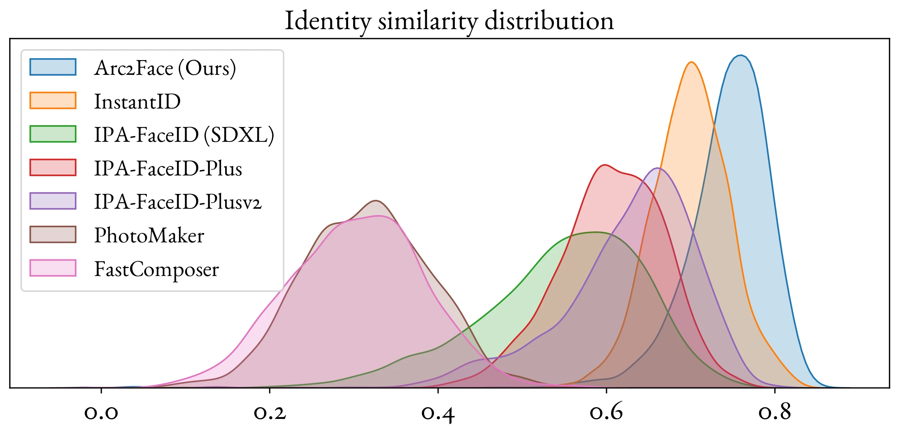
人评补上了独立于 CSIM 的证据。50 名用户对 30 个随机身份做并排盲选——只问"哪边更像输入的脸"，不问质量——Arc2Face 拿下 71.0% 的偏好，次优的 InstantID 只有 29.0% #Paraperas-Papantoniou et al., 2024。也就是说，embedding 里那份身份信息不仅是 CSIM 能读出的，人类裁判也认。
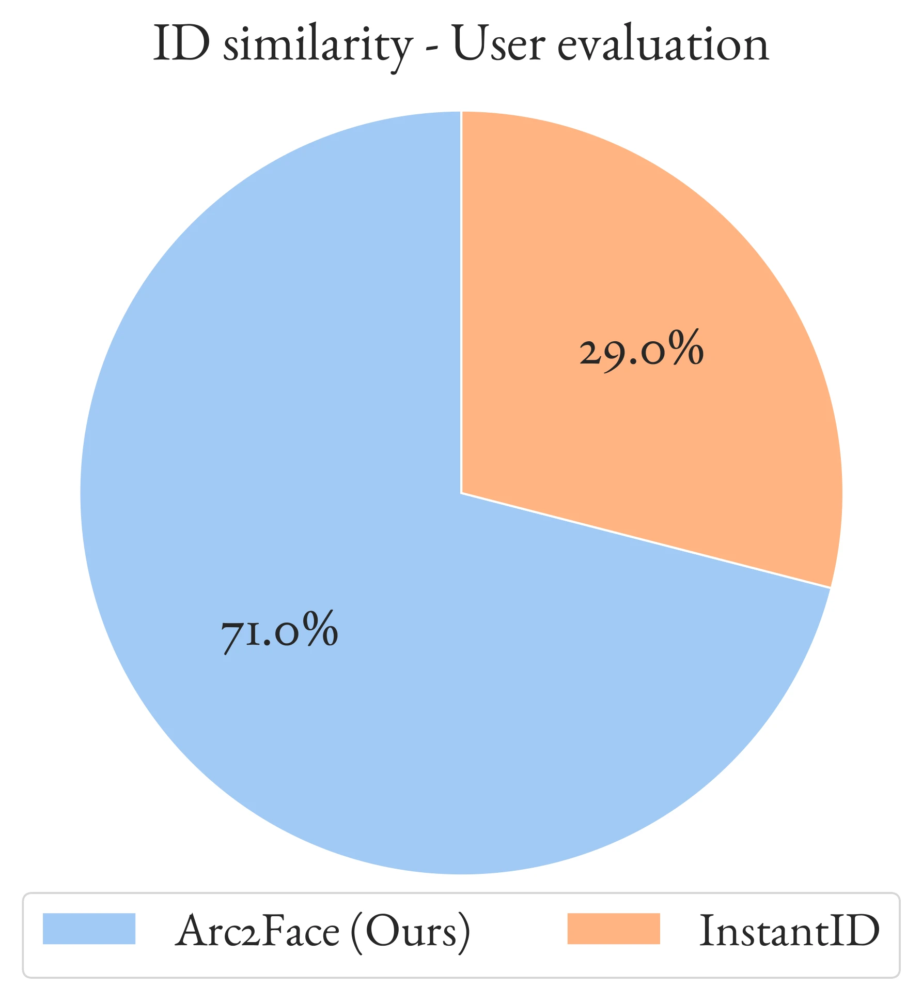
还有一个补充证据加固"信息充分性"的论证：对同一身份的多张图像取 embedding 平均，可以进一步提升生成保真度——论文的解释是 embedding 中混有少量表情、外观等与身份无关的噪声，平均能将其滤除 #Paraperas-Papantoniou et al., 2024。这说明 512 维向量里的身份信号与噪声是可分离的，至少部分可分离。
至此，"立"完成：CSIM 不是度量空气，它背后是经过重建验证的信息载体。站内 Arc2Face 精读（六十五）有这套机制的完整拆解。
反记忆实验：0.74 对 0.37
但正方论辩里埋着一条对立方也能用的证据。Arc2Face 做了反记忆检查：为 500 个未见过的身份各生成 5 张图（共 2.5K 张），检索每张生成图在全部训练数据（WebFace42M 恢复版、FFHQ、CelebA-HQ 合集）中 ID 相似度最高的训练样本。结果是生成图与未见输入特征的平均 CSIM 为 0.74，与最近训练样本的平均 CSIM 只有 0.37——论文据此认定模型没有死记训练集，能忠实地重建新身份 #Paraperas-Papantoniou et al., 2024。
从度量批判的视角，这组数字要反过来读：训练身份的最近邻相似度结构是存在的，而且模型容量足以让"见过的身份"获得比"未见的身份"更紧的复现（0.74 是对未见身份的重建相似度，训练身份本可以被记忆得更牢）。生成器有能力记忆训练分布中的身份——这意味着当训练集与评测集存在身份重叠、或模型刻意向高频身份坍缩时，CSIM 分数存在被"记忆化"抬高的空间。这条线索与后来发现的"生成人脸平均脸化"现象同族，是第 8 章作弊空间讨论的伏笔；此处只需记住：0.74 对 0.37 既是"无记忆"的自证，也是"可记忆"的自白。
同一篇论文的 PCA 消融从另一侧刻画了这份信息的密度：WebFace42M 的 ArcFace embedding 需要保留 300–400 个主成分才能维持面部保真度，压缩到更低维度就出现明显畸变——作者称之为"面部身份表示的固有复杂性" #Paraperas-Papantoniou et al., 2024。512 维不是冗余的豪华配置，而是接近必要的容量。
Limitations 原话：嵌入容量即天花板
正方论辩的最后一环，恰恰由正方自己收回。Arc2Face 的 Limitations 一节写道："Our method is limited by the capacity of the face embeddings encoder, as well as the datasets used, both of which are fortunately state-of-the-art."——方法受限于人脸嵌入编码器的容量与所用数据集，只是两者恰好都是当时最强的 #Paraperas-Papantoniou et al., 2024。
把这句自我限定翻译成度量论的语言：既然重建的上限是 embedding 的表达力，那么用这把 embedding 量出的 CSIM 的上限，就是 ArcFace 所知道的极限。生成器无法凭空补出编码器没编码的信息，同样，CSIM 分数也无法感知嵌入空间里不存在的身份差异。作者已经用消融展示过这条边界的具体形状：在 FFHQ 上从头训练（7 万张单人图）身份保持直接崩坏，证明小数据撑不起 ID-to-image 映射；把微调的 CLIP 编码器换成 MLP 投影，生成质量同样下降 #Paraperas-Papantoniou et al., 2024。而姿态维度更直白——Arc2Face 需要外挂 ControlNet（EMOCA/FLAME 法线）才能控制姿态，因为 embedding 里本来就不含足够的姿态自由度，这不是生成器的短板，是嵌入信息的缺口。
于是本章的论辩结构完整了：Arc2Face 一手证明 CSIM 有信息论基础（立），一手证明嵌入容量即度量天花板（破的起点）。同一篇论文，正反两面的证据齐备——这正是本 survey 把它选为第 2 章主角的原因。
2.4 同族不同几何：换一把 FR 尺子，排名会翻转
CSIM 家族内部也并非铁板一块。家族里的各个 FR 编码器——ArcFace、CurricularFace、AdaFace、FaceNet、VGG-Face——虽然都能产出"身份相似度"，但它们的嵌入空间几何性质有代际差异。这个差异最直观的入口是两个极端：VGG-Face（2015）是分类式的，以 softmax 身份分类为目标训练，DeepFace 实现里输出 2622 维特征，几何结构由"把每个身份分对"的判别边界塑造 #Parkhi et al., 2015；FaceNet（2015）与 ArcFace（2019 之后）则是度量式的——前者用 triplet loss 显式拉近同身份、推远异身份 #Schroff et al., 2015，后者用 additive angular margin loss 直接在超球面角空间上最大化类间角间隔 #Deng et al., 2019（这一损失设计的完整拆解见站内 ArcFace 深读）。分类式嵌入优化的是"与判别边界的关系"，度量式嵌入优化的是"彼此之间的距离结构"——两族空间里的余弦值，语义并不严格对齐。
FCB（Face Consistency Benchmark）用六个横跨 2015–2023 的 FR 模型做交叉验证，把这种几何差异变成了可观测的实证事实 #Podstawski et al., 2025。两组成果值得记录：其一，同一段生成视频换不同的 FR 编码器，余弦距离可以差 2 到 2.7 倍——Runway Gen-3 的视频在 Mode 1 协议下 VGG-Face 给 0.2827、Facenet 只给 0.1408；Vchitect-2.0 在 Mode 2 下 Facenet512 列 0.1962、GhostFaceNet 列 0.5266 #Podstawski et al., 2025。其二，模型排名会随编码器与协议翻转：Mode 1 下 Runway Gen-3 在六列中的四列最优，Mode 2 反转为 HunyuanVideo 三列最优（Runway 两列、Vchitect-2.0 一列），Facenet512 列的最优模型甚至从 Runway 换成 Vchitect-2.0 #Podstawski et al., 2025。"哪个生成模型的面部一致性最好"这个问题，没有不依赖裁判的答案——而分类式 VGG-Face 与度量式 ArcFace/FaceNet 的几何差异，正是排名翻转的候选机理之一（注意：这是本 survey 侧的机理假说，FCB 原文只报告现象，未做归因实验；系统验证留待第 7 章）。
家族内部的口径分治同样值得记录：VBench-2.0 用 ArcFace，OpenS2V 的 FaceSim 用 CurricularFace，ID-V2V 与 Arc2Face 附录用 AdaFace——三家分治，且没有任何一家做过"编码器选择对结论影响"的消融 #Zheng et al., 2025 #Yuan et al., 2025。当第 7 章把这些 benchmark 的分数并排放置时，读者需要记得：同一张脸在不同尺子下读出的数字，可能差出一倍以上。
2.5 分布外使用：FR embedding 外推假设
第三重框定最为隐蔽，可以命名为 FR embedding 外推假设——由 FCB 的方法论分析明确提出 #Podstawski et al., 2025。逻辑链是：FR 模型以度量学习目标训练，因此对训练分布内的真实人脸，同身份两图余弦距离小、异身份大，余弦是身份失配的单调代理——这一性质有充分保证。但生成评测把这条性质外推到了两个新场景：其一是同一身份的时序帧对，其二、也是更根本的，是 AI 生成的人脸。所有主流 FR 模型都在真实人脸照片上训练，协议却默认其 embedding 空间对生成人脸同样有效——即生成人脸落在真实人脸嵌入流形附近，其余弦距离仍可解释为"身份/面部差异"。这个外推没有任何保证，而生成人脸恰是 FR 的分布外样本：纹理统计、伪影模式、乃至已被心理学实证的"平均脸化"倾向，都可能让生成样本偏离 FR 训练时见过的流形 #Podstawski et al., 2025。
两个具体注脚。其一，FCB 六裁判中的 SFace 是唯一用合成数据训练的编码器，按"分布匹配"的直觉它应该对生成人脸更友好——但它给真实视频 baseline 的距离实测全场最差（Mode 1 下 0.1267，约为 Facenet512 0.0514 的 2.5 倍），说明合成训练分布并不会自动转化为对任何目标分布的判别力 #Podstawski et al., 2025。其二，VBench-2.0 的 Identity 管线用的是 InsightFace 风格的 resnet_face18 老骨干加 128×128 灰度输入——一条彻头彻尾的照片域预处理链，被原样搬到生成视频上，其分布偏移无人检验 #Zheng et al., 2025。顺带一提，这种"度量与人类判断的错位"后来被定量化的最直接证据来自 Identity-GRPO：在 500 个人类标注的偏好对上，ArcFace 的奖励预测准确率只有 0.772，低于论文设定的 0.8 可用线，而专门训练的 3B 奖励模型达到 0.890 #Meng et al., 2025——不过那已是第 3 章的故事。
至此，本章的"先立后破"全部就位。立：FR embedding 含有经过重建验证的充分身份信息，CSIM 有信息论基础。破的起点有三重：嵌入容量即天花板（Arc2Face 自己的 Limitations）；同族几何不兼容（FCB 的跨编码器方差与排名翻转）；分布外有效性未检验（FR embedding 外推假设）。第 3 章将把这三重假设的松动展开为五大缺陷的系统证据账本——P1 到 P5，每一条都能在本章找到伏笔。
第二章我们替 CSIM 立过正方案：Arc2Face 证明 FR embedding 含有足以重建一张人脸的身份信息，CSIM 并非空中楼阁 #Paraperas-Papantoniou et al., 2024。但"信息存在"与"度量有效"是两回事——一把刻度再准的尺子，拿去量它从未校准过的东西，读数仍然不可信。本章是全文的核心：我们把用户的五大痛点 P1–P5 逐个钉死在具体论文的数值证据上，每个痛点接受三重审问——失败现象是什么、数值证据是什么、机理是什么；最后再回答一个更让人不安的问题：FR 社区是不是十年前就知道答案？
先给一张证据地图，建议当作本章的考场座位表：每个痛点对应一行，行末是它在 FR 社区的"旧知识对应物"——那一列的空与不空，本身就是本章最重要的发现之一。
| 痛点 | 失败的直觉场景 | 代表证据与关键数值 | 失效机理 | FR 社区旧知识对应物 |
|---|---|---|---|---|
| P1 动漫/风格化参考失效 | 给动漫角色做身份判定，ArcFace 的读数接近抛硬币 | StyleID：Cross-Method split 上 ArcFace TPR 0.3721、Acc@0.4 恰为 0.5000；SKSF-A 手绘集 Acc@0.4 仅 0.5346 | FR 只在照片域身份流形上训练，风格化输入是分布外使用 | iCartoonFace 卡通人脸识别基准（2019）早已存在，生成评测零引用 |
| P2 视频时序漂移 | 首尾帧已不是同一张脸，"帧间平均相似度"却报平安 | FCB：Vchitect-2.0 Facenet512 列 0.2951↔0.1962 双协议排名反转；$|i-j|$ 期望约 $T/3$，慢漂移被低估约 3 倍 | 单一数字混淆"对锚漂移"与"帧间游走"两种病；锚定、采样、阈值协议各自为政 | （空白）时序一致性是生成场景的新问题，FR 无对应协议 |
| P3 环境变化不鲁棒 | 换个打光、转个头，CSIM 掉一截——身份明明没变 | ID-Sim selective sensitivity：7 评测集 49 setups 48 胜；FCB 同视频跨裁判分差 2–2.7×；ConsisID 大姿态 VIP-Test 崩至 0.269 | embedding 混入姿态/表情/光照等非身份因素，真实视频的 nuisance floor 非零 | 大姿态/光照敏感是 FR 老问题；SFace（合成数据训练）实测真实 baseline 最差 0.1267，说明旧知识也无法照搬 |
| P4 长时身份演变 | 数字人按剧本"整了容/老了十岁"，协议无法区分合法演变与漂移 | 16 篇深读论文零处理——数值缺席本身即证据；Arc2Face Limitations 自证嵌入容量即天花板 | 所有锚定协议都是静态的（参考图/首帧/代表帧）；演变信息不在 embedding 里 | CALFW 跨年龄基准（2017）；整容后 FR 失效（Rathgeb et al., CVPRW 2020）——十年前的答案无人搬运 |
| P5 风格化后无法度量 | 同一批风格化输出，多把尺子给出互相矛盾的排名 | StyleID 实证 ArcFace/CLIP/SigLIP2 全线失效；VBench-2.0 灰度 128×128 预处理链天然失效；VideoMaker FaceSim 76.45% vs Natural 47.08% | 度量与感知质量脱钩；平均脸是 FR 空间的高相似度吸引子，存在刷分空间 | BJP 2025 心理学实证：合成 AI 人脸比真人脸更接近平均脸 |
3.1 P1 与 P5：色彩即风格，而尺子读的是灰度
3.1.1 失败现象：两个场景，同一组证据
先看两个日常场景。场景一（P1）：你给数字人平台上传一张动漫角色的设定图，要求它在不同镜头里保持"同一个角色"，然后用 ArcFace 相似度做质检——分数忽高忽低，与肉眼判断几乎不相关。场景二（P5）：参考图是真人照片，生成输出是水彩、赛博朋克风格化人像，你问"身份保留了多少"——ArcFace、CLIP、SigLIP2 三把尺子给出三个互相矛盾的答案。P1 与 P5 的分野只在参考端是否为真人，失效机理同源，所以本节合并审理，证据全部来自 StyleID 的系统性实验 #Yun et al., 2026（精读见 StyleID 精读页；非真实感场景的前期讨论见系列十三 数字人卡通与风格化评测）。
3.1.2 数值证据：从 0.9975 到抛硬币
StyleID 先解决"没有真值"的问题：用 2AFC 心理测量实验收集人类判定——70 名被试（68 名通过双过滤器质控）产出 6088 份有效响应，最终筛出 3551 个带人类判定真值的对（StyleBench-H）；再以 90% 识别率阈值从识别率-强度曲线放大出约 22.4 万对训练监督（StyleBench-S，4073 个身份 × 55 张）#Yun et al., 2026。有了人类真值，"权威度量"们下场考试的分数如下：
| 方法 | Cross-ID TPR | Cross-Style TPR | Cross-Method TPR | Cross-Method Acc@0.4 |
|---|---|---|---|---|
| ArcFace | 0.7649 | 0.8511 | 0.3721 | 0.5000 |
| AdaFace | 0.7835 | 0.8563 | 0.3170 | 0.5000 |
| CLIP | 0.2560 | 0.5213 | 0.2127 | 0.5736 |
| SigLIP2 | 0.1736 | 0.3245 | 0.1431 | 0.5010 |
| StyleID（同域训练） | 0.9020 | 0.9255 | 0.7444 | 0.7658 |
表中 TPR 均在 FPR=1e-2 工作点、StyleBench-H 三 split 上报告 #Yun et al., 2026。三个读数值得逐一品味。第一，人类判别与 ArcFace 判别的差距：Cross-Method split（未见风格化方法 × 未见风格）上，人类被试能以 90% 以上识别率稳定判定"还是本人"的样本对，ArcFace 的判定准确率恰好落在 0.5000——字面意义的抛硬币；作为对照，同一个 ArcFace 在 LFW 自然照片验证上的准确率是 0.9975。同一个模型，换一个分布，从"工业标准"跌成"噪声发生器" #Yun et al., 2026。第二，换编码器救不了：AdaFace 同样崩到 0.3170，SigLIP2 在更简单的 Cross-ID split 上 TPR 就只有 0.1736——感知类编码器也不具备风格化域的身份判别力。第三，差距可以被域内训练补上（StyleID 同 split 0.7444、SKSF-A 艺术家手绘集 TPR 0.8891 / AUROC 0.9922），但代价是域特化：StyleID 在 LFW 上 TPR 0.9526，仍低于 ArcFace 的 0.9970——它是风格化域的专用尺，不是通用替代品，这个边界留给第 6 章展开 #Yun et al., 2026。
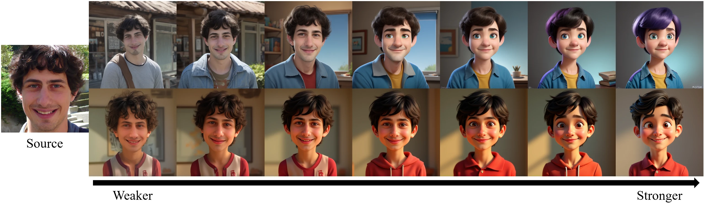
3.1.3 机理：两类错误，一条灰度预处理链
StyleID 把失效机理拆成两类方向相反的错误 #Yun et al., 2026：假阳性——色彩与纹理的风格偏移被计入身份变化，同一人水彩化之后与原照被判"不是同一人"；假阴性——夸张几何把身份特征改没了（大眼睛、尖下巴的动漫化），FR 分数却依然很高、漏检身份劣化。一个错在"把风格当身份"，一个错在"把丢身份当风格"，两类错误无法用调阈值的方式同时压下——这正是 Cross-Method 列 Acc@0.4 恰好停在随机线上的代数原因。更深一层：FR embedding 是照片域身份流形上的度量，风格化把人脸推出该流形，余弦距离在流形之外语义未定义。这是"FR embedding 的分布外使用"的教科书案例。
主流 benchmark 的预处理链让问题雪上加霜。VBench-2.0 的 Human Identity 维度在代码层的完整链路是：RetinaFace 检测、裁剪 resize 到 128×128、转灰度、再送入 resnet_face18 提特征 #Zheng et al., 2025（协议细节以代码库为准，见 VBench-2.0 参考页）。对真人照片，灰度化是压制光照 nuisance 的常规操作；对风格化人像，色彩本身就是风格与身份信息的载体——灰度化等于在判卷之前先销毁一半证据。这条链对风格化域天然失效，而它恰恰是目前最通用的 T2V 评测协议中身份维度的默认配置。
那么 FR 社区早知道什么？iCartoonFace 早在 2019 年就给出了卡通人脸识别的专门基准 #Zheng et al., 2019——FR 社区清楚知道"非真人域的身份判别"是一个独立问题、需要专门数据与专门训练。生成评测社区对这条知识线的引用是零：StyleID 之前，没有任何生成侧工作把卡通 FR 的存在当作证据来论证 CSIM 的域局限。P1/P5 不是新发现的问题，是被重新发现的老问题。
3.2 P2：时序漂移——两种病，一个数
3.2.1 失败现象与双协议排名反转
直觉场景：一段 121 帧的视频，第 1 帧和第 121 帧肉眼可见不是同一张脸，但"帧间平均余弦相似度 0.78"的质检报告一切正常。你的协议为什么瞎了？FCB（Face Consistency Benchmark）给出了迄今最锋利的实验回答：把 CSIM 放进两种协议——Mode 1（全部帧 vs 代表帧，测锚定保真）与 Mode 2（每视频 200 个随机帧对，测帧间相干），再用 6 个横跨 2015–2023 的 FR 模型交叉打分 #Podstawski et al., 2025（精读见 FCB 精读页）。结果：同一个模型在两种协议下排名反转。
| Facenet512 列 | Mode 1（对锚距离） | Mode 2（帧对距离） | 两协议名次变化 |
|---|---|---|---|
| Vchitect-2.0 | 0.2951（四模型垫底） | 0.1962（四模型第一） | 末位 → 榜首，完整反转 |
| CogVideoX1.5-5B | 0.1813（第二） | 0.4162（垫底） | 镜像反转 |
| HunyuanVideo | 0.2229 | 0.2307 | 基本稳定 |
| Runway Gen-3 | 0.1511 | 0.2319 | 第一 → 第三 |
表中数值为余弦距离（越低越好），30 视频平均 #Podstawski et al., 2025。Vchitect-2.0 的反转模式（对锚差、帧间好）与 CogVideoX 的镜像模式（贴锚、帧间崩）揭示了单一 CSIM 数字的根本缺陷：它把"整体偏离锚点"与"帧间互相游走"两种正交的失败模式压进了同一个数字。六列平均后反转依旧：Mode 1 均值 Vchitect 0.4150 垫底，Mode 2 均值末两位对调（Vchitect 0.4288 反而低于 CogVideoX 0.4317）。
更值得玩味的是 Vchitect-2.0 的身份：它是按"写作时 VBench 榜单顶尖"遴选的模型、出自 VBench 作者团队，却在 FCB 的 Mode 1 下六列全部垫底（ArcFace 列 0.4843、GhostFaceNet 列 0.5215），Mode 2 在四列仍垫底（0.4798–0.5266）、多数读数落在 0.48–0.53 区间——"通用榜单排名 ≠ 面部一致性"的活证据 #Podstawski et al., 2025。
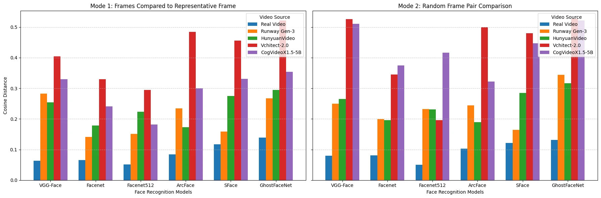
3.2.2 系统性低估：随机帧对平均只看到三分之一的漂移
Mode 2 还有第二重问题：即使协议本身被执行得完美，它对缓慢单调漂移也是钝感的。这个缺口值得一个完整的推导。
例：$\mathbb{E}\,|i-j|$——随机帧对的期望间隔
设：视频共 $T$ 帧，帧对下标 $i,j$ 独立均匀取自 $\{1,\dots,T\}$（即 FCB Mode 2 的随机帧对协议，帧允许跨对重复）。 求：帧对时间间隔的期望。 推导：间隔为 $k$ 的帧对恰有 $2(T-k)$ 个（$i$ 在前或 $j$ 在前），于是换言之，FCB 已经把 CSIM"协议化"了，但用户痛点所指的"前后帧身份漂移"（尤其慢漂移）仍不是 Mode 2 能可靠捕捉的量；Mode 1 能看到漂移，却又被"代表帧怎么选"这个未披露的自由度污染（这是 FCB 复现性的最大单点缺口）#Podstawski et al., 2025。
3.2.3 统计缺口与协议漂移：分数的地基是松的
统计严谨性上，FCB 的 60 个单元格全部是 30 视频均值——无方差、无置信区间、无显著性检验；在 $5\times 6\times 2=60$ 个单元格的多重比较下，"每列最优加粗"本质上是未经检验的点估计比较，Runway 0.1408 与 HunyuanVideo 0.1784 这类差距（Facenet 列，Mode 1）很可能不显著 #Podstawski et al., 2025。这不是 FCB 独有的病，而是整个领域的默认报告规范。
协议敏感性在生成侧还有两个更极端的实证。其一，ConsisID 的 FaceSim-Arc 随评测子集漂移：同一个模型、同一个指标，四个评测子集报出 0.73 / 0.58 / 0.52 / 0.46 四个数——引用 ConsisID 的数值必须带上协议警示 #Yuan et al., 2024。其二，Concat-ID 在自报协议下 CurSim 0.466，换到 KeyID 的 VIP-200K 测试集只剩 0.242——同方法、同指标（CurricularFace）、不同测试集，近乎腰斩 #Zhong et al., 2025 #Luo et al., 2026。CSIM 的绝对值强烈依赖测试分布，跨论文的数字不可直接比大小。
VBench-2.0 侧的时序协议则是另一种"未定义"：Human Identity 的锚是视频自身首帧（度量自一致性，而非"是否生成了指定身份"），得分定义为
最后替被批评者说句公道话：FCB 对 VBench 的批评——"DINO 全帧特征不裁脸、语义空间不对"——站得住，语义差异真实存在；但其"每帧 vs 首帧"的批评与 FCB 自己的 Mode 1（全部帧 vs 代表帧）在结构上同构。评测者在批评别人协议时，也要接受同样的审查。
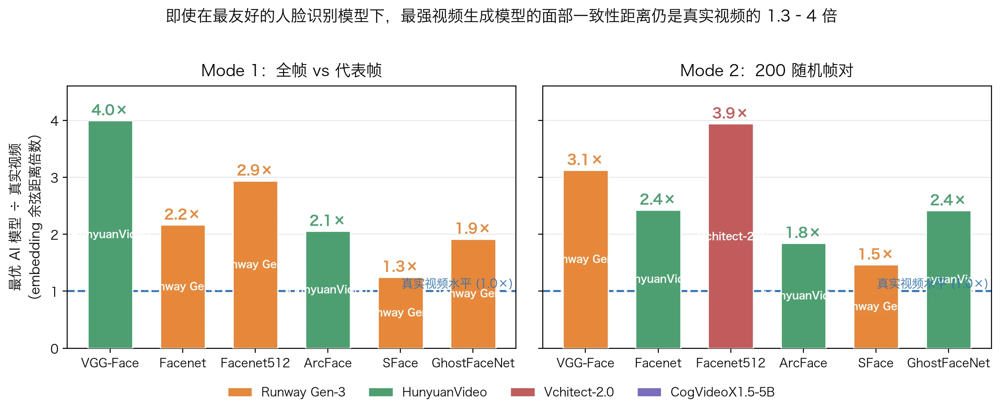
3.3 P3：环境变化——尺子对不该敏感的东西太敏感
3.3.1 失败现象与 selective sensitivity 形式化
直觉场景：同一个数字人换了个打光、换了背景、转了个头——身份没变，CSIM 掉了一截；反过来，某些身份已经变了的输出，分数却纹丝不动。尺子对 nuisance 敏感、对身份钝感，两个方向都错。ID-Sim 给了 P3 一个干净的形式化（精读见 ID-Sim 精读页）：
选择性敏感（Selective Sensitivity）——P3 的形式化
设 $d(x,y)$ 为身份相似度度量。理想的 $d$ 应满足：
其中 $x'_{\mathrm{env}}$ 是只改变环境因素（光照、背景、视角、姿态）的版本，$x'_{\mathrm{id}}$ 是修改了身份的版本。前式要求对环境变化不变，后式要求对身份修改敏感。ID-Sim 同时点名三类现有度量的失职：感知类（LPIPS/DreamSim 谱系）对齐整体外观，被环境变化带偏；对比学习类（CLIP 系）把细粒度差异压缩成高层语义相似；ReID 类（ArcFace 谱系在此列）优化的是判别边界而非感知对齐 #Chae et al., 2026。
3.3.2 数值证据：49 个 setup 里的 48 胜，与一次诚实的失手
ID-Sim 在 7 个评测集、49 个评测 setup 上取得 48 个超越此前最佳的成绩——这个数字的意义不在"刷榜"，而在其元评测方法论：用 MVImgNet 的 100 个 held-out 实例构造 identity × background × viewpoint × lighting 的联合编辑网格，对每个实例拟合线性回归 $\mathrm{sim}_i=\beta_0+\beta_1\,\Delta_{\mathrm{factor}}+\beta_2\,\Delta_{\mathrm{id}}+\varepsilon$，以斜率读出各度量对四个变化轴的敏感度，再用 1000 次 bootstrap 给出 95% 置信区间——度量本身被当作被测对象 #Chae et al., 2026。结论：DreamSim 身份敏感中等但背景/光照同样敏感；DINOv3 视角不变性强但对背景变化敏感；CLIP/LPIPS 对身份最钝感；ID-Sim 取得"高身份敏感 + 低环境敏感"的最佳平衡。
两点如实呈现。其一，环境不变性可以被显式训练而非祈祷获得：把生成式上下文编辑（只换背景/光照、前景不动）作为正样本掺入训练，验证 ROC AUC 从 0.89 升到 0.937，完整数据配方呈五级台阶 0.693→0.752→0.890→0.937→0.965 #Chae et al., 2026。其二，ID-Sim 自己也有代价：其光照鲁棒性略弱于 DINOv3——作者承认这是为保留身份相关的细粒度颜色线索而做的 tradeoff，即"选择性鲁棒"而非无条件鲁棒；另外 49 胜并非全胜，未赢的 setup 之一是 DreamBench++ 的 Spearman 相关（DreamSim 0.716 vs ID-Sim 0.6856——与人类感知对齐目标一致的对手在该 setup 仍占优）#Chae et al., 2026。
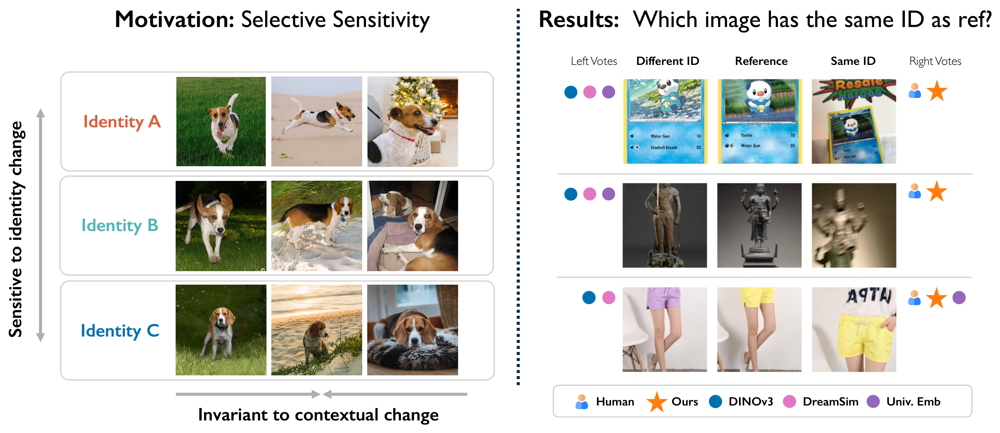
3.3.3 跨编码器方差与大姿态崩溃链
P3 的第二组证据来自 FCB 的六裁判交叉：同一批 Runway Gen-3 视频，VGG-Face 报 0.2827、Facenet 报 0.1408，差整整 2 倍；Vchitect-2.0 在 Mode 2 下 Facenet512 0.1962 vs GhostFaceNet 0.5266，差 2.7 倍；连真实视频的 nuisance floor 都随裁判漂移——Facenet512 0.0514 vs GhostFaceNet 0.1391（2.7 倍）#Podstawski et al., 2025。含义直接而残酷：真实视频因姿态/表情/光照的合法变化本来就有非零距离，这部分"地板"的大小取决于裁判；CSIM 的绝对阈值不可跨 embedding 模型移植，而距离里混叠的"身份漂移 ⊕ 合法环境变化 ⊕ 生成伪影"在单个数字里不可分。
大姿态是 P3 最锋利的刀。MoFE 的失败链（VIP-Test 大姿态/小脸场景，50 身份均值）：裸 CogVideoX 0.462、裸 Wan2.2 0.541、加三专家融合（ArcFace+CLIP+DINOv2）升到 0.605；而以单源 ArcFace 注入为代表的 ConsisID 在同一场景崩至 0.269——低于裸 Wan2.1 的 0.471 #Wang et al., 2025（论文 teaser 图另有一组单例读数 0.402/0.464/0.612，与基准均值略有出入，本文统一采用主表均值口径）。注意这层递进：不是"注入机制不行"，而是注入的 ArcFace 信号本身在大姿态下失真——度量缺陷顺着训练信号传染给了生成机制（3.5 节展开）。光照的极端案例来自 ID-V2V：源视频带强绿光/硬阴影时，残光照线索逐帧泄漏复现——连"光照是唯一合法变化"的专门化设计都无法完全挡住环境干扰 #Xu et al., 2026。协议侧的粗糙则见 VBench-2.0：多人/无人帧剔除（数字人常见的多人交互被天然排除），以及"场景切换后仍按首帧记分"的跨镜头换角误罚 #Zheng et al., 2025。
还有一个反直觉的注脚：SFace 是六个裁判中唯一用合成数据训练的 FR，它给真实视频的 baseline 反而最差（0.1267，是 Facenet512 的 2.5 倍）#Podstawski et al., 2025——合成分布没有自动转化为对生成分布的判别力。FR 旧知识无法照搬，迁移本身是问题（第 8 章回到这里）。
3.4 P4：长时演变——FR 十年前的答案，无人搬运
3.4.1 失败现象：一个由缺席构成的痛点
直觉场景：数字人运营一年后按运营需求"整了容"，或角色按剧本设定老了十岁。所有现有协议都锚定在静态参考图/首帧/代表帧上——它们能告诉你"和去年不像了"，却无法区分合法的演变与非法的漂移。P4 的证据形态与前三个痛点不同：它主要不是某篇生成论文的失败数值，而是一个系统性的缺席——本 survey 深读的 16 篇生成与评测论文，没有一篇引用或处理长时身份演变；所有锚定协议都是静态的。
3.4.2 FR 社区十年前就知道的答案
而 FR 社区的答案架上早有存货。跨年龄：CALFW 基准（2017）系统研究了无约束环境下的跨年龄人脸验证——FR 对跨年龄身份的敏感是十年前的已知结论，embedding 并非时不变的身份表示 #Zheng et al., 2017。整容：Rathgeb 等人在 CVPRW 2020 上用 "Plastic Surgery: An Obstacle for Deep Face Recognition?" 为题系统实证了整容手术对深度 FR 的干扰 #Rathgeb et al., 2020。换句话说：P4 所需的"何时 embedding 会失效"的知识，FR 社区在生成评测兴起之前就已积累成文——生成社区在逐条重新发现 P3 的姿态敏感（3.3.3 节）、P1 的域外失效（3.1 节），却没有任何一篇引用过跨年龄与整容这条线。两个社区的知识断层，在 P4 上最深。
3.4.3 生成侧的自我设限与容量天花板
生成侧并非没有触碰过这个问题，而是用"窄化"绕开了它。ID-V2V 把"风格化身份保持"形式化为视频重光照问题——"光照是唯一合法变化"，发型、妆容、年龄变化被任务定义主动排除 #Xu et al., 2026：用自我设限回避了演变的定义问题。Arc2Face 的 Limitations 则从另一头自证天花板：生成质量受 ArcFace embedding 容量与训练数据限制——CSIM 的天花板即嵌入容量，而"演变后的身份"这种信息根本不在嵌入里 #Paraperas-Papantoniou et al., 2024。InstantID 进一步承认 ID embedding 属性高度耦合（性别/年龄/身份纠缠）#Wang et al., 2024——连"只改年龄、不改身份"的编辑本身在表示层就困难。P4 的结论：这不是某个 benchmark 的 bug，而是整个协议家族的共同盲区。
3.5 度量的三重角色：当尺子同时是 loss、奖励与选帧器
P1–P4 是尺子的静态缺陷。还有一类动态缺陷更隐蔽：CSIM 不只被用来评测，它同时被用作训练信号——尺子被优化对象化，古德哈特定律在身份一致性领域全面上线。三个案例，三种角色。
3.5.1 作为 loss：PuLID 的面部模糊副作用
PuLID 的消融链把"直接优化 CSIM"的代价摆得很清楚：baseline Face Sim 0.561 → 加 naive ID loss 0.652 → 换精确 ID loss 0.761（CLIP-T 相对 baseline 跌 4.15 点）→ Stage3 加对比对齐 0.733（用 0.028 的 Face Sim 换回 +6.4 点 CLIP-T）#Guo et al., 2024。作者自己承认精确 ID loss 会导致面部模糊：模型学到的捷径是生成"纹理上更像 ArcFace 喜欢的平均好人脸"，而非真正保持身份——这是 reward hacking 的 loss 版本。
3.5.2 作为奖励：ArcFace 0.772，论文自证不合格
Identity-GRPO 在构建奖励模型前先做了一次"裁判资格考试"：在 500 个人类标注的偏好对上测各候选奖励的预测准确率——ArcFace 仅 0.772，论文明确判定低于 0.8 即 "unsuitable as a reward signal"（不适合当奖励信号）；未训练的 VLM 全军覆没（Qwen2.5-VL-3B 0.430、72B 0.657、InternVL3.5-38B 0.685）；自训的 3B 奖励模型达到 0.890 #Meng et al., 2025。这是"CSIM 与人类感知弱相关"最直接的量化——注意它出自一篇把 ArcFace 淘汰出奖励链路的论文，而非一篇批判檄文。但必须同时如实标注另一面：该论文的主指标 ID-Consistency 就是这个自训奖励模型的分数（VACE-1.3B 从 2.606 升到 3.099，+18.9%），优化目标与评测指标同源，评测循环性未被排除——user study（Win Rate 24%→76%）是唯一独立信号 #Meng et al., 2025。
3.5.3 作为选帧器：KeyID 对着答案挑帧
KeyID 的 IPKE 模块用 ArcFace 相似度 argmax 从候选窗口（$w=8$）挑出 $K=5$ 个关键帧做身份修正，而下游评测恰用 Face-Arc 口径打分（VIP-200K 上 Face-Cur 0.633 / Face-Arc 0.630）——选帧准则与评测度量同源，管线显式对度量优化，构造性偏置写进了流程图 #Luo et al., 2026。0.633 的高分里有多少是身份保持、多少是"对着答案挑帧"，从分数本身无法分离。
三重角色合流的含义：当 loss、奖励、选帧器与评测指标共享同一把尺子，社区在系统性地训练模型"讨好 ArcFace"而不是"保持身份"。这正是第 4–5 章的叙事起点——图像与视频的注入机制如何在坏尺子下演进；也是第 8 章"抗作弊基准"的动机。
3.6 FR-感知脱节：高分掩盖的平均脸陷阱
3.6.1 VideoMaker：身份最高分，自然度最低分
P1–P5 说的是"尺子不准"；本节补上最后一刀："尺子的高分"与"人类眼中的好"可以彻底脱钩。OpenS2V-Nexus 的 human-domain 排名表里（见 OpenS2V-Nexus 参考页），VideoMaker 的 FaceSim 76.45% 全场最高——超过所有闭源模型；同一行，Natural 47.08% 全场最低，GmeScore 45.28% 同为垫底 #Yuan et al., 2025。一个把参考脸"贴"得最死的模型拿了身份最高分，却生成了最不自然的视频。机制解释就在同一篇论文的失败现象学里：copy-paste——参考图的表情/光照/姿态被直接复制进生成帧；FR 分数喜欢这种"像素级忠诚"，人类观众不喜欢 #Yuan et al., 2025。这是 FR 分数与感知质量脱节的最极端实证。
顺带处理一个口径问题（本文不做裁决）：VBench-2.0 的人脸身份用 ArcFace（resnet_face18、灰度 128×128、首帧自一致、$\tau=0.4$）#Zheng et al., 2025，OpenS2V 的 FaceSim 用 CurricularFace（insightface 检测、参考一致）#Yuan et al., 2025，FCB 用 6 模型交叉 #Podstawski et al., 2025——三家互不兼容，且均无"FR 选择对结论影响"的消融。FR 编码器口径本身是未决问题，这场口径战争留给第 7 章。
3.6.2 平均脸陷阱：一个心理学实证的作弊空间
脱节的深层机理在 2025 年得到了心理学实证：British Journal of Psychology 的工作 "Too good to be true: Synthetic AI faces are more average than real faces"（连超级识别者都能察觉这一平均化）证明合成 AI 人脸比真人脸更接近人群平均脸 #Dunn et al., 2025。而平均脸恰好是 FR embedding 空间的高相似度吸引子——FR 训练把大量身份挤进一个稠密的"典型脸"区域，越典型的脸彼此余弦相似度越高。两者叠加的推论令人不安：生成模型天然存在"往平均脸生成"的捷径，而这条捷径恰好推高 CSIM——分数里有多少是身份、多少是平均化，无法分离。作弊不是纯理论：Arc2Face 的反记忆实验显示，生成模型对训练身份的最近邻相似度 0.74、对未见身份仅 0.37——模型确实能靠记忆训练身份刷分 #Paraperas-Papantoniou et al., 2024；PhotoMaker 的 single-image 训练变体 Face Sim 最高（60.4）而 Face Diversity 最低（51.7），是记忆化的另一形态 #Li et al., 2024。
本章小结：五种投影，一个根因
- 根因一：FR embedding 的分布外使用（投影为 P1/P3/P5）——尺子只在照片域身份流形上校准；风格化、环境变化、生成人脸把输入推出流形，距离语义未定义。数值锚点：ArcFace Cross-Method 0.3721、跨裁判分差 2–2.7×、VideoMaker 76.45%/47.08%。
- 根因二：协议未定义（投影为 P2/P4）——锚定方式、帧采样、阈值、时间跨度各自为政；同一模型换个协议就换排名（0.2951↔0.1962），长时演变干脆无人定义（16 篇深读零处理）。
- 动态放大器：度量被优化对象化——CSIM 同时是 loss（PuLID 面部模糊）、奖励（ArcFace 0.772 被判不合格）、选帧器（KeyID argmax 偏置）。
- 知识断层——FR 社区为 P1（iCartoonFace 2019）、P3（姿态敏感）、P4（CALFW 2017 / 整容 CVPRW 2020）准备的答案，在生成评测文献里零引用。
五大缺陷不是五个孤立的 bug，而是同一个根因的五种投影。尺子的问题已经说清；接下来第 4–5 章看机制侧如何在坏尺子下演进（跷跷板与循环性），第 6–7 章看新度量与 benchmark 如何回应（感知对齐、selective sensitivity、双协议与口径战争）。
第 3 章用五份证据账本，把 CSIM（ArcFace 家族余弦相似度 #Deng et al., 2019）的五大缺陷钉在了墙上。一个自然的问题随之而来：既然尺子有病，那被尺子度量的那台机器——身份保持生成模型本身——这几年是怎么造出来的？本章转向机制侧：在度量问题远未解决的前提下，图像侧的身份注入机制如何一步一步演进。答案可以先概括成一句话：四种范式轮流上位，每一代都修掉上一代最痛的缺口，但"身份 vs 可编辑性/自然度"的跷跷板从未离场——而且每一代的代价，都是用那把有病的尺子记账的。
4.1 问题定义：把一张脸"装进"文生图模型，且不毁掉其他能力
图像侧任务的形式化表述：给定参考人脸图（一张或几张）$I_{ref}$ 与文本 prompt，要求（通常是冻结的）文生图扩散模型生成同时满足以下条件的图像：
- 身份保真（identity fidelity）——生成的人脸要被认成参考人；
- 文本可控（prompt following）——改 prompt 要真的改变生成结果（风格、场景、姿态、属性）；
- 插入纯净（purity / 无污染）——除了脸，其余一切（背景、光照、构图、风格）应与"没插入这个 ID 时"的原模型行为一致。
前两条从 2023 年起就是显式目标；第三条要到 PuLID 才被形式化，但它的症状（插入 ID 后风格退化、脸融不进背景）从第一篇起就存在。三条目标两两冲突，实践中被压成一根跷跷板：
身份跷跷板
身份信号注入越强，生成结果越像参考人，但越不听 prompt 的话、越偏离底座模型的自然分布；放松注入则反之。本章将看到它被换接口、换通路、换表示、换训练目标，被定价、被治理——但从未被消除。
四种范式的总览如下表。注意排序依据是机制谱系（注入机制 → 双路分工 → 表示与数据 → 训练目标），与 arXiv 时间大致重合但不完全一致：PhotoMaker（2023.12）与 InstantID（2024.01）实为同期竞品，本章按机制逻辑而非投稿日期编排。
| 范式 | 代表工作 | 时间 | 注入方式 | 身份信号源 | 主要代价 |
|---|---|---|---|---|---|
| 一：解耦交叉注意力 | IP-Adapter | 2023.08 | 平行新增图像专属注意力层，Q 共享、K/V 独立投影、输出加性融合（22M 参数） | OpenCLIP ViT-H/14 全局嵌入（4 token，冻结） | CLIP 全局嵌入无身份语义——给了接口，没给身份 |
| 二：双路注入 | InstantID | 2024.01 | Image Adapter（语义路，细）+ IdentityNet（空间路，粗：仅 5 个面部关键点） | InsightFace antelopev2 FR 嵌入（冻结） | FR 嵌入属性耦合（性别/年龄/身份纠缠）→ 编辑困难；全文零身份定量评测 |
| 三：堆叠 ID embedding | PhotoMaker | 2023.12（CVPR 2024） | 多图嵌入与类词融合、沿长度维拼接，替换文本嵌入中的类词槽位（原生注意力 + LoRA） | CLIP ViT-L/14（部分层微调）+ 类词融合 | 单 ID 限制；参考图越多 CLIP-T 越低；暴露身份度量间排名矛盾 |
| 四：对齐解耦训练 | PuLID | 2024.04（NeurIPS 2024） | 不改注入架构，改训练目标：Lightning T2I 分支 + 对比对齐 + 精确 ID loss | antelopev2 + EVA-CLIP（5 全局 token）+ 多层 CLIP（5 局部 token） | ID loss 过强导致面部模糊；跷跷板被定价而非消除 |
下面逐一展开。每一节按"动机 → 直觉 → 机制"三层递进：先说它要修上一代的什么痛点，再讲设计直觉，最后进公式与数字。
4.2 范式一：解耦交叉注意力——IP-Adapter 立起的接口
动机：图像特征被迫"说文本的方言"
2023 年中的社区手里有"冻结的文生图模型 + 一张参考图"，想要的是"以图提词"。两条已有路线都不理想：全量微调（SD Image Variations、SD unCLIP，860–870M 可训练参数）会毁掉文本生成能力、且无法迁移到社区模型；拼接式适配器（T2I-Adapter Style、Uni-ControlNet global 等）把图像特征与文本特征拼接后送进冻结的 cross-attention，COCO 上 CLIP-I 只有 0.648–0.736。#Ye et al., 2023 的诊断直指要害：预训练模型的 cross-attention K/V 投影是为文本特征训练的，图像特征挤进同一条投影通路，等于被迫"说文本的方言"——图像特有的信息在投影空间里被压缩殆尽。注意此时的问题甚至还不是"身份"：IP-Adapter 的任务定义是图像提示（image prompt），主体级一致性被作者明确列为 open problem。
直觉与机制：给图像单独开一条注意力通路
既然瓶颈在共享投影，那就解耦——文本与图像各自保有独立的 K/V 投影，查询 Q 共享（因为两条路查询的是同一组空间位置），输出加性融合。融合公式为：
其中 $Q=ZW_q$ 由共享投影生成；$K=c_tW_k$、$V=c_tW_v$ 服务于文本特征 $c_t$（冻结）；$K'=c_iW'_k$、$V'=c_iW'_v$ 服务于图像特征 $c_i$（可训练，从 $W_k/W_v$ 初始化以加速收敛）。在 SD v1.5 全部 16 个 cross-attention 层旁各加一个这样的图像层；$c_i$ 来自冻结的 OpenCLIP ViT-H/14 全局图像嵌入，经投影网络压成 $N=4$ 个 token。训练只动这 22M 参数，损失与 SD 同型的去噪损失，无任何身份损失；推理时图像路可加权 $\lambda$，$\lambda=0$ 时严格退化为原模型。
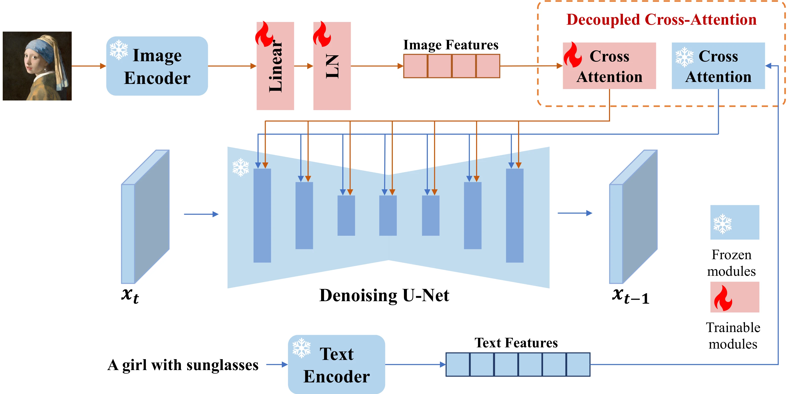
22M 参数与零样本泛化的关键设计
定量结果是这条路线的立身之本：COCO 验证集 5000 图、每图 4 张生成的协议下，IP-Adapter 取得 CLIP-I 0.828 / CLIP-T 0.588——适配器类最优，CLIP-I 超过 870M 参数的 SD unCLIP 全量微调（0.810），逼近从零训练模型（0.830–0.858），远超拼接式适配器（0.648–0.736）#Ye et al., 2023。零样本泛化的关键正是解耦投影本身：新模块不触碰原模型的任何参数，训好的适配器可以即插即用地迁移到同底座社区模型，并与 ControlNet 等结构控制工具叠加——"可插拔"由此成为整个注入谱系的工程默认值。
接口而非身份：FaceID 谱系与粒度鸿沟
对本 survey 更重要的是它没做什么。评测里没有任何身份指标——无 CSIM、无 FaceNet——因为任务定义是"图像提示相似度"，不是身份一致性；作者也明确承认做不到 Textual Inversion / DreamBooth 级别的主体一致。IP-Adapter 事实上把问题一分为二："怎么注入"被解决，"注入什么身份信号"留给后继。社区随即在这个接口上换信号源，长出 IP-Adapter-FaceID 谱系。#Wang et al., 2024 的对比实验给这条谱系做了阶段性判词：FaceID 系列换入 face embedding 后保真有所提升但仍不足；FaceID-Plus 混合 face 与 CLIP 嵌入，保真变好但风格退化、"脸无法融入背景风格"。病根是粒度鸿沟：ImageNet 级的 CLIP 全局语义与身份级的 FR 语义之间差着一整个抽象层。范式一的接口需要一位真正携带身份语义的信号源——这正是范式二（选 FR 派）与范式三（选微调后的 CLIP 派）分头去补的缺口。
另有一处值得提前记账的细节：作者试过用 CLIP 细粒度 grid 特征 + 16 个可学习 query token 替代全局嵌入，一致性更高，但模型学到了空间结构、损害多样性——保真与自由度的交换在图像提示阶段就已现身，可视为跷跷板的最早机制级证据 #Ye et al., 2023。
4.3 范式二：双路注入——InstantID 的语义/空间分工
动机：单路注入下，保真与可编辑性此消彼长
范式一留下两个痛点。信号侧：CLIP 全局嵌入是 "coarse representation"，无法实现人脸保真 #Wang et al., 2024。机制侧：只在 cross-attention（语义层）注入，身份没有空间锚定——而单路注入下保真与可编辑性此消彼长：把嵌入拼进长序列，序列难控；直接增强图像 token，编辑性受损。InstantID 的立论即在于此：现有 ID embedding 方法"要么全量微调 UNet（不兼容社区模型）、要么人脸保真不足"。
直觉与机制：细的语义路 + 粗的空间路
设计直觉："这是谁"（语义）与"脸在哪、多大"（空间）是身份的两个正交成分，不该挤一条通路。分工方案是三组件 #Wang et al., 2024：
- ID embedding：InsightFace antelopev2（冻结）提取人脸嵌入，可训练投影层将其投到文本特征空间。选型论点：CLIP 在弱对齐数据上训练，特征只含构图/风格/颜色等宽泛语义；人脸识别表征是现成的、判别力最强的身份信号源。
- Image Adapter（语义路，细）：IP-Adapter 式解耦交叉注意力，image prompt 换成投影后的 ID 嵌入——范式一的接口被原样继承，换的只是信号源。
- IdentityNet（空间路，粗）：ControlNet 变体，两处关键改造——空间条件从 OpenPose 的全套关键点缩减到仅 5 个面部关键点（双眼、鼻尖、双嘴角），构成弱空间约束：锚定位置但不锁脸型与表情（完全无约束则人脸自由度过大）；删去文本条件，cross-attention 条件改为纯 ID 嵌入——让残差路只管身份，不被泛化文本描述干扰。
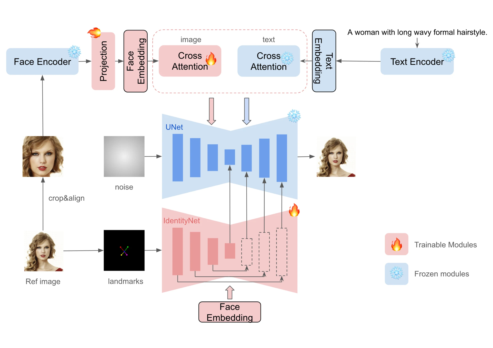
训练目标就是标准去噪损失——无 identity loss、不随机丢弃条件（与 IP-Adapter 的 5% 丢弃策略不同）；底座 SDXL-1.0 冻结；48×H800 训练；数据为 LAION-Face 5000 万图文对加 1000 万网络高质量人像。产品定位是使用侧零负担：单张参考图、无测试时微调、秒级出图，单图效果可与多图训练的角色 LoRA 竞争；多参考图策略是 ID 嵌入取平均（与范式三的堆叠形成直接对照）。
零定量的历史证物
现在到本章必须直视的一个事实：InstantID 全文没有一张定量表。没有 CSIM/ArcFace，没有 CLIP-I/DINO，没有 FID，没有用户研究数值——LaTeX 源码验证，评测 100% 依赖定性对比图。一个投入 48×H800 算力、拿下万星社区的方法，其证据形态是"看图"。这不是作者的疏忽，而是 2024 年初图像侧的真实生态：不存在统一的身份评测协议，也就没有可填的表。与同期 PhotoMaker 的完整定量协议（25 个评测 ID × 40 条 prompt × 每设定 4 张，五类指标）并置，恰成"图像侧评测口径缺席"的一对历史证物——这正是第 1 章论据在机制侧的回响。后果延续至今：InstantID 的所有身份数值都出自别人的评测表，而 4.5 节将看到，这些读数强烈依赖评测者选择的底座。
代价：FR 嵌入的属性耦合
InstantID 自认的局限是 ID 嵌入的属性高度耦合：性别、年龄与身份纠缠在同一向量里，空提示下性别可能不准，人脸编辑因此困难。这是 FR 嵌入作为信号源的原生毒性——判别性嵌入为"区分你我"而生，不为"编辑属性"而生。同一枚硬币的另一面，将在范式四以"污染"的形式被正式命名。
4.4 范式三：堆叠 ID embedding——PhotoMaker 的表示与数据双修
动机：换掉"一个身份 = 一张图"的绑定
前两个范式都在"注入机制"轴上做文章（加通路、换编码器）。PhotoMaker 把攻击轴换到表示与数据（它与 InstantID 同期互为竞品，后者批评它 "fall short in ensuring high face fidelity"）。其对嵌入系方法的两点根因诊断 #Li et al., 2024：
直觉与机制：占据类词槽位的可变长身份序列
设计直觉：个性化生成的老毛病是"一个身份"与"一张图"绑定过紧。如果身份的表示不是单张图的嵌入、而是一组图的嵌入序列，模型被迫去学跨图不变量——单图里的表情、视角、配饰各不相同，唯一共同的正是身份本身。堆叠操作为：
其中 $N$ 张 ID 图（背景填随机噪声）经 CLIP ViT-L/14（微调部分 Transformer 层）与投影得嵌入 $e^i$；每个 $e^i$ 与文本中的类词（man/woman）特征经 2 层 MLP 融合得 $e'^i$；$s^*$ 即堆叠 ID embedding。最后把文本嵌入 $t$ 中类词位置的向量替换为 $s^*$，得到长度 $L+N-1$ 的扩展嵌入，交给冻结 SDXL 的原生 cross-attention 融合（另训练注意力层矩阵的 LoRA 残差）。与范式一的根本区别在此：不加新注意力层——身份走文本的既有通道，占据了"一个男人"这个词的槽位。训练仅去噪损失 + masked diffusion loss（50% 概率只对 ID 区域计损）+ 10% null-text CFG，无 identity loss；每迭代随机采 1–4 张同 ID 图。
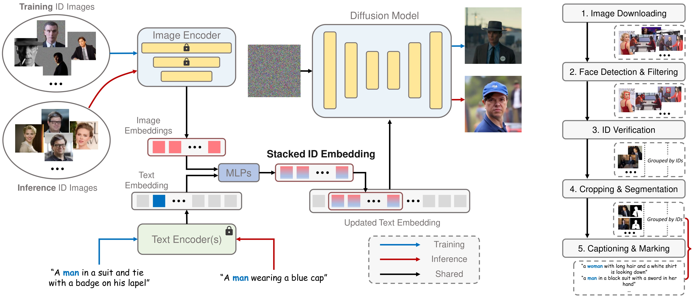
这一设计换来两个副产品能力：其一，$N$ 可变——任意数量参考图即插即用，消融显示堆叠优于"取平均"与线性投影（DINO 49.5 vs 47.0/47.3；Face Sim 53.6 vs 48.8/48.1）——保留序列结构胜过压缩为单向量，也顺带否定了 InstantID 式取平均的聚合方式；其二，推理时输入不同 ID 的图组构成堆叠，得到 ID mixing 身份混合能力，混合比例由图池占比控制。效率上，单次前向约 10 秒生成，对 DreamBooth 的 1284 秒约 130 倍。
排名矛盾：三把尺子选出两个冠军
PhotoMaker 是四篇中评测协议最完整的一篇，也正因完整，它贡献了本 survey 度量批判链条上最早的定量证据——身份指标间的排名矛盾。其 universal recontextualization 主表（25 个与训练集不重叠的评测 ID × 40 条 prompt × 每设定 4 张生成）关键行如下 #Li et al., 2024：
| 方法 | CLIP-T% | CLIP-I% | DINO% | Face Sim.% | Face Div.% | Speed(s) |
|---|---|---|---|---|---|---|
| DreamBooth | 29.8 | 62.8 | 39.8 | 49.8 | 49.1 | 1284 |
| Textual Inversion | 24.0 | 70.9 | 39.3 | 54.3 | 59.3 | 2400 |
| FastComposer | 28.7 | 66.8 | 40.2 | 61.0 | 45.4 | 8 |
| IPAdapter | 25.1 | 71.2 | 46.2 | 67.1 | 52.4 | 12 |
| PhotoMaker | 26.1 | 73.6 | 51.5 | 61.8 | 57.7 | 10 |
读法：Face Sim 上 IPAdapter（67.1）高于 PhotoMaker（61.8），IPAdapter 赢；但 DINO（51.5 vs 46.2）与 CLIP-I（73.6 vs 71.2）排名相反，PhotoMaker 赢。三把身份尺子选出两个冠军。哪个对？用户研究（40 人 3200 票）四维全第一的是 PhotoMaker——但这只是把裁判从度量换成了人。第 3 章"不同身份度量给出不同排名"的结论，在这里提前一年预演。顺带一处论文内部不一致：正文称 Face Sim 由 FaceNet 计算、附录却引 ArcFace——连作者自己都没有统一身份度量的口径，2024 年初的度量生态可见一斑。
记忆化与跷跷板的定量形态
另一个证据形态来自训练数据消融：当训练时每个 ID 只有一张图（"single image"配置，模拟输入信号不足的数据条件），Face Sim 反而全场最高（60.4）——但 Face Diversity 全场最低（51.7）#Li et al., 2024。ID 分数与多样性同时走向极端，说明分数的一部分并非"保持了身份"，而是模型向训练分布的记忆与坍缩。这与第 3 章讨论的作弊空间（Arc2Face 的反记忆实验、生成人脸的平均脸化）同族：CSIM 的高分可以被非身份因素买到。
跷跷板同样被 PhotoMaker 画成了曲线：输入 ID 图数增加，ID 指标上升（1→2 张跳升最大、之后放缓），CLIP-T 线性下降，性别编辑能力下降。同一根跷跷板上还有第二处断裂：用户研究里 CLIP-T 排第一的 DreamBooth 在四维人评中全面落后于 PhotoMaker——作者指出 CLIP-T 只检查"物体有没有出现"，与人类对文本遵循的判断并不对齐 #Li et al., 2024。代价清单的最后两项：明确只支持单 ID（多身份留给视频侧），半身像强、全身像弱。
4.5 范式四：对齐解耦训练——PuLID 给跷跷板定价
动机：污染的根因在训练目标，不在注入架构
前三个范式共享一个隐含假设：只要注入机制与身份表示选对了，跷跷板自然缓解。#Guo et al., 2024 的诊断推翻了它——问题出在训练目标。常规训练中，ID 条件从目标图裁出，训练本质是"重建那张图"；模型会把 ID 嵌入中 ID 无关的信息用尽，参数也被拉向真实人像分布；测试时 prompt 与 ID 冲突（换个风格、换个场景），失败立刻显形——训练与测试的设定鸿沟。作者还把领域经验规律挑明："ID 保真越高的方法污染越严重"——跷跷板不是工程失误，而是重建式训练范式的必然产物。PuLID 同时首创了污染的代理度量 CLIP-I（ID 插入前后的 CLIP 图像相似度），第一次让"污染"可以进表格。
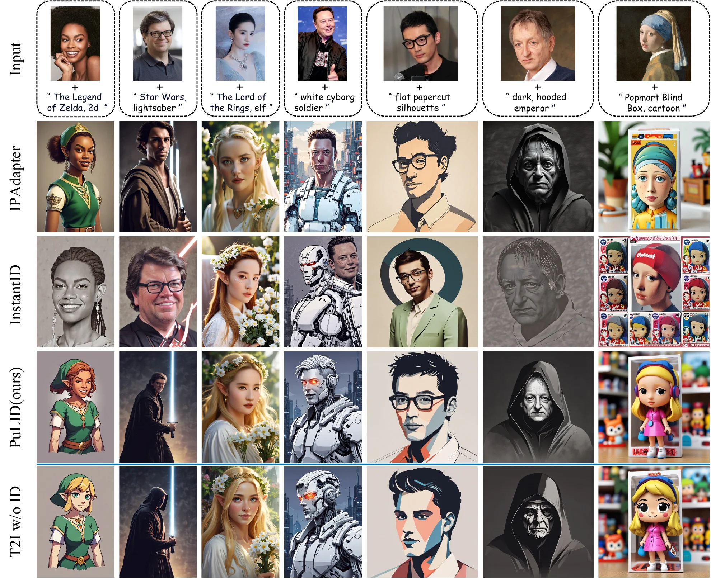
直觉与机制：Lightning 分支 + 对比对齐 + 精确 ID loss
设计直觉：既然失败发生在"带 ID 条件从噪声生成"的测试设定下，就把这个设定搬进训练。这需要一个能在训练循环内快速产出逼真生成结果的引擎——SDXL-Lightning 4 步采样分支，从纯噪声迭代去噪到逼真的 $x_0$。在这个分支上，同 prompt、同初始 latent 地跑两条路径（有/无 ID 条件），两者输出的全部差异就是"插入这个 ID 带来的影响"——其中只有脸该变，其余都该不变。对齐损失约束"不变"，ID loss 约束"脸变对"。PuLID 消费范式一的注入件（IP-Adapter 式并联注意力；ID 编码 = antelopev2 末层与 EVA-CLIP CLS 拼接经 MLP 成 5 个全局 token，加 ELITE 式多层 CLIP 成 5 个局部 token），替换的是训练目标，共三项：
其一，常规去噪损失。其二，对比对齐：对齐两条路径在所有层、所有 timestep 上的 UNet cross-attention 特征。语义对齐 $\mathcal{L}_{\mathrm{sem}}$（论文记 L_align-sem，$\lambda=0.6$）用文本键查询 UNet 特征，要求语义响应在两条路径上一致：
其中 $Q_{t+id}$ 与 $Q_t$ 分别是带/不带 ID 条件路径的查询特征，$K$ 是文本键——同一文本查询在两条路径上的注意力响应应当相同。布局对齐 $\mathcal{L}_{\mathrm{layout}}$（$\lambda=0.1$，权重刻意压小——压大了会伤 ID 保真）则直接以 L2 对齐查询特征以锁定布局。其三，精确 ID loss——在 Lightning 分支生成的 $x_0$ 上计算身份余弦（$\lambda_{id}=1.0$，prompt 固定为 "portrait, color, cinematic"）：
其中 $\psi$ 是 ArcFace 编码器，$C_{id}$ 为参考图 ID 嵌入，$\mathrm{LT2I}(\cdot)$ 表示 Lightning T2I 分支从纯噪声 $x_T$ 出发的 4 步生成。与常规 ID loss 谱系的关键区别在于损失作用的对象：前者作用于单步或低噪声近似的 $x_0$，PuLID 的 $x_0$ 与测试设定同构（都是从噪声带 ID 条件生成）——仅此一项改动，Face Sim 从 0.652 提到 0.761。训练按三阶段课程推进：Stage1 纯扩散 → Stage2 加 ID loss（保真最大化、容忍污染）→ Stage3 加对齐（完整目标）。
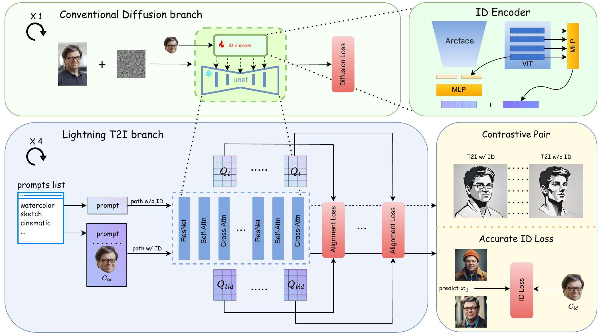
跷跷板的定量形态：0.761→0.733 换 +6.4 CLIP-T
DivID-120（120 张多肤色/年龄/性别测试图，另有 Unsplash-50）上的消融链，是本章最重要的一张表 #Guo et al., 2024：
| 训练阶段（DivID-120） | Face Sim | CLIP-T | CLIP-I |
|---|---|---|---|
| Baseline（仅去噪损失） | 0.561 | 29.06 | 0.736 |
| + naive ID loss | 0.652 | 27.05 | 0.683 |
| + 精确 ID loss（Stage2） | 0.761 | 24.91 | 0.624 |
| + 对比对齐（Stage3，完整模型） | 0.733 | 31.31 | 0.812 |
读法分三层：baseline 0.561 是"不处理身份"的下界；Stage2 把 Face Sim 推到全程最高的 0.761，代价是 CLIP-T 从 29.06 崩到 24.91（−4.15 点）、CLIP-I 掉到 0.624——纯 ID loss 的污染被定量钉死；Stage3 的对齐项用 0.028 的 Face Sim（0.761→0.733）换回 +6.4 的 CLIP-T（24.91→31.31）与 +0.188 的 CLIP-I（0.624→0.812）。身份保真与提示遵循之间的交换第一次有了汇率。
双尺子与跨底座读数
PuLID 的评测协议还有一个自觉设计：训练用 arcface-50，评测用 CurricularFace——一把尺子出题、另一把尺子改卷，防止模型对着评测度量过拟合。这是图像侧第一个明确的训练/评测度量解耦实践，也是后来视频侧 FaceSim-Arc / Face-Cur 双尺子惯例的先声。但要立即补一句：双尺子解决的是"过拟合单尺"，不解决"两把尺子都有病"（第 3 章）。
SDXL-Lightning 底座上的主表（DivID-120）如下 #Guo et al., 2024：
| 方法 | Face Sim | CLIP-T | CLIP-I |
|---|---|---|---|
| PhotoMaker*（SDXL-base） | 0.271 | 26.06 | 0.649 |
| IPAdapter | 0.619 | 28.36 | 0.703 |
| InstantID | 0.725 | 28.72 | 0.680 |
| PuLID | 0.733 | 31.31 | 0.812 |
PuLID 三项全能。但换底座必须重新读数：SDXL-base（非加速）表上，InstantID 的 Face Sim 0.755 高于 PuLID 默认配置的 0.722——这是 PuLID 在其评测中的唯一落后项，且必须带底座条件表述；PuLID 的 max-ID-sim 变体以 0.773 反超，同时 CLIP-T 以 30.69 对 InstantID 的 25.33 大幅领先。同一对方法、同一把尺子（CurricularFace），换底座即排名翻转——第 3 章"跨协议读数不可比"的结论，在机制侧自己的评测表里就能复现。
副作用：ID loss 的面部模糊
最后是作者自认的副作用：精确 ID loss 导致面部模糊。对 ID 分数的优化压力直接损伤生成质量——对齐可以大幅缓解但未根治（论文对齐损失一节的定性对比有可视化）。这就是度量批判在训练侧的定性形态：当 CSIM 的孪生兄弟（ID loss）被推强，分数涨、脸变糊——度量与生成质量的脱节不再只是评测问题，而是训练问题。"无副作用的 ID loss"被作者列为开放问题；损失设计在这类任务中的全景梳理，可参考站内训练损失综述。
4.6 收束：绕开度量的四范式，与被度量记账的代价
把四篇论文放回时间轴（2023.08 到 2024.04，八个月），演进逻辑是一条清晰的接力：IP-Adapter 给接口——把"怎么注入"与"注入什么"解耦为两个正交问题；InstantID 给分工——语义细路加空间粗路，验证了 FR 嵌入作为信号源的上限与毒性；PhotoMaker 给表示——身份从单图嵌入变成跨图不变的序列，并顺手把评测协议补齐到足以暴露度量矛盾的程度；PuLID 给治理——跷跷板从架构问题被改写为训练目标问题，并第一次给出交换汇率。注入机制一路在变，但每一代都在回答同一个问题：身份进来了，别的能不能不动？答案始终是"总要动一点"，而动的幅度，全部用 CSIM 家族度量来报告。
于是本章的核心观察可以一句话说尽：机制侧在用工程技巧绕开度量问题，但每一步代价都靠度量记账，而度量本身有病。IP-Adapter 不报身份指标（还没有尺子）；InstantID 干脆零定量（不用尺子）；PhotoMaker 报了，三把尺子选出两个冠军（尺子打架）；PuLID 用双尺子自保、给跷跷板定价（承认尺子不可靠，但只能继续用）。0.761→0.733 的汇率、67.1 对 61.8 的排名、60.4/51.7 的记忆化读数——这些"代价"的可见性完全取决于 CSIM 家族，而第 3 章已经论证这个家族会系统性误报。更值得警惕的是，度量在这里已不只是记账员：PuLID 把它写进损失（面部模糊随之而来），后继者会把它写进奖励与选帧器——度量从"观察机制的工具"变成"机制的组成部分"，机制与度量的循环性由此闭合。
图像侧的故事到 PuLID 为止只剩半章：跷跷板被定价、被治理，但尺子的病没有被治。视频侧把这一切放大——时序漂移给身份加了新敌人（FCB 双协议下同一模型排名反转）；跷跷板更尖锐（Concat-ID 的 Stage I→II：身份 0.560→0.185，换 CLIPDist +0.160 #Zhong et al., 2025）；而度量与训练的循环性走到台前（Identity-GRPO 实测 ArcFace 奖励预测准确率仅 0.772、低于其 0.8 的可用性门槛，改用自训奖励模型达 0.890 #Meng et al., 2025）。第 5 章沿这三条线展开。本章四篇论文的机制细节与数字出处，以及数字人方向的系列文章，可从数字人枢纽页继续导航。
第 4 章收尾留了三条线：时序漂移给身份加了新敌人、跷跷板更尖锐、度量与训练的循环性走到台前。视频侧不是图像侧的简单延长——图像侧四范式（解耦注意力 #Ye et al., 2023、双路注入 #Wang et al., 2024、堆叠表示 #Li et al., 2024、对齐训练 #Guo et al., 2024）只需要回答"这一帧像不像"；视频侧必须同时回答两个问题：每一帧像不像，以及帧与帧之间是不是同一个人。第 3 章已经论证 CSIM 对第二个问题基本失明（P2：时序漂移检测不可靠——FCB 双协议下同一模型排名反转 #Podstawski et al., 2025；VBench-2.0 把"外观一致"与"身份一致"拆成两个维度，等于官方承认旧口径混用了两件事 #Zheng et al., 2025）。本章看机制侧：在尺子有病、且病得最重的恰好是时序维度的前提下，视频生成模型自己是怎么对付时间的。
5.1 新敌人名单：时间维给身份保持加的四个对手
先把"新敌人"定义清楚。图像侧的敌人只有一个（身份与可编辑性的跷跷板）；视频侧的敌人名单立刻扩编为四条：
- 时序漂移：去噪过程没有跨帧身份约束，逐帧采样时身份是随机变量——首帧正确、第 40 帧已经是另一个人，而"帧间平均相似度"式指标对此迟钝（P2）。锚定协议（参考图锚 / 首帧锚）与采样协议各报各的数，同一模型换个口径排名就翻。
- 首帧锚定依赖：I2V 管线把身份责任全部压在首帧——以首帧为锚的数字人路线（站内 HunyuanVideo-Avatar 精读、扩散基模与整帧数字人路线）继承了"锚对了全对、锚错了全错"的脆弱性；而锚定过强又是另一种病：脸被锁死，表情僵死、动作跟不上。
- 长视频累积误差：主流评测协议普遍只看 49–121 帧、约 5 秒——短窗口里的小漂移在长视频里会滚雪球，但没有任何一条路线报告过长视频的逐帧身份方差。
- 姿态/遮挡瞬态：大姿态、侧脸、遮挡、全身小脸——人脸识别嵌入在这些瞬态下本身不稳（P3），注入信号随之抖动；本章会看到，专为人脸特写训练的模型在全身小脸场景可以直接崩溃。
五条代表性路线对这些敌人的应答方式、身份信号与代价，先给总览（排序按机制谱系：架构补丁 → 数据配方 → 信号冗余 → 流程分离 → 目标函数）：
| 路线 | 代表工作 | 年份 | 机制 | 身份信号 | 代价 | 循环性风险 |
|---|---|---|---|---|---|---|
| 频率分解 | ConsisID | 2024（CVPR 2025） | 低频浅层拼接 + 高频逐注意力块 cross-attention，补 DiT 两个先天缺陷 | ArcFace+CLIP 双塔经 Q-Former（高频）；参考图 VAE latent（低频） | +0.5B 参数；特写场景之外崩溃（VIP-Test 0.269） | 低：监督仍是去噪损失，度量只记账 |
| 数据配方 | Concat-ID | 2025（ICCVW） | 零新参数：参考图 latent 直接拼接，纯 MSE，复杂度全部转移到三阶段数据课程 | 参考图 VAE latent（无 FR 嵌入、无 ID loss） | 5,499 H800 GPU 小时的数据工程；跷跷板以最尖锐形态显形 | 低：但 ArcFace 当数据清洁工；自报分数换基准即腰斩 |
| 多专家门控 | CoFE（MoFE） | 2025 | ArcFace/CLIP/DINOv2 三专家逐块自适应门控融合，第三路 cross-attention 注入 | 三个互补编码器（身份/语义/结构） | +18.5% 参数；单主体限制 | 中：ArcFace 既是信号源又是主考官，循环只被稀释 |
| 免训练编排 | KeyID | 2026（ACM MM） | 不训练：LLM 起草→关键帧 FaceSwap→运动插值，六个现成模型流水线 | ArcFace 相似度选帧 + 专用换脸模型 | 六个上游依赖（含商业 API）；非关键帧身份无保证 | 高：选帧度量 = 评测度量，循环写在流程图里 |
| 强化学习 | Identity-GRPO | 2025（NeurIPS 投稿） | 自训 VLM 奖励模型 + GRPO 组内相对优势微调生成器 | 自训奖励模型（ArcFace 被实测淘汰出奖励链路） | 416×240 低清训练；训练/奖励分辨率 gap 未讨论 | 极高：主指标就是自训 RM 的分数，出题人=改卷人 |
一个先行观察：五条路线的循环性风险一列单调递增——这不是巧合，而是本章的主线。图像侧度量最多当 loss（PuLID）；视频侧它一路升格为数据清洁工、信号源、选帧器、奖励。下面逐条展开，每节按"动机 → 直觉与机制 → 读数与陷阱"三层走，每个数字都带协议标签。
5.2 路线一：频率分解——ConsisID 给 DiT 补两条频率通路
动机：DiT 的两个先天缺陷
ConsisID 的出发点不是"视频身份保持"这个任务，而是两个架构诊断 #Yuan et al., 2024。作者发现，以 CogVideoX #Yang et al., 2024 为代表的 DiT 视频底座有两处先天不足：其一，U-Net 靠长跳连接把浅层低频特征聚合到解码器以助收敛，DiT 没有这一结构——人脸轮廓、比例这类低频信号在深层"悟不出来"，训练难以收敛（Finding 1）；其二，Transformer 对高频感知弱——眼唇纹理这类细粒度身份特征喂进去也会被稀释（Finding 2）。这个诊断的价值在于把"身份注入"从一个黑盒工程问题改写成"频谱分配"问题：DiT 缺什么频率，就补什么频率，且要补在它该在的位置。
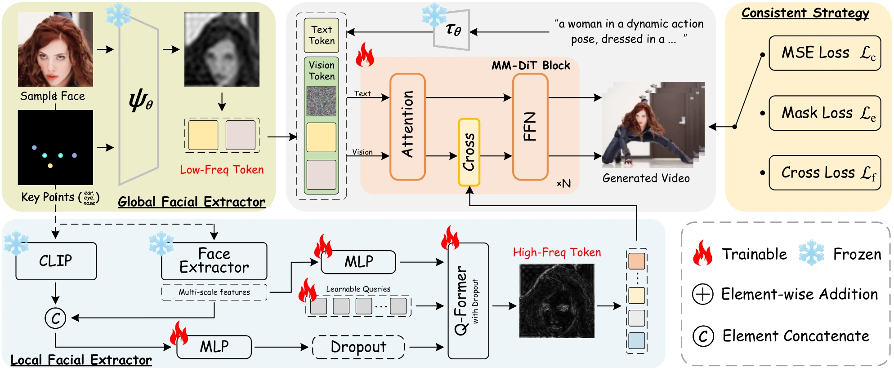
直觉与机制：低频补在最浅处，高频进每个注意力块
低频路（Global Facial Extractor, GFE）：参考图与关键点 RGB 图拼接后经 VAE 编码，与输入噪声 latent 在最浅层直接拼接——等于人为给 DiT 接一条 U-Net 式的低频旁路。高频路（Local Facial Extractor, LFE）：ArcFace #Deng et al., 2019（倒数第二层 + 浅层多尺度特征）与 CLIP 图像编码器双塔提取、Q-Former 融合，得到的内禀身份特征 $F$ 在每个注意力块内部（Attention 与 FFN 之间）做 cross-attention。注入公式为：
其中 $i$ 是注意力块编号，$Q_i^v = Z_i W_i^q$ 来自视觉 token，$K_i^f$ 与 $V_i^f$ 来自身份特征 $F$——视觉 token 主动查询身份信息，与文本 cross-attention（Q 来自视觉、K/V 来自文本）同构，因此可与文本条件共存；$W^q/W^k/W^v$ 是仅有的可训练投影，残差形式保证注入是"增强"而非"替换"。作者用七种注入位置的系统消融证明这个位置不是工程巧合：注入太浅（输入端）会梯度爆炸，注入在块外（输出端）FaceSim-Arc 只有 0.62——只有块内注入让注意力权重直接参与对高频 token 的选择，拿到 0.73。训练账本同样轻：底座 CogVideoX-5B，仅 1.8k steps × batch 80，总参数 5.2B→5.7B（+0.5B），推理只多约 2GB 显存、约 4 秒。粗到细的课程（先 GFE 后 LFE）则是为了解决两路竞争——同时训练时"GFE 和 LFE 相互竞争，模型收敛到次优点"（去掉课程 0.54，完整 0.73）。
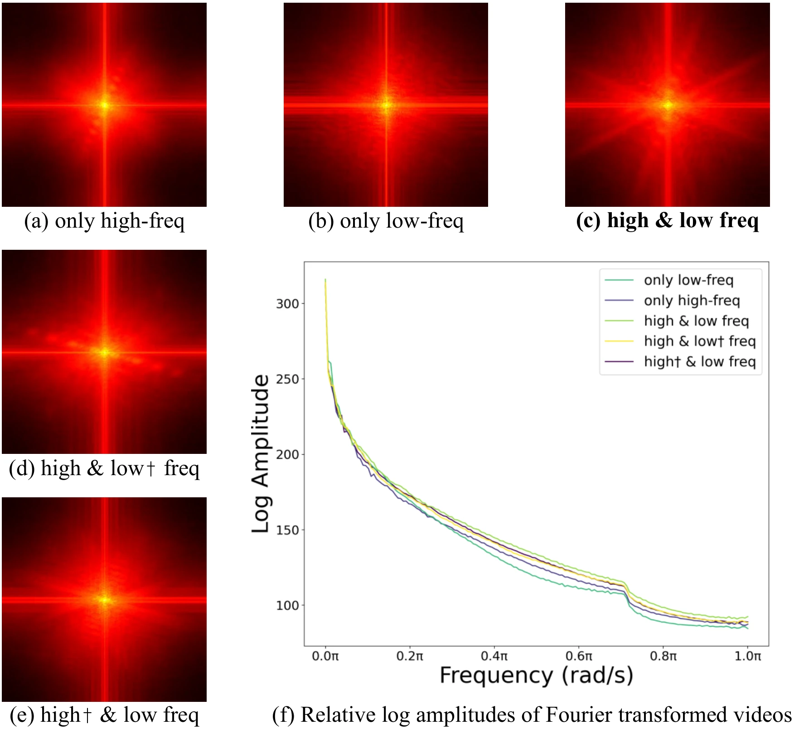
读数与陷阱：a/b 消融、协议漂移与"什么算高频"没有答案
主表读数（协议：30 身份 × 5 参考图 × 90 prompt）：FaceSim-Arc 0.58、FaceSim-Cur 0.60，对 ID-Animator 的 0.32/0.33 是翻倍级领先。但两张警示牌必须先插上。第一张是 FID 反读：ID-Animator 的 FID 117.46 反而优于 ConsisID 的 151.82——作者自己在附录交叉验证中承认"FID 与人类感知呈反向关系"，低质量模型因人脸趋同反而拿到更好的 FID，并提醒主表定量结果应谨慎解读。第二张是协议漂移：同一个 ConsisID，FaceSim-Arc 在论文的四张表上是四个数——0.73（30×2×90 注入/组件消融）、0.58（30×5×90 主表）、0.52（60×1×1 闭源对比）、0.46（30×1×45 tuning-based/I2V/细粒度消融）。同一模型、同一把尺子，子集一换读数差 0.27；任何跨表比较与"headline 数字"都必须带协议标签，这是第 3 章 P 痛点在机制论文内部的现场复现。
频率分解本身的消融（协议 30×2×90）则更有教益：
| 注入方案 | FaceSim-Arc | FaceSim-Cur | CLIPScore | FID | 读法 |
|---|---|---|---|---|---|
| a：仅高频（无低频浅层注入） | 0.05 | 0.05 | 34.86 | 269.88 | 训练不收敛——缺低频信号 |
| b：仅低频（无高频注意力注入） | 0.66 | 0.68 | 34.48 | 104.34 | 生成脸"复制参考图"，prompt 失控；FID 全场最低恰因复制 |
| c：完整（GFE+LFE） | 0.73 | 0.75 | 36.77 | 127.42 | 两路分工成立 |
三点读法。其一，方案 b 的 0.66 并不难看、FID 104.34 甚至是全场最低——但那正是复制粘贴的信号：模型把参考图誊下来了，prompt 控制随之失效。FID 最优与身份最优在这行里直接打架，再次提醒单一指标的读数方向不可信。其二，引用此表有一个复现陷阱：论文 Sec 4.4 的文字把方案 a 定义为"只注入低频"、b 定义为"只注入高频"，但表格数值与讨论（a=w/o GFE=只高频 0.05；b=w/o LFE=只低频 0.66）表明文字的 a/b 标签恰好对调——以上表格以数值加机制讨论为准。其三，也是最深的雷：ConsisID 在附录批评闭源模型 Vidu 1.5"仅保留高频特征（发色发型、脸型）而无法维持内禀身份"，但它自家架构叙事里，GFE 低频路粗阶段学的恰恰是"facial contours and proportions"（脸型轮廓与比例）。脸型在自家论文里一会儿是低频、一会儿是高频——"什么算高频"没有客观边界，频率分解是有效的工程叙事，但不是可证伪的数学定义。机制细节与逐节图解见站内 精读六十三。
5.3 路线二：数据配方——Concat-ID 的零新参拼接与被定价的跷跷板
动机：怀疑架构手术本身
ConsisID 给 DiT 焊了两个新模块；Concat-ID 反其道而行——它怀疑"架构手术"根本不必要 #Zhong et al., 2025。工作假设是：视频底座在以人为中心的海量数据上预训练后，可能已经具备身份保持能力，缺的只是用正确的数据告诉它"参考脸在这里、可以改什么、不可以改什么"。若真如此，机制应当越简单越好，复杂度应该全部转移到数据侧。
直觉与机制：latent 拼接 + 三阶段数据课程
机制一句话讲完：参考图经 VAE 编码成 latent，与视频噪声 latent 直接拼接，训练目标是纯 MSE 去噪损失——没有新模块、没有 cross-attention、没有 FR 嵌入、没有 ID loss：
其中 $Z$ 是视频噪声 latent，$c_1, \cdots, c_M$ 是 $M$ 张参考图的 VAE latent（多身份任务下 $M>1$，拼接式天然支持多人）。零新参数——架构极简主义的最极端形态。
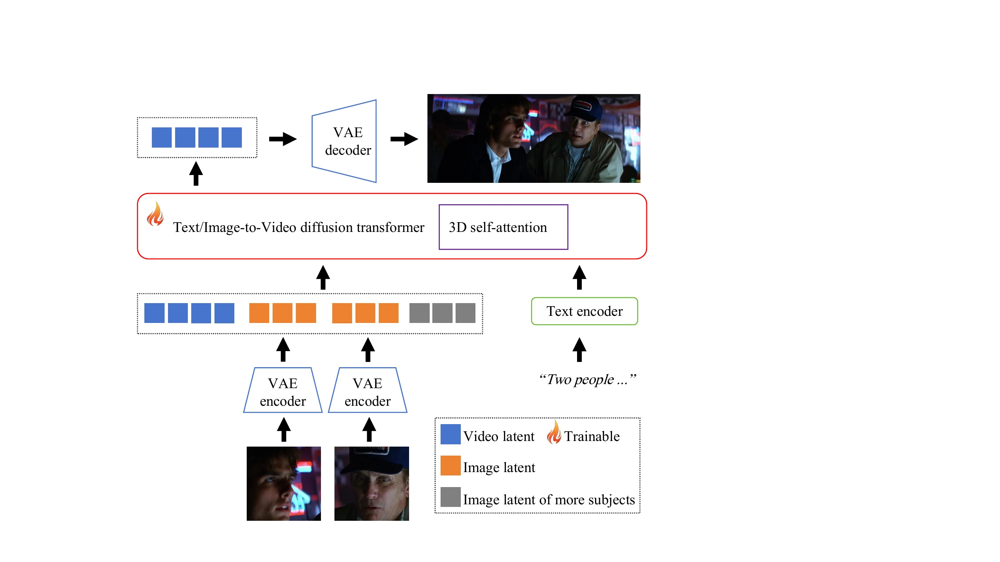
真正的机制在数据：三阶段课程依次解决"学得像→学得活→学得恰到好处"。S_pre（130 万视频，同视频帧作参考、自监督）：面部细节映射进来，但表情被参考帧复制；S_cross（80 万跨视频图-视频对，检索相似度 0.7<sim<0.9）：解开表情绑定，代价是身份下降；S_trade（16 万筛至 5 万，相似度带 0.9≤sim<0.99 叠加美学/光流/运动加权排序）：精调回折中。注意 ArcFace 在这条流水线里出现了两次——S_pre 里当质检员（clip 内超过 30% 帧相似度低于 0.5 即整条丢弃）、S_cross/S_trade 里当分档员（相似度带划分）。度量当数据清洁工：尺子有病，但整条数据流水线围着它转——这是"度量角色升级"的又一站。
读数与陷阱：视频侧跷跷板的汇率，与跨基准腰斩
三阶段消融（自建基准，协议与主表一致）把视频侧跷跷板钉在了数字上：
| 训练阶段 | ArcSim | CurSim | CLIPDist | 读法 |
|---|---|---|---|---|
| Stage I（S_pre） | 0.560 | 0.581 | 0.274 | 身份高、可编辑性低（表情复制） |
| Stage II（S_cross） | 0.185 | 0.200 | 0.434 | 身份崩、可编辑性起飞 |
| Stage III（S_trade） | 0.442 | 0.466 | 0.325 | 5 万视频精调回工作点 |
Stage I→II：身份 0.560→0.185（−0.375），换 CLIPDist 0.274→0.434（+0.160）——比图像侧 PuLID 的 0.761→0.733（−0.028 换 +6.4 CLIP-T）残酷一个量级，视频侧"身份 vs 可编辑性"的最尖锐数据点。Stage III 的操作与 PuLID 的 Stage2→3 完全对称：先推到极端，再用小规模精选数据拉回工作点——两条路线独立发明了同一种治理术，说明跷跷板在视频侧不是被消除，而是被管理。多身份侧：0.492/0.514 对 Ingredients 的 0.293/0.316 大幅领先，ViCLIP 0.190 对 0.199 是全表唯一输掉的格子；900 次两两对比的用户研究全面胜出。总成本 5,499 H800 GPU 小时（三阶段 3,260/2,104/135）——省架构不省数据。
陷阱在跨基准。Concat-ID 自报 0.442/0.466，但同一模型放到 IPVG 挑战赛的 VIP-200K 测试集（KeyID 论文报告）#Luo et al., 2026 上，Face-Arc 只剩 0.228、Face-Cur 0.242——近乎腰斩。这不是 Concat-ID 独有的丑闻，而是所有自报分数的共同处境：身份分数的绝对值完全取决于测试分布，第 3 章的跨协议结论在机制侧原文里就能复现。本章因此立一条引用纪律：任何身份分数必须带基准名，跨表比较一律禁止——包括本章自己的表格。
5.4 路线三：多专家门控——CoFE 对"单一身份信号"的否定
动机：单一信号在瞬态下天然不稳
CoFE（v1 名 MoFE）的动机是一次崩溃现场 #Wang et al., 2025。作者把上一节的人脸特写专精模型 ConsisID 拉到自建的 VIP-Test（全身、小脸、时序不稳场景）：FaceSim-Arc 仅 0.269——全场垫底，低于什么都不注入的裸 Wan2.1-I2V-1.3B #Wan et al., 2025（0.471）。诊断：单一静态身份信号（无论频率分解做得多精细）在大姿态/小脸/遮挡瞬态下天然失真——这不是注入机制的问题，而是信号源的问题（第 3 章 P3：注入的 ArcFace 信号本身在大姿态下失真，度量缺陷顺着训练信号传染给生成机制）。
直觉与机制：三个互补专家 + 逐块自适应门控
解法是信号冗余。三个专家各管一段：ArcFace 专家管细粒度身份（但姿态敏感、缺眼型等细节）、CLIP 专家管语义与风格（但肤色不稳）、DINOv2 专家管结构轮廓（但大姿态下反而模糊）——单看各有短板，门控按内容动态配平：
其中 $\mathbf{e}^i_{\text{c}}$ 是第 $i$ 个 DiT block 上三个专家精炼后特征的拼接，$\mathcal{G}$ 是可学习线性投影——门控权重由内容本身决定：不同姿态、不同深度的 block 自动得到不同的专家配比，这就是"动态融合"的数学本体。融合特征 $\mathbf{f}^i_{\text{fused}} = \mathbf{w}^i \cdot \mathbf{e}^i_{\text{c}}$ 作为第三路 cross-attention 注入（与 context 流、image 流输出相加），只注入偶数层 DiT block，参数增量 +18.5%。
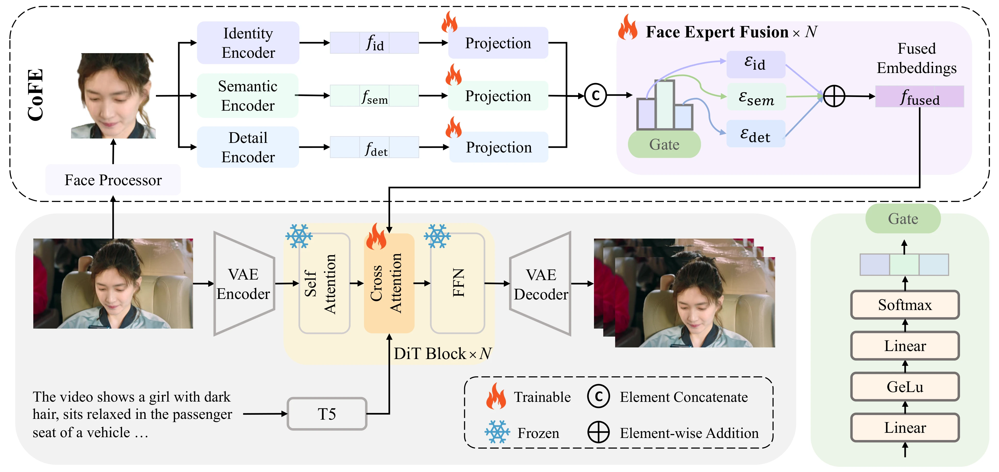
数据侧配套 LaFID-180K（18 万 clip，2–6 秒，720P–1080P，派生自 OpenHumanVid 加自有高质量视频），过滤阈值全部公开：人脸框占比 ≥10%、clip 内平均身份相似度 >0.6、单人脸（无脸/多脸帧剔除）、1/3 帧采样。防复制粘贴的机制同族但更直接：对帧数超出训练窗口的 clip，把非训练帧的人脸特征并入输入——防止模型学会直接抄训练帧，训练与推理分布对齐的 trick。训练：Adam 1e-5、4,000 iterations、batch 256——量级远小于 Concat-ID 的数据工程。
读数与陷阱：崩溃链、裁判参赛与单主体
VIP-Test 上的崩溃链本身就是论文最好的广告：ConsisID 0.269 → 裸 Wan2.1 0.471 → Wan2.1+CoFE 0.502 → Wan2.2 0.541 → Wan2.2+CoFE 0.605。在自己的人脸特写基准（LaFID-Bench）上：Wan2.1 0.654→0.770（+0.116）、Wan2.2 0.776→0.814（+0.038），1.3B 底座加 CoFE 后身份分已追到接近裸 5B 底座（0.770 对 0.776）——"以小搏大"。消融把门控的价值拆干净：三个单专家各有提升但各有短板（ArcFace 专家单独加，FID 反而恶化到 80.305，比不加还差）；朴素拼接三特征 0.732，门控再到 0.770——多源信息本身价值 +0.078，自适应门控另有 +0.038。这条消融链是对路线一的反驳证据：问题从来不只是"频率分解够不够细"，而是"信号源够不够稳"。
三处陷阱。其一，裁判参赛：ArcFace 既是三专家之一（信号源）又是主考官（FaceSim-Arc）。缓解因素是双尺子评测（Arc/Cur 并报）与 DINOv2/CLIP 分担信号，但循环性只被稀释、未被消除——这与 KeyID、Identity-GRPO 的明面循环形成谱系对照。其二，单主体限制：数据管线剔除了所有多脸帧，开源代码注释明确提示多身份训练会互相干扰——"通用身份注入"的叙事目前只在单主体上兑现，多身份视频（数字人产品的常态）仍是空白。其三，+18.5% 参数对"轻量插件"叙事是一笔真实的税——三专家冗余不是免费的。逐节机制图解见站内 精读六十四。
5.5 路线四：免训练编排——KeyID 的流水线与写在流程图里的循环
动机：训练太贵，那就一个模型都不训
前三条路线全要训练：ConsisID +0.5B 参数、CoFE +18.5%、Concat-ID 5,499 GPU 小时。第四条路线的逻辑是釜底抽薪——若身份保持可以完全用现成模型编排出来，训练成本归零，每个环节可独立替换升级。代表作品 KeyID 是 IPVG 2026 挑战赛 Track 2 亚军 #Luo et al., 2026，它同时给出了这条路线最锋利的机制证据与最直白的循环性。
直觉与机制：RAVG 起草 + IPKE 修帧 + LTX-2 插值
核心直觉是时序分离：生成阶段完全不注入身份（草稿的全部容量给 prompt 遵循与时序一致性），身份阶段完全不生成（专用换脸模型只管把关键帧的脸换对）——用流程分离替代 PuLID 的目标分离与 Concat-ID 的数据分离，三种"分离轴"殊途同归。三段流水线：其一 RAVG 起草：GPT-5.4 识别主体并增强 prompt → ERNIE-Image-Turbo 生成首帧 → Qwen-Image-Edit 注入非人物体 → Wan2.2 + Prompt Relay（推理时时间路由，把每个时间段路由到对应动作描述）生成 81 帧身份无关草稿；其二 IPKE 关键帧编辑：K=5 个名义关键帧、搜索窗半径 w=8，窗内每帧先 FaceSwap 再打分，选 ArcFace 相似度最高者：
其中 $W_i = [k_i - w, k_i + w] \cap [1, N]$ 是搜索窗，$I_{ref}$ 是参考人脸，$s_j$ 是换脸后候选帧与参考的 ArcFace 相似度；选定后按 $t_i = \frac{M}{N} k_i$ 线性映射到输出时间轴；其三 LTX-2.3 运动插值：5 张身份修正后的关键帧一次前向，运动补偿插值出 121 帧成片。
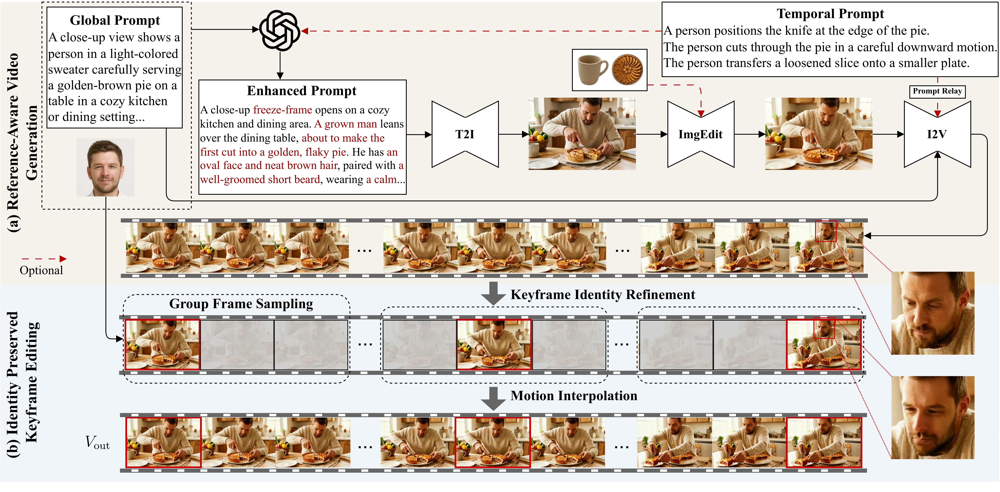
读数与陷阱：0.633 的两面
VIP-200K 上的读数：Face-Cur 0.633、Face-Arc 0.630、CLIPScore 30.9，对最强基线 TPIGE（0.492/0.473）提升 +28.7%/+33.2%；同一张表上 Concat-ID 只有 0.242/0.228——上一节的跨基准腰斩在这里成为对照组。消融（子集）给出两个机制证据：团队前作多分支基线 #Xu et al., 2025 0.279/0.260 → 只加 IPKE 0.596/0.594（+0.317/+0.334，即插即用的身份增益）→ 加 RAVG 0.636/0.643；而 T2V 草稿 + IPKE 只有 0.410——草稿质量决定身份修正上限，首帧锚定的价值被定量钉死。更有趣的是稀疏对稠密：关键帧级修正（0.636）胜过稠密视频级身份迁移 DreamID-V（0.503）——"生成容量与身份容量冲突"假设的直接验证，也解释了为什么编排路线敢只修 5 帧。IPVG 2026 Track 2 总分 1.81、排名第二（冠军 USTC-CMI 1.25，分数越低越好，总分含客观指标加人工评价）。
陷阱分三层。第一层，循环性最高：IPKE 用 ArcFace 选帧，评测用 Face-Arc/Face-Cur 打分——选帧器直接对着考卷选题，构造性偏置写进了流程图（第 3 章 3.5.3 节已立案）。IPVG 客观分里的身份项本身就是 ArcFace 家族，挑战赛制度在奖励这种对齐；0.633 里有多少是"真的更保身份"、多少是"更懂考官"，从论文内部无法分离。缓解因素：CLIPScore 与人工评价是独立信号。第二层，非关键帧身份无保证：121 帧里只有 5 帧被显式身份编辑，其余约 116 帧完全靠 LTX-2 插值"传播"，论文未报告插值段的逐帧身份方差——本路线声称要对付的时序漂移，恰恰只发生在不被度量的帧上（本条为 survey 的推断性批评）。第三层，六个上游依赖：GPT-5.4（商业 API）、ERNIE、Qwen-Image-Edit、Wan2.2、LTX-2.3、insightface——任何一环退化直接传导，商业 API 依赖伤可复现性。但必须说句公道话：这条路线对度量批判的独特贡献，恰是把循环性摆到了明面上——当一条流水线可以完全围绕一把尺子组装，尺子的病就不再是评测问题，而是系统设计问题。
5.6 路线五：强化学习——Identity-GRPO 把度量写成奖励
动机：身份信号太稀疏，SFT 的梯度指不过去
第五条路线的出发点是监督形态。编排路线（上一节）用"完全不训练"绕开了成本，却把身份保障限制在 5 个关键帧上——116 帧的不设防地带说明它只是把问题移出了视野，没有解决。要真正逐帧保身份，还是得回到训练侧，但换掉监督形态：SFT 用逐 token 的去噪 MSE，身份只占每帧画面的一小块——梯度里"这帧脸不对"的信号被大片"背景对了"稀释。RL 不需要稠密监督：只要有一个能给整段视频打分的奖励模型，策略梯度就能把"更像参考人"变成可优化的方向。Identity-GRPO 是这条路线的代表作 #Meng et al., 2025，它的特殊之处在于：动手训练之前，先做了一次度量审计。
直觉与机制：先修尺子，再当尺子
裁判资格考试：在 500 个人类标注的偏好对上测各候选奖励模型的预测准确率——ArcFace 仅 0.772，低于论文自设的 0.8 可用性门槛，结论明确："与人类感知对齐差，不适合当奖励信号"；未微调的 VLM 全军覆没（Qwen2.5-VL-3B 0.430、72B 0.657、InternVL3.5-38B 0.685）。解法是自训：Qwen2.5-VL-3B + LoRA（vision encoder 也参与优化以捕捉身份细粒度），用带平局出口的 BTT 偏好模型（平局概率由 $\theta=5$ 控制）在 1.5 万偏好对（1 万自动 + 5 千人工）上训练，配合从自动数据到人工数据的平滑采样调度，测得 0.890。
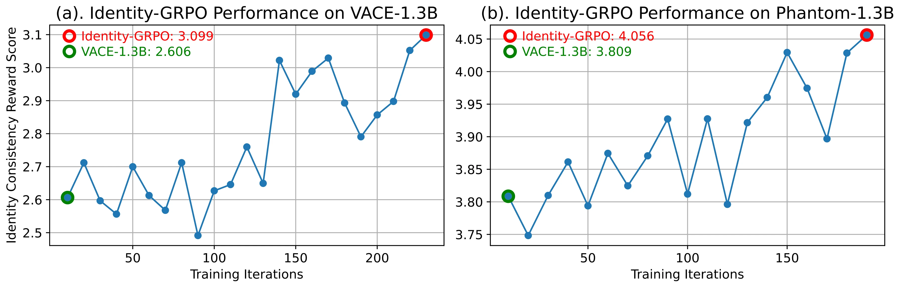
然后是 GRPO 本体：组内相对优势，无 critic。同一 prompt 采样一组 $G$ 个视频，奖励做组内 z 分数标准化后作为优势：
其中 $r_i$ 是自训奖励模型给第 $i$ 个视频的分数——基线由同组样本免费提供，策略只学"这组里哪个更好"，省掉了 critic 网络。策略更新用 PPO-clip，$\varepsilon = 10^{-3}$（极小，策略步长被严格约束）。规模换分辨率：16 组 × G=8 = 128 视频/次更新，代价是训练视频降到 33 帧、416×240。数据侧还有一个抗作弊设计：用 Flux.1 Kontext 为每个主体合成多视角参考图（产出率 >80%），强制模型学"与单一姿态无关的鲁棒身份表示"——数据层面对抗复制粘贴。
读数与陷阱：+18.9% 的另一面
收益侧：VACE-1.3B 的 ID-Consistency 2.606→3.099（+18.9%），用户研究胜率 24%→76%；Phantom 3.809→4.056（+6.5%），37%→63%。GRPO 对 SFT 双赢（ArcFace 相似度 0.298 对 0.261）。质量侧（Aesthetics/GmeScore，OpenS2V 协议）保持不崩——RL 没有牺牲自然度换身份，这是与"ID loss 换面部模糊"的关键区别。
但这一节的陷阱，作者自己承认了一半，我们必须补完另一半。第一，出题人=改卷人：ID-Consistency 指标就是自训 RM 的分数——评测与优化目标同源，+18.9% 的第一读数是"模型更会讨好自己的奖励模型"；用户研究是唯一独立信号（且对比协议由作者自选）。第二，分辨率 gap：训练 416×240，奖励模型输入 832×480——RM 在比训练样本高清一倍的视频上打分，gap 未被讨论。第三，reward hacking 未被检验：论文没有展示失败案例（可视化只放成功对比），Goodhart 的全部重量压在自训 RM 的 0.890 上——而 0.890 又是用 500 样本偏好测试集测出的。值得记录的是论文对 ArcFace 的立场："不适合当奖励，但可当参考指标"——同一篇论文里 ArcFace 相似度绝对值只有 0.235–0.298（低清多主体场景），侧面印证第 3 章的脆弱性诊断。这种"先审计、再分工"的姿态，是五条路线里对度量批判最自觉的一次回应——尽管它换来的是一个更完美的循环。
5.7 收束：五条路线的接力，与度量的加冕式
把五条路线放回接力赛道，演进逻辑清晰可见：ConsisID 给诊断——DiT 缺什么频率就补什么，但"什么算高频"自相矛盾（脸型在自家叙事里换了频段）；Concat-ID 给反证——架构可以零新参、能力可能本就在，复杂度全部转移到数据，代价是跷跷板以 0.560→0.185 的汇率显形；CoFE 给冗余——单一信号在瞬态下失真，三专家门控分摊风险，代价是参数税与被稀释的裁判参赛；KeyID 给编排——训练归零、组件可换、稀疏胜稠密，代价是循环性最大化与 116 帧的不设防地带；Identity-GRPO 给闭环——度量不够格就自训一个，代价是出题人与改卷人合体。每一代都真实修掉上一代最痛的缺口，没有一条是失败的工程；问题全部出在记账与循环上。
| 路线 | 代表工作 | 核心贡献 | 最尖锐的代价 | 度量在本路线的角色 |
|---|---|---|---|---|
| 频率分解 | ConsisID | DiT 频率诊断与对位补丁 | 特写之外崩溃（VIP-Test 0.269）；频率边界叙事化 | 记账员（FaceSim 报分数） |
| 数据配方 | Concat-ID | 零新参反证：能力在数据里 | 跷跷板 0.560→0.185；自报分跨基准腰斩 | 数据清洁工 + 记账员 |
| 多专家门控 | CoFE | 信号源冗余与动态配平 | +18.5% 参数；单主体限制 | 信号源 + 考官（循环被稀释） |
| 免训练编排 | KeyID | 训练归零、稀疏关键帧胜稠密 | 116/121 帧无逐帧保证；六上游依赖 | 选帧器 + 考官（明面循环） |
| 强化学习 | Identity-GRPO | 先审计度量、再相对优势优化 | 出题=改卷；416×240/832×480 gap | 奖励（自训替代 ArcFace） |
这张表刻意没有列"实时性/推理开销"——因为披露状况本身就是一个发现：五条路线里只有 ConsisID 给出了增量推理成本（约 2GB 显存、约 4 秒）#Yuan et al., 2024，CoFE 可从参数税间接推算（+18.5% 参数）#Wang et al., 2025，Concat-ID 只披露训练账本（5,499 H800 GPU 小时）#Zhong et al., 2025，KeyID 与 Identity-GRPO 的每视频推理开销原文未披露。视频侧的推理成本报告纪律整体落后于图像侧（PhotoMaker 当年还专门对比过 10 秒 vs DreamBooth 1284 秒）——对于以"实时数字人"为落地目标的领域，这是评测协议上的一块显性空白，应当与第 8 章 OQ3 的协议标准化议程一并纳入。
于是本章的核心观察可以一句话说尽：时序维的新敌人没有催生新的度量，反而催生了度量的加冕式。第 3 章 3.5 节提出"度量的三重角色"（loss / 奖励 / 选帧器）时还是三个孤立案例；本章把它们连成了演进轨迹——图像侧度量最多写进损失（PuLID 换来面部模糊），视频侧它一路升格：ConsisID 让它记账，Concat-ID 让它清洗数据，CoFE 让它当信号源兼考官，KeyID 把它写进选帧器，Identity-GRPO 把（自训的）它写进奖励。度量从"观察机制的工具"彻底变成"机制的组成部分"——而当度量有病（P1–P5），被优化的就不再是身份，而是度量的偏见本身。KeyID 的 0.633 与 Identity-GRPO 的 +18.9% 都必须在这个背景下阅读；这正是 Goodhart 定律的机制侧形态，也是第 8 章 OQ4（评测循环性与 reward hacking 的系统防治）的全部动机。五条路线的身份信号最终也都汇回 FR embedding 家族——而第 2 章已经看到，这个家族的信息容量本身就是天花板 #Paraperas-Papantoniou et al., 2024。
也要给机制侧留一句公道话：五条路线对"身份如何在时间轴上存活"给出了越来越诚实的答案——架构补丁、数据配方、信号冗余、流程分离、目标函数，每一代都更清楚地在为跷跷板与循环性付出明码标价的代价。工程没有失败；失败的是社区始终让带病的尺子坐在考场里，而且越坐越靠前。
但在离开机制侧之前，还有一个更根本的问题没有触及：以上全部讨论默认"身份"有公认定义——参考图里那张照片级的脸。当生成域离开照片级人像、进入风格化与动漫，"同一张脸"这个定义本身开始动摇：漫画角色的身份是什么？此时连"身份保持"这四个字都需要重新立法。第 6 章进入风格化域，看 StyleID #Yun et al., 2026、ID-Sim #Chae et al., 2026 与 ID-V2V #Xu et al., 2026 如何在身份定义的边界之战中给出新度量。本章五篇论文的机制细节与数字出处，以及数字人方向的系列文章，可从数字人枢纽页继续导航。
第 3 章已经把 P1（动漫/风格化角色失效）与 P5（风格化后身份保留无法度量）的证据钉在墙上：风格化人像的 Cross-Method split 上，ArcFace 的判定准确率恰好停在 0.5000 的随机线上 #Yun et al., 2026。但钉上墙的只是"旧尺子不行"这个事实。本章要问的是更根本的问题：跨出照片域之后，"身份"这个词还指什么？如果身份的定义在风格化域本身就是悬空的，那么任何度量——旧的或新的——都只是给一个未定义的量分配数字。2026 年的三篇工作从三个方向回应了这个挑战：StyleID 换真值（用人类判断校准度量）#Yun et al., 2026、ID-Sim 换定义（把"理想度量"公理化）#Chae et al., 2026、ID-V2V 换问题（把任务窄化为重光照）#Xu et al., 2026。三条路线各答了一角、也各避了一角——本章逐一拆解，最后拼出一张"谁答了什么、谁回避了什么"的地图。
6.1 边界问题：跨出照片域，"身份"还剩什么
照片域身份观：FR embedding 的判别几何
照片域里"身份"有明确的技术含义：它是 FR 模型在标注身份的海量人像上学到的判别几何——五官的度量结构、皮肤纹理、轮廓曲率这些跨视角、跨表情稳定出现的线索 #Deng et al., 2019。第 2 章借 Arc2Face 论证过这个表示的信息充分性：ArcFace embedding 里含足够重建一张人脸的信息 #Paraperas-Papantoniou et al., 2024。但请注意该论证的边界——它只保证照片域流形上的信息充分。风格化操作恰恰系统性地改写或销毁照片域线索：动漫化改写几何（夸张的大眼睛、尖下巴），水彩与油画化销毁纹理，光照重构改写全部像素统计量。身份的"载体"在风格化域被换掉了，建立在原载体上的判别几何自然失义——这是 P1/P5 的机理层（第 3 章 3.1.3），此处不再重复数值，只追问：那风格化域里，身份的载体是什么？
卡通域身份观：iCartoonFace 与符号化特征
FR 社区其实早就正面回答过这个问题。iCartoonFace（2019）给出了卡通人脸识别的专门基准 #Zheng et al., 2019：卡通角色没有皮肤纹理这类照片域判别线索，其身份可判别性建立在轮廓、发型、瞳色与配色这类符号化整体特征上。卡通域的"身份"与照片域的"身份"共享"同一性"这个词，却建立在不同的线索集合上——iCartoonFace 的存在本身说明 FR 社区清楚"非真人域的身份判别是独立问题，需要专门数据与专门训练"；而生成评测社区对这条知识线的引用是零（第 3 章的知识断层证据）。于是 P1 出现了一个比"度量失效"更深的形式：当参考端是动漫角色时，用户需要的判别线索（轮廓/配色）与照片域 FR 提供的线索（纹理/度量结构）根本不是同一组东西——这不是尺子不准，是拿错了类别的尺子。
三种身份观，三条路线
把视野放宽，本章的三条路线其实对应三种互相竞争的身份观：
三种身份观——本章的分析框架
线索观（appearance cues）：身份 = 一组可判别的外观线索。照片域版本（纹理 + 度量结构）由 FR embedding 承载；卡通域版本（轮廓 + 配色）由 iCartoonFace 类基准承载。风格化域的困难：线索集合随风格漂移。
判定观（human judgment）：身份 = 人类"是否同一人"的判定。度量不必复制人类使用的线索，只需对齐人类的判定结果——StyleID 的立场。
不变量观（invariants）：身份 = 特定变换群下的不变量。ID-V2V 把合法变换群收缩为重光照，面部结构与表演是不变量。
系列十三其实已经站在判定观的门口：THEval（CVPR 2025）用成对比较与一致性统计证明，在非真实感场景中传统指标与人类偏好不显著相关（见 数字人卡通与风格化评测）。彼时的结论是"旧尺子与人的判断脱节"；本章的三条 2026 年路线，可以看作对这个遗留问题的三种深度的回答——换真值、换定义、换问题。
6.2 路线一：感知对齐——StyleID 让人类判断成为监督信号
Motivation：失效的不是参数，是真值缺位
StyleID（KAIST VML，SIGGRAPH 2026）面对的困境 #Yun et al., 2026（精读见 StyleID 精读页）：要说 ArcFace 在风格化域失效，凭什么？你必须先有一个"正确答案"才能宣判尺子错了。而"风格化之后还是不是本人"这个真值，照片域 FR 给不了——它自己就是被告；感知编码器也给不了——SigLIP2 在最简单的 Cross-ID split 上 TPR 就只有 0.1736 #Yun et al., 2026。唯一没被证伪的裁判是人类。路线一的全部设计，就是把人类判断从"最终验收"升格为"训练监督"。
Intuition：把心理测量当数据工厂
先造受控数据：三个风格化引擎（IP-Adapter-faceID、InstantID、InfiniteYou）× 10 种艺术风格 × 7 个强度级，对 FFHQ 源图批量生成风格化配对——强度归一化到 $s\in[0,1]$，但作者明确警告机制不同则同一数值不等价感知强度，跨方法不可直接比 #Yun et al., 2026。再造真值，分两层：
StyleBench-H（评测层，人类判断基准）：70 名被试做 same/different 判定（68 人通过质控），双过滤器剔除敷衍数据——延迟过滤（快于图片加载或超 100 秒的作答丢弃）与一致性甄别（末两题完全相同、答不一致者全部数据剔除）。6088 份有效响应最终筛出 3551 个平衡数据点，切成 Cross-ID / Cross-Style / Cross-Method 三个泛化层级的 split，其中 Cross-Method 由额外的 28 名被试标注 #Yun et al., 2026。被试还被明确告知第二张图是风格化渲染，以抑制"风格不匹配"的表面判断——这套心理测量纪律，本身就是对"拿 FR 或 LLM 随手打分"的方法论批评。
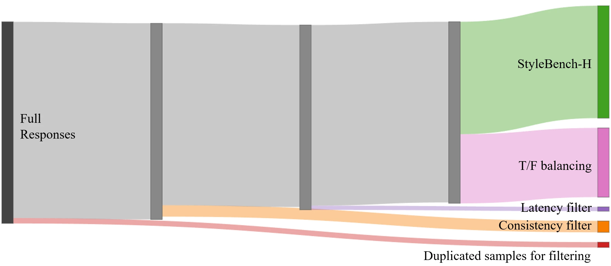
StyleBench-S（训练层，合成监督）：直接人工标注 22 万对不现实，StyleID 的解法是用心理测量曲线放大。对每个（方法 × 风格）组合做 2AFC 实验（源图 + 2 张风格化选项，1 真 1 干扰项），拟合"识别率-强度"曲线；以90% 识别率阈值筛选人类大概率判 same 的强度级，且只保留最高与次高级——因为 2AFC 中被试可以靠性别这类粗语义线索在低识别率下仍答对二选一，阈值放宽到 70% 会出现明显身份劣化。由此得到 4073 个身份 × 55 张 ≈ 224k 的训练样本，即"约 22 万（224k）"对 #Yun et al., 2026。
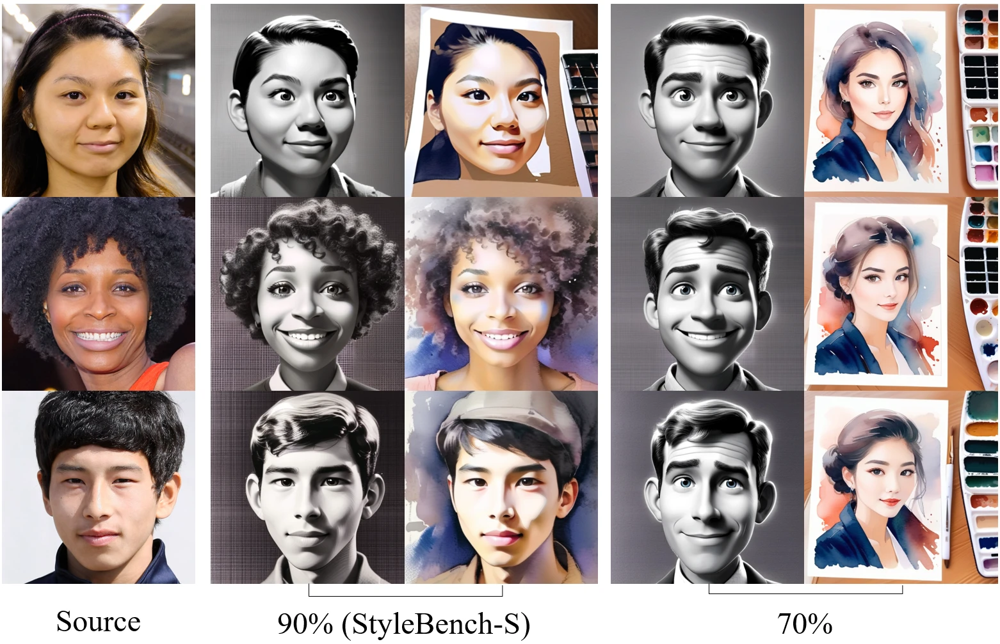
Mechanism：CLIP-L + LoRA + 三损失
度量模型的选型逻辑直白：不用 FR 骨干（IResNet 依赖被艺术渲染破坏的照片域线索），而用见过开放词表外观多样性的 CLIP-L vision encoder，主干冻结、LoRA（rank 8）轻量适配。训练目标是三个损失的互补组合：
其中 $\mathcal{L}_{\text{ang}}$ 是 ArcFace 式角度间隔损失（间隔 $m=0.5$、缩放 $\alpha=32$）管类级判别边界；$\mathcal{L}_{\text{scon}}$ 是监督对比损失，同一身份的不同风格样本互为正对——跨风格不变性直接编码进成对几何；$\mathcal{L}_{\text{reg}}$ 把适配后的 embedding 拴在冻结 CLIP 表征附近，防灾难漂移 #Yun et al., 2026。训练经济性值得记账：单卡 A6000、30,000 迭代、batch 112（56 身份 × 2 样本，保证对比损失每个锚点至少一个正样本）——对照 Stylized-Face 的百万级数据清洗管线 #Peng et al., 2025，这是"感知校准优先于数据规模"的路线声明。
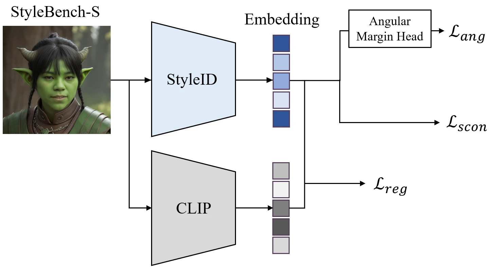
读数：低误报工作点、手绘 OOD 与 Acc@0.4 陷阱
第 3 章已经给出 TPR@FPR=1e-2 的三 split 主表，这里换两个更苛刻的切面。其一是低误报工作点——质检场景要求几乎不冤枉好人：
| 方法 | TPR@FPR=1e-3 | TPR@FPR=1e-4 | SKSF-A（艺术家手绘）TPR | SKSF-A AUROC |
|---|---|---|---|---|
| ArcFace | 0.7052 | 0.6533 | 0.6189 | 0.9360 |
| AdaFace | 0.7181 | 0.7181 | 0.6993 | 0.9582 |
| SigLIP2 | 0.0614 | 0.0360 | 0.1588 | 0.8563 |
| Stylized-Face | — | — | 0.4840 | 0.9163 |
| StyleID | 0.8484 | 0.8320 | 0.8891 | 0.9922 |
两个读数值得停顿。第一，SKSF-A 是艺术家手绘数据集——几何夸张正是照片域编码器的死穴，StyleID 在这里拉开最大差距（TPR 0.8891 vs ArcFace 0.6189），说明学到的确实不是纹理捷径 #Yun et al., 2026。第二，backbone 替换实验给出选型证据：把 ArcFace/AdaFace 在 StyleBench-S 上微调（保守或全参数）最好也只到 0.8489 TPR，SigLIP2 微调到 0.8726，而 CLIP-L 版 StyleID 0.9020——语义基座的容量与多样性是风格鲁棒性的必要条件，感知数据微调是激活它的充分条件 #Yun et al., 2026。连"百万级数据但无感知校准"的 Stylized-Face 路线，Cross-Method 也只有 0.5030——数据规模换不来 OOD 泛化 #Peng et al., 2025。
路线一答了什么、回避了什么
答了：P5 的主体——"风格化真人 ↔ 照片"的跨域身份判定有了人类校准的度量与基准，且证明了可行性不需要天文预算（单卡、224k 合成监督）。下游可用性也有交代：轻量变体 small/tiny 压缩 4×/20× GFLOPs 仍全面超过 FR baseline；替换 JoJoGAN 的身份损失后用户研究 Id 分 0.903 vs 0.097；素描查询检索 0.7044 对最强 baseline CLIP 0.6519 的 +5.3 点提升说明跨"照片↔素描"域的检索能力——但注意最强 baseline 不是 ArcFace（它只有 0.5051），精确读法就是 +5.3 点，不是论文摘要式的"大幅领先" #Yun et al., 2026。回避了：其一，纯卡通域——StyleID 的训练数据是"风格化的真人"，参考端就是动漫角色的 P1 场景（iCartoonFace 式符号化身份）并未触及，作者自己把混合人类-合成监督列为 future work；其二，照片域不接管——LFW 上 StyleID TPR 0.9526 仍低于 ArcFace 0.9970，它是域特化的尺，不是通用替代品；其三，作者自认人口偏斜（FFHQ 偏年轻白人）、合成监督的边界、不含极端姿态与遮挡 #Yun et al., 2026。感知对齐的极限也如实可见：Flux.1 Kontext 新风格 pilot 上与人类偏好一致率 0.707、Cohen's κ=0.392——有意义的一致，离完美很远。
6.3 路线二：selective sensitivity——ID-Sim 把度量性质写成公理
Motivation：三类度量各有系统性失职
StyleID 的立场是"以人类判断为真值"；ID-Sim（MIT CSAIL + Adobe Research，CVPR 2026）的立场更进一步：先把"什么叫好的身份度量"写成性质，再训练满足它的度量 #Chae et al., 2026（精读见 ID-Sim 精读页）。它对现有度量家族的批评不是逐个测分，而是按优化目标归类失职：感知类（LPIPS/DreamSim 谱系）对齐整体外观，会被环境变化带偏；对比学习类（CLIP 系）把细粒度差异压缩成高层语义相似；ReID 类（ArcFace/CosFace/FaceNet 谱系在此列）优化的是判别边界而非感知对齐，且高度域特化 #Chae et al., 2026。注意这个批评的结构：它说的正是第 1–3 章的主线——CSIM 是判别器，不是感知度量。
Intuition：属性化定义 + 生成编辑当受控变量
ID-Sim 的定义是属性化的：visual identity = 一个物体的固有视觉属性集合（形状、纹理、颜色）；instance = 共享同一 visual identity 的物体。判定边界两侧都有讲究——同一批次、视觉不可分的两把螺丝刀算"同一实例"（对制造质检合理），小猫长成大猫、椅子重新刷漆算"不同实例"（显著变化即改身份）。在此定义上，理想度量满足 selective sensitivity：对环境变化（光照、背景、视角、姿态）不变，对身份修改敏感。第 3 章已经给过它的形式化，这里补上训练侧的关键洞察：生成式编辑提供了受控变量。想让度量学会"换背景不算换身份"，就需要大量"同一物体、只换了背景"的配对——真实数据凑不齐（论文断言没有任何现有数据集同时提供上下文多样性、身份多样性、域多样性三种信号），但 Qwen-Image-Edit 只换白底背景、前景不动的编辑可以无限制造 #Chae et al., 2026。环境不变性由此从"祈祷模型自己学会"变成"显式训练目标"。
Mechanism：双头投影 + InfoNCE + Sinkhorn OT
架构极简：冻结的 DINOv3 ViT-L/16（448×448 输入）+ LoRA（rank 16）+ 双头 MLP 投影——CLS 头出全局表征、patch 头出局部描述符，联合目标
两个头各配一种相似度。CLS 头用标准 InfoNCE（温度缩放余弦）。patch 头的相似度不逐位置比较——两图的实例空间布局常因视角错位，逐位置直接比较不可靠——而是把两图的 patch tokens 当作无序的局部描述符集合，用熵正则最优传输做软对齐：
其中 $\mathcal{S}_\varepsilon$ 为 Sinkhorn 距离。推理时度量就是一次前馈：
CLS 表示做全局相似度，patch 表示可下探到分割级下游——这个设计后面还有回报。训练数据是 10k 三元组（30k 图、约 10k 实例、10 个数据集），按 S1/S2a/S2b 三类 1:1:1 均分：S1 是策展后的真实实例对；S2a 是生成式上下文编辑（只换背景/光照）作正样本；S2b 是生成式身份修改（FLUX.1-Fill 以类别级 prompt 重绘前景——保类别语义、改细粒度外观）作硬负样本，硬负样本另用 DINOv3 嵌入最近邻挖掘补强。还有一处防捷径的宝藏细节：三元组里掺了身份编辑负样本时，给 anchor 与 positive 加 strength 0.1 的轻度生成噪声——防止模型靠"生成伪影"而非"身份差异"识别负样本 #Chae et al., 2026。
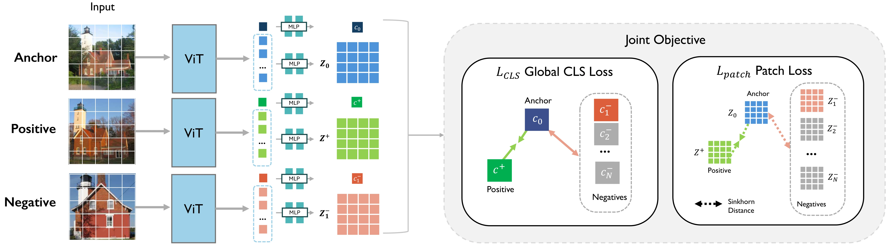
验证：五级台阶、49 setups 48 胜与一次诚实的失手
数据配方的每一级增益都可回溯——这张台阶表本身就是"环境不变性可以显式训练"的实验证明：
| 数据配方（逐步累加） | 验证 ROC AUC |
|---|---|
| 全量候选数据集，未平衡 | 0.693 |
| + 跨数据集平衡采样 | 0.752 |
| + 实例粒度过滤（剔除标签噪声与上下文不足的数据集） | 0.890 |
| + 上下文编辑正样本 S2a（1:1 掺入） | 0.937 |
| + 身份编辑硬负样本 S2b（1:1:1） | 0.965 |
规模也不是越大越好：30k triplets 时 Identity Validation 掉到 0.91——数据质量对数量的胜利，10k 是稳定工作点 #Chae et al., 2026。外部验证是本章最重的数字：7 个评测集、49 个评测 setup 上 48 胜——但比"刷榜"更重要的是其元评测方法论：用 MVImgNet 的 100 个 held-out 实例构造 identity × background × viewpoint × lighting 联合编辑网格，逐实例拟合线性回归 $\mathrm{sim}_i=\beta_0+\beta_1\,\Delta_{\text{factor}}+\beta_2\,\Delta_{\text{id}}+\varepsilon$，以斜率读出度量对四个变化轴的敏感度，1000 次 bootstrap 给 95% 置信区间——度量本身被当作被测对象 #Chae et al., 2026。
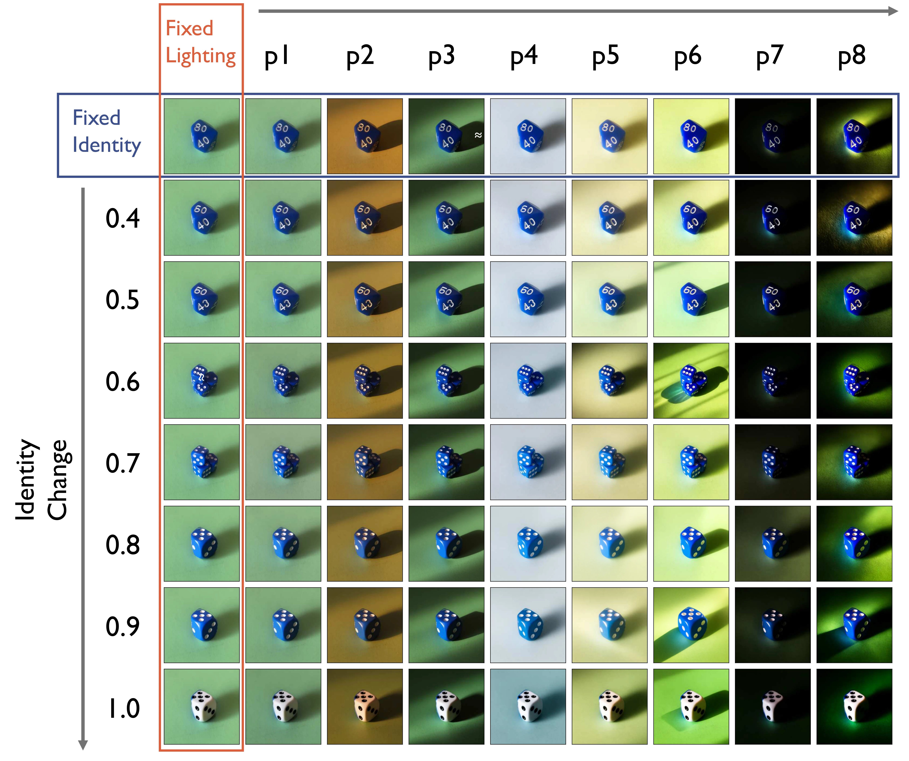
三处必须如实呈现。其一，光照鲁棒性略弱于 DINOv3——作者原话是"为保留身份相关的细粒度颜色线索而做的 tradeoff"：颜色既是光照的受害者也是身份的载体，全不变会连身份一起抹平。ID-Sim 的鲁棒是"背景/视角强、光照中等"的选择性鲁棒 #Chae et al., 2026。其二，48 胜不是全胜：DreamBench++ 的 Spearman 相关上，目标同为人类感知对齐的 DreamSim（0.716）仍高于 ID-Sim（0.6856）。其三，工程可得性有个易错点：HF 开源 checkpoint 是 ViT-B/16 变体，论文主配置是 DINOv3 ViT-L/16@448——复现论文数字需自训 ViT-L 版 #Chae et al., 2026。另有一处文档级出入顺带记账：光照敏感度实验的光照 prompt 数量，正文写 9 组、附录实列 8 条，数量表述有轻微出入（本节按"多组光照 prompt"处理）。
路线二答了什么、回避了什么
答了：身份度量应该满足什么性质这个问题第一次有了可训练的公理化表述（selective sensitivity），且配了受控变量的制造方法（生成编辑）与元评测协议（敏感度回归 + bootstrap）。顺带的惊喜是 patch 头的下游能力：DeepFashion2 实例检索 mAP 从 0.4765（仅 CLS 监督）提到 0.7967（加 patch 监督），PerSAM 个性化分割 mAP 提到近 3 倍——度量模型的局部特征可以直接反哺密集任务 #Chae et al., 2026。对照 MLLM 评分的脆弱性（GPT-4o 在 DreamBench++ 上 Spearman 0.748，受控 prompt + 换代裁判的读数掉到 0.3554 量级——注意源表此行同时更换了裁判模型与 prompt 协议，两因素混叠，降幅不能全归因于 prompt 收紧），一个稳定、便宜、前馈式的身份度量的工程价值是实在的。回避了：人脸与风格化域本身——ID-Sim 的评测域是通用物体（艺术品、地标、宠物、时尚、航拍牛），它没有也没有必要在风格化人像上与 StyleID 对表；更根本地，属性化定义只覆盖"一致的视觉身份"，发型变化、配饰、风格化这类"需要用户指定不变性"的广义身份被明确留在定义之外——对 P1/P5 而言，它给的是定义的语法，不是风格化域的答案 #Chae et al., 2026。
6.4 路线三：窄化问题——ID-V2V 用光照不变量绕开定义
Motivation：定义无解，就收缩问题
前两条路线都在"度量"一侧发力；ID-V2V（Netflix + Eyeline Labs，SIGGRAPH Asia 2026）选了完全不同的第三条路：不回答"风格化的身份是什么"，把任务收缩到这个答案存在为止 #Xu et al., 2026。它提出并形式化 identity-preserving video restylization：输入含表演的源视频 + 编辑后首帧（艺术家或图像编辑模型制作），要求把编辑传播到全片、同时面部肖像与表演（表情、视线、唇同步）严格不变。核心形式化一句话：身份保持 = 视频重光照问题——面部结构与表情是不变量，光照是唯一合法变化。这是一个精心设计的自我设限：发型、妆容、极端风格化改动被任务定义排除在合法编辑之外（它们会改写"结构不变量"本身）。哲学问题（什么是身份）被换成了工程问题（光照是唯一自由度）——不变量观的胜利，也是不变量观的边界。
Mechanism：源视频像素锚定 + 四路控制
身份信号不是任何 embedding，而是源视频全片像素：relit face video（主信号，逐帧人脸像素）、face normal maps（几何辅助，治光照-形状歧义导致的漂移）、edited first frame（编辑接口）、depth sequence（运动/布局），四路经共享的 VACE context block 融合注入 Wan2.1 DiT #Xu et al., 2026。训练数据是自造的：真实"同表演两风格"配对稀缺，就对训练视频脸区逐帧跑自训重光照模型——OLAT 光场数据（67 人）× PolyHeaven 随机 HDR 构造约 33 万对、SVD 单帧化 + HDR 条件微调 200K 步。一处关键的不对称设计：训练时人脸控制信号是 relit 到常规顶光的脸（顶光而非平光，保留更多几何阴影信息），推理时直接用源视频原始脸像素——relit 是在模拟推理时源视频的光照分布，模型学的是"常规光 → 风格化光"的映射 #Xu et al., 2026。
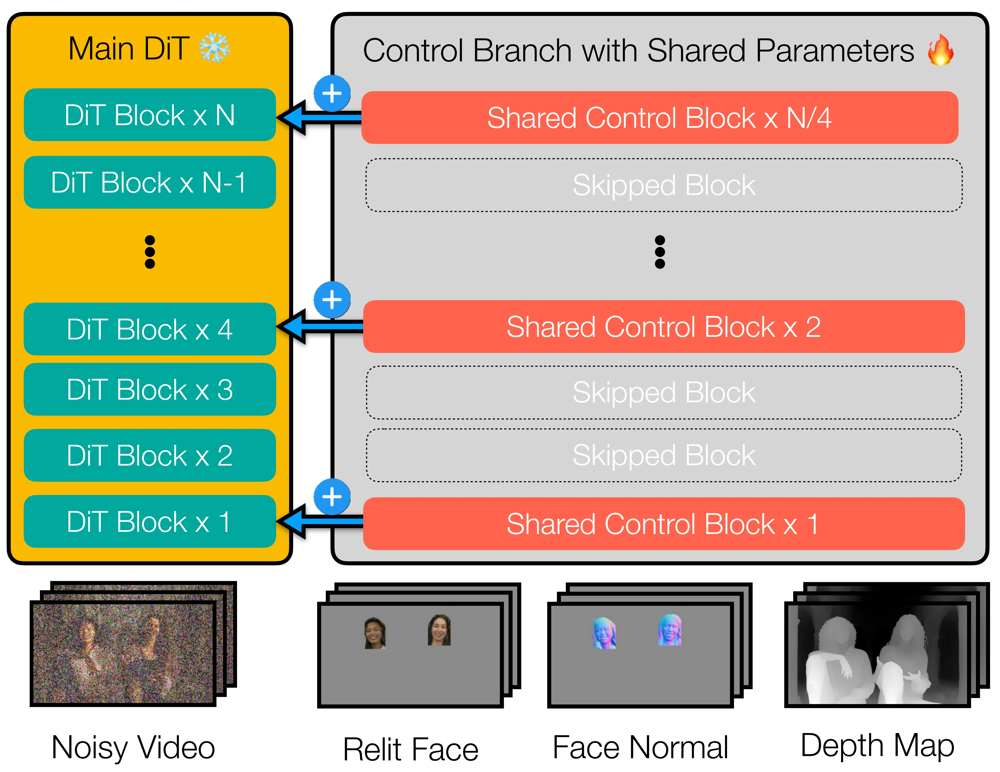
读数：AdaFace 可用，且边界写在假设里
在这个收缩后的问题里，FR 挪用的度量重新变得可用——这是本章最重要的对照证据。身份用 AdaFace（SCRFD 抠脸）度量 #Kim et al., 2022：
| 方法 | 单主体 AdaFace ↑ | 双主体 AdaFace ↑ | 表演保持（Exp-AU / Exp-EMOCA） |
|---|---|---|---|
| AnimateAnyone | 0.402 | — | — |
| VACE | 0.465 | 0.401 | — |
| WanAnimate（单主体次优） | 0.529 | 0.432 | 0.600 / 0.841 |
| FantasyPortrait | 0.507 | 0.433（双主体次优） | — |
| SteadyDancer | 0.479 | — | — |
| ID-V2V | 0.701 | 0.637 | 0.668 / 0.899（双主体 0.709 / 0.901） |
单主体 0.701 领先次优 0.172；用户研究面部一致性 75.00%（双主体 85.62%），全部 baseline ≤12.56%；VBench Temporal Flickering 0.993 单主体最优——时序一致性（P2）直接拿下一个正面读数 #Xu et al., 2026。消融的排序更有信息量：去掉 relit face video，AdaFace 0.701→0.574（−0.127，主贡献）；去掉 face normals 只降到 0.676（−0.025）——像素信号 ≫ 几何信号，身份信号该用什么表示，这个任务级实验给出了偏向源像素的答案。
绿光失败：窄化的代价在输入端显形
但"光照是唯一合法变化"的假设，约束的不只是编辑端，还有输入端。论文自认的失败模式：源视频带强绿色光或硬阴影时，即使编辑首帧已经去掉了绿色光，后续生成帧仍会复现绿色色偏——残光照线索逐帧泄漏，色偏与时序不一致同时出现 #Xu et al., 2026。作者的建议朴素得近乎坦白：用常规光照的源视频拍摄。这个失败案例值得放大看：它说明窄化路线的可用性依赖一条双向的契约——输出端的编辑必须可被"重光照"解释，输入端的源光照也必须落在训练分布内。契约任何一侧破裂，不变量假设就失效。
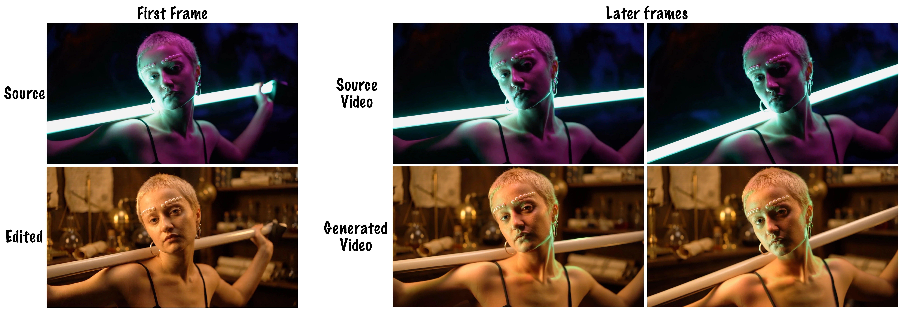
路线三答了什么、回避了什么
答了：受限风格化下的身份保持第一次同时拿到了可用的度量（AdaFace 0.701/0.637）、表演保持的独立指标（Exp-AU/Exp-EMOCA——把"表演不变"操作化为可测量的少见案例）与时序质量（Flickering 0.993）。它还示范了一条与 embedding 注入完全不同的身份信号路线：源视频全片像素锚定，能抓住骨骼/landmark 等抽象控制信号丢失的微表情与唇同步——这正是第 5 章参考图路线的先天短板。回避了：自由风格化的身份定义——"光照是唯一变化"约束下的度量可用性，不能外推到 StyleID 面对的自由风格化域；风格化向极端风格化（卡通/绘画）的推广，作者留作开放问题；发型/妆容这类改动则在形式化里被排除。换言之，路线三的 0.701 证明的不是"CSIM 在风格化域活了"，而是"把问题问对范围，旧尺子还能用" #Xu et al., 2026。
6.5 三条路线的地图：各答一角，各留一角
| 维度 | 路线一：StyleID（感知对齐） | 路线二：ID-Sim（selective sensitivity） | 路线三：ID-V2V（窄化问题） |
|---|---|---|---|
| 问题定义 | 风格化人像上"是否同一人"的人类判定对齐（判定观） | 理想度量公理化：环境不变 × 身份敏感（判定观 + 属性化线索观） | 不定义风格化身份；窄化为重光照下的身份 + 表演保持（不变量观） |
| 度量机制 | CLIP-L + LoRA + 三损失；余弦验证/检索 | DINOv3 ViT-L + LoRA + 双头投影；CLS InfoNCE + patch Sinkhorn OT | AdaFace（SCRFD 抠脸）+ Exp-AU/Exp-EMOCA + VBench 时序项 |
| 监督信号 | 2AFC 心理测量：StyleBench-S 约 22 万（224k）合成正对，90% 识别率阈值 | 10k 三元组：真实实例 + 生成式受控编辑（S2a 环境正样本 / S2b 身份硬负样本） | 源视频逐帧像素锚定：自造 relight 配对约 33 万对（无 RL、无奖励模型） |
| 回应的痛点部分 | P5 主体：风格化真人 ↔ 照片的跨域判定 + 人类校准基准 | 度量性质的语法 + 环境变化（P3）的受控训练与元评测；给 P1/P5 提供定义框架 | 受限风格化下度量可用 + 时序正面读数（P2 侧证）+ 表演保持 |
| 回避了什么 | 纯卡通域（符号化身份）；不接管照片域（LFW 失利）；人口偏斜/合成监督/极端姿态遮挡 | 人脸与风格化特化（评测域为通用物体）；广义身份（发型/配饰/风格化）不在定义内 | 自由风格化的身份定义；"光照是唯一变化"不可外推；极端源光照即失效 |
| 工程可得性 | 数据/代码/权重开源但无 LICENSE（商用风险） | MIT 开源；HF checkpoint 为 ViT-B（论文主配置 ViT-L，易错点） | 仅推理权重，无训练代码/数据 |
三个互不重叠的答案拼起来，恰好描出 P1/P5 的完整轮廓：StyleID 解决"风格化真人怎么判"（换真值），ID-Sim 解决"身份度量该满足什么"（换定义），ID-V2V 解决"问题收到多窄才可测"（换问题）。与系列十三的承接也在此显形：THEval 用统计证据宣判旧指标与人类偏好脱节，是"破"；本章三条路线是三种"立"——立的不是同一面墙，所以互相拼不上。
而拼不上，恰恰是最扎心的实证。三条路线互相零引用、零对比：StyleID 的 baseline 表里没有 ID-Sim，ID-Sim 的 49 个 setup 不含 StyleID，ID-V2V 的评测三件套依旧是 FR 挪用；加上第 5 章出场的 Identity-GRPO 自训奖励模型（0.890 vs ArcFace 0.772）#Meng et al., 2025，度量新生的四条支流至今互不通航。没有人检验过 StyleID 是否满足 selective sensitivity，没有人把 ID-Sim 用作风格化域的裁判，也没有人问过 ID-V2V 的光照不变量假设在 StyleBench 上能走多远。统一身份度量的设计空间——表示、监督信号、评测协议三个轴——尚无论文系统探索；风格化域内部，"轮廓/配色（符号化）vs 人类判定（感知）vs 结构不变量（几何）"三种身份观的分野（OQ2）也还没有裁判。这个悬而未决的战场，正是第 8 章的入口。
第 3 章我们把尺子（CSIM）本身放上了被告席，末尾留了一句"FR 编码器口径本身是未决问题，这场口径战争留给第 7 章"。本章正式开庭。在一个没有立法者的领域里，benchmark 就是事实上的立法者：它把"什么算身份一致性"写成协议，模型团队照着协议优化，论文照着协议报数，用户照着榜单选型。2025 年恰好构成一次难得的自然实验——三家权威评测（VBench-2.0、OpenS2V-Nexus、FCB）与一个挑战赛口径（ACM MM IPVG）几乎同时交卷，同一个概念拿到了四套互不兼容的操作化定义。本章把口径战争本身当作研究对象：先给一张全景对照表，再逐家拆解协议，最后回答两个问题——口径为什么打架？打架的代价是什么？
口径战争
不同 benchmark 对同一概念（身份一致性）采用互不兼容的操作化定义——不同的 FR 编码器、不同的锚定方式、不同的问题定义——致使分数与排名无法跨榜比较，甚至互相矛盾。本文用这个词想强调的是：这不是哪家的小失误，而是缺乏统一度量协议下的系统性必然；只要没人裁决口径，每张新榜单都在为战争添一支枪。
先上本章最重要的一张表——五套主流口径的全景对照。建议把它当作本章的考场座位表，后面每一节都在为其中一行做证词。
| 基准 / 维度 | 锚定方式 | FR 或特征空间 | 测的问题 | 外部参考身份 | 协议弱点 |
|---|---|---|---|---|---|
| VBench 1.0 Subject Consistency | 每帧 vs 首帧，全帧均值 | DINO 自监督 ViT（全帧、不裁脸） | 外观稳定（场景/服装/构图） | 无 | "换人"与"换装/换背景"不可分，身份信号被稀释 |
| VBench-2.0 Human Identity | 每帧 vs 首帧，余弦 ≥ 0.4 记一致帧（阈值化） | RetinaFace 裁脸 + ArcFace（resnet_face18，128×128 灰度） | 自一致身份（生成过程是否漂移） | 无（46 条单人 prompt） | 自一致 ≠ 指定身份；τ=0.4 无消融；灰度链对风格化失效；跨镜头换角误罚 |
| OpenS2V-Nexus FaceSim-Cur | 生成帧 vs 参考人脸图 | insightface 检测 + CurricularFace | 参考一致身份（是否生成了指定身份） | 有 | FR 选择无消融；与主指标 NexusScore（GME，刻意不用 FR）口径并立；自动指标人评对齐 ~75% 上限 |
| FCB Mode 1 | 每帧 vs 代表帧（锚定式） | 6 个 FR 交叉（VGG-Face 2015 → GhostFaceNet 2023） | 对锚保真 | 无外部参考（代表帧取自视频内） | 代表帧选取规则未披露；排名随裁判选择翻转 |
| FCB Mode 2 | 每视频 200 个随机帧对 | 同上 6 裁判 | 帧间相干 | 无 | E|i−j| ≈ T/3 系统性低估慢漂移；无方差与显著性检验 |
| IPVG 挑战赛 Face-Arc + Face-Cur | 生成帧 vs 参考人脸图（VIP-200K：200 未见 ID × 5 prompt） | ArcFace + CurricularFace 双尺子并列（+ CLIPScore + 人工分组合排名） | 参考一致身份 + 文本遵循 | 有 | 双尺子无方法论化（无排名稳定性报告、无分歧裁决规则）；排名混入人工分；选帧可与评测同源 |
读这张表请抓住三个观察。第一，没有两行使用相同的特征空间：DINO 全帧、ArcFace 裁脸、CurricularFace 裁脸、六 FR 交叉、ArcFace+CurricularFace 并列——五套尺子互不通用。第二，锚定方式有四种：首帧、参考图、代表帧、随机帧对——锚不同，测的就不是同一个量。第三，也是最容易被榜单使用者忽略的一点："身份一致性"在这些协议里至少是四个不同的问题（外观稳定？自一致？参考一致？保真+相干？），但论文标题与排行榜把它们统统叫作 consistency。下面逐家审理。
7.1 VBench 系的两代分维：从 DINO 全帧到 ArcFace 裁脸
7.1.1 它想回答什么问题：同一次自我修正，拆出两个维度
按教学惯例，先问每个 benchmark 想回答什么。VBench 1.0（CVPR 2024 Highlight）的 Subject Consistency 想回答的是："生成过程中，画面主体的外观是否稳定？"它的协议是 DINO 自监督 ViT 全帧特征（不裁脸），每一帧与首帧算余弦相似度，对非起始帧取均值、再对视频取均值 #Huang et al., 2024 #Caron et al., 2021。注意"全帧"两个字：服装、背景、构图全部混在特征里——它度量的是外观层面的稳定，而"换了一个人生成"与"换了一套衣服"在这把尺子上是同一种抖动。
VBench-2.0（2025.03）出自同一团队，主张从"表面忠实性"（superficial faithfulness）向"内在忠实性"（intrinsic faithfulness）的范式转移，建成 5 大类 18 维、与 VBench 1.0 互补不替代的评测系统，评测 HunyuanVideo、CogVideoX-1.5、Sora-480p、Kling 1.6 四个 SOTA #Zheng et al., 2025（协议全貌见 VBench-2.0 参考页）。对本文而言，最关键的动作是：它没有沿用 Subject Consistency，而是新开了 Human Identity 维度——RetinaFace 检测裁脸、ArcFace 提特征、首帧锚定。同团队两代基准刻意分维，等于官方背书了一个概念区分：外观一致 ≠ 身份一致。这正是第 2 章度量谱系里"Subject vs Identity"分野的制度化。在其三层评测框架（generalist / specialist / safeguards）中，Human Identity 属于 specialist 层的"度量复用"形态——直接挪用现成 FR 工具链，这与本 survey 的主线（FR embedding 的挪用史）严丝合缝。
7.1.2 协议：首帧锚定 + τ=0.4 硬阈值，细节以代码为准
Human Identity 的得分定义把连续的 CSIM 阈值化成了"一致帧命中率"：
这个公式值得逐项审问，因为每一项背后都藏着一个协议决策。$\varphi$ 的输入不是生成帧本身，而是 RetinaFace 裁出、resize 到 128×128、转灰度、与水平翻转堆叠成双通道后送入 resnet_face18 的人脸 patch——这些细节论文正文一个字没写，全部在代码库里（human_identity.py）#Zheng et al., 2025。锚 $I_0$ 是视频自身的首帧：首帧检不出人脸则整条视频剔除，有效帧不足 20 帧同样剔除，最终按视频级平均聚合。阈值 0.4 把余弦相似度二值化，且无任何消融——第 3 章已引 StyleID 的教训说明固定阈值 Acc 的读数陷阱。prompt 套件则是 46 条单人动作 prompt（"A man is doing yoga."式），全部单人、无任何参考身份描述；论文正文笼统写"每维约 70 条 prompt"，而代码实数各维 10–120 条不等、Identity 恰为 46 条——协议细节以代码库为准，论文数字当约数看。
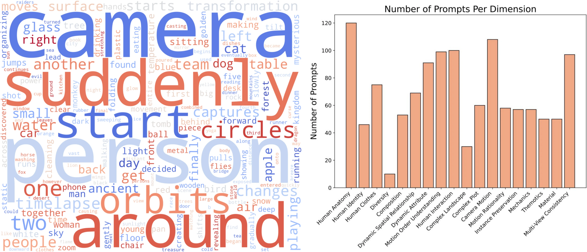
7.1.3 弱点：自一致 ≠ 指定身份，78.57% 的未饱和与 99.46% 的对齐
现在可以精确说出这套协议测的到底是什么："生成过程是否漂移"，而不是"是否生成了指定身份"。46 条 prompt 没有参考人脸，锚是视频自己的首帧——哪怕模型生成的是一个从头到尾稳定、但与任何目标人物无关的路人，分数照样可以很高。对数字人场景（给定参考图生成"这个人"的视频）而言，用户要的恰恰是后一种度量，那得靠 OpenS2V/IPVG 类参考协议。这是"自一致性 vs 参考一致性"的操作化区分，不是 bug 而是边界——但榜单使用者常常不知道这条边界存在。
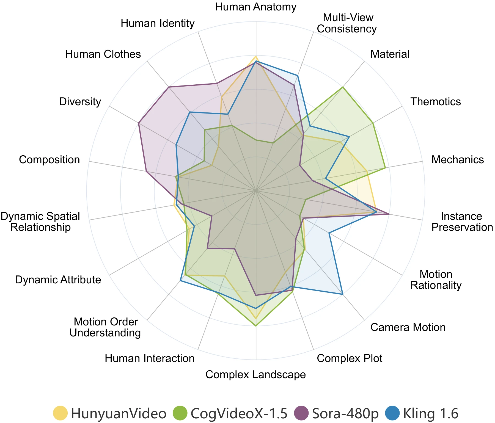
即便只在其自一致的口径内，结论也远未到可以松口气的地步：四个 SOTA 里最好的 Sora 只拿到 78.57%——按该协议口径，约每 5 个有效帧就有 1 帧被判身份漂移，"远未饱和"是官方口径 #Zheng et al., 2025。更有信息量的是排序分离：Identity 序为 Sora（78.57）> HunyuanVideo（75.67）> Kling（71.95）> CogVideoX-1.5（69.51），而 Anatomy 序为 HunyuanVideo（88.58）> Kling（86.99）> Sora（86.45）> CogVideoX（59.72）——Sora 从解剖榜第 3 升到身份榜第 1，身份保持与结构正确性是可分离的能力，单一"人物好"的叙事不成立。
这套协议的统计口碑反而是 18 维里最好的：Human Identity 与人类偏好排序的 Spearman 相关系数 99.46%，为 18 维最高（全表范围 81.70–99.31%）#Zheng et al., 2025。但请注意口径——这是"该维度上四个模型的排序与人类排序的相关性"，样本只有四个模型；把它与下一节 OpenS2V 的"全局分与人类偏好 ~75% 相关"直接比大小，就又掉进口径战争里了。此外还有第 3 章已立案的几项：灰度 128×128 预处理链对风格化域天然失效（P1/P5）；resnet_face18 是较老的 FR 骨干，对生成人脸的分布偏移未校准；场景切换后仍按首帧记分，对"合法换角"会误罚——46 条单人 prompt 回避了这个问题，也暴露了协议边界。顺带一提严肃 benchmark 的隐性成本：其人评基建为 5 组 × 4 模型 × 6 对/组的偏好标注、20% 抽检（95% 通过率）、累计 15.75 小时 + 284 小时 × 18 人的人力投入——复现协议本身就是工程门槛 #Zheng et al., 2025。
7.2 OpenS2V-Nexus 的反其道：把 FR embedding 从主指标里请出去
7.2.1 它想回答什么问题：S2V 任务与四层批判
OpenS2V-Nexus（2025.05，北大 Yuan 组，即 ConsisID 团队）想回答的是 Subject-to-Video（S2V）时代的问题："给定参考图，生成视频里的主体还是不是那个主体？顺不自然？"它是 benchmark + 百万级数据集双件套，在其 Table 1 对比矩阵里是唯一同时勾选"主体一致性"与"主体自然性"两项的基准 #Yuan et al., 2025（全貌见 OpenS2V-Nexus 参考页）。它对前代评测给出了四层批判，每一层都值得记录，因为它们精确描画了 VBench 系口径的边界：
- 任务错配：主流 benchmark（VBench、EvalCrafter、AIGCBench 等）全部为 T2V 设计，S2V 所需的"参考图锚定"维度集体缺席；
- 度量缺陷：继承 VBench 的做法"直接计算未裁剪视频帧与参考图的相似度"，不可避免引入背景噪声，且 DINO/CLIP 特征空间本身已被多篇工作证明不合理；
- 维度缺失：没有任何前代基准评"主体自然性"（naturalness），导致 copy-paste 型失败——一致性高但人眼觉得假——在现有分数里隐形；
- 高分掩盖失败：即便主体不自然或保真低，现有 benchmark 仍给高分，阻碍领域进步。
7.2.2 NexusScore 四步协议：刻意不用 FR，人脸单列
应对方案是本章最有趣的一次"反其道"。主指标 NexusScore 的完整协议分四步：(1) 用 YOLO-World 以参考图本身作为检测 prompt，在视频帧中检出主体 bbox；(2) 裁剪出对应区域，在 GME（Qwen2-VL 微调的多模态检索模型）的图文统一空间里算相似度；(3) 双阈值过滤——bbox 置信度 > α 且检索相似度 > β 才计入；(4) 按检出帧数 $T'$ 归一化，$S_{\text{Nexus}}=\frac{1}{I\cdot T'}\sum\sum M_{\text{retrieve}}(C_{i,t},R_i)$——分母用 $T'$ 而非总帧数 $T$，防止"只有一帧好"刷高分 #Yuan et al., 2025。关键决策在于：主体一致性刻意不用任何 FR embedding，作者明说该指标不算人脸相似度以提升鲁棒性——而人脸身份被制度性地单列为第六个维度 FaceSim-Cur：insightface 检测 → CurricularFace 特征 → 有效帧平均，直接继承 ConsisID 协议 #Yuan et al., 2025 #Yuan et al., 2024 #Huang et al., 2020。
这一拆分与 VBench-2.0 的 DINO/ArcFace 分维同向（都是把"主体一致"与"人脸身份"分开），却是从相反方向抵达的：VBench-2.0 在通用 T2V 里给身份补上一个 FR 维度，OpenS2V 在 S2V 里把 FR 从主指标中撤下、降级为单列子项。两家都承认"FR 不能包打天下"，但一家选择 ArcFace、一家选择 CurricularFace 且均无"FR 选择对结论影响"的消融——这对口径分歧是活证据，本文将其并列呈现、不做裁决（裁决问题留给第 8 章 OQ7）。六维评测的其余成员：NaturalScore 用 GPT-4o（版本锁定 gpt-4o-2024-11-20）按五点量表打分 #OpenAI, 2024，GmeScore 评文本相关，加 AestheticScore、MotionScore 构成总分——open-domain 权重为 Nexus 0.20 / Natural 0.24 / Gme 0.12 / FaceSim 0.20 / Aesthetic 0.12 / Motion 0.12，人脸身份占总分两成。
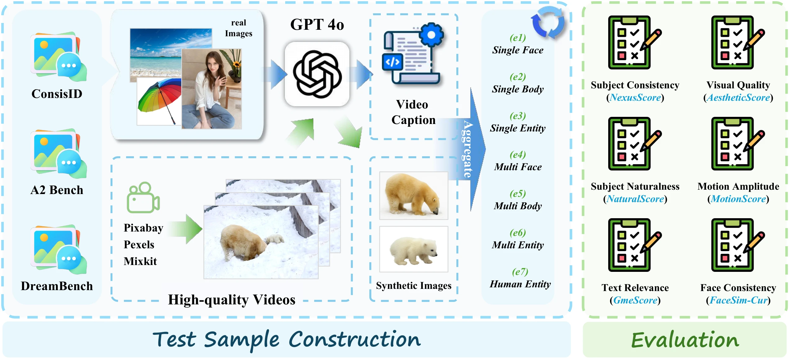
7.2.3 弱点与实证：VideoMaker 的脱节、三域排名与 75% 天花板
三域排名表给出的第一批事实：open-domain 是 Kling 1.6 的 Total 54.46% 第一；human-domain 换了冠军，Hailuo 以 60.20% 登顶；而全场最刺眼的读数属于 VideoMaker——FaceSim 76.45% 全场最高、Natural 47.08% 全场最低、GmeScore 45.28% 同为垫底 #Yuan et al., 2025。把参考脸"贴"得最死的模型拿了身份最高分，却生成了最不自然的视频——FR 分数与感知质量脱节的最极端实证（第 3 章 P5 已引，此处补充其协议语境：这正是 NaturalScore 被发明出来的理由，也是"高分掩盖失败"批判的定量注脚）。同表的失败现象学还包括 copy-paste、侧脸轮廓全灭、consistency fade（视频后半段主体细节逐渐消失）、首帧模糊——以及"人类身份保持系统性弱于非人实体"这一所有模型（含闭源）的通病。
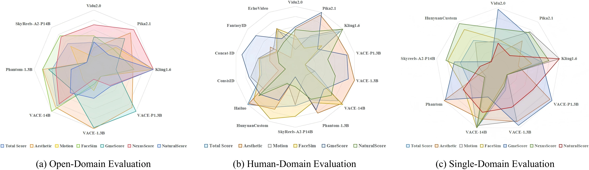
它自己的协议弱点也要如实入账：自动指标与人类偏好的相关性上限约 75%（173 人 × 60 视频的人评协议标定）——作者自认需要更好的指标；α/β 双阈值的具体数值未披露；每个样本只生成一个视频（seed=42），采样方差无从谈起；GPT-4o 既参与构造评测集（GPT-Image-1 合成参考图）又当 NaturalScore 裁判，同源偏差风险未排除；180 条 prompt 的规模小于 VBench 1.0 的 946 条；且英文 only #Yuan et al., 2025。数据侧还有一处需要给读者打好招呼的话术陷阱：摘要宣称"five million high-quality 720P triples"，正文实数是 5.4M clip（5.1M regular + 0.35M Nexus pairs）、其中 65% 为 720P，由 14.8M 候选经漏斗筛出——本文以正文实数为准。
7.3 FCB 的双协议与六裁判：把口径战争变成实验
7.3.1 它想回答什么问题：专项基准的定位与代价
FCB（Face Consistency Benchmark，2025.05）想回答的问题最窄也最尖锐："GenAI 视频里，角色的那张脸到底一致不一致？"论文自比 MMLU 与 GSM8K 的关系——通用榜单考通识，专项榜单考数学；FCB 是角色/人脸视频子域的专项卷。这个定位的代价要提前说清：其结论只在人脸子域有效，且只测了四个"写作时 VBench 榜单顶尖"的头部模型（HunyuanVideo、Vchitect-2.0、CogVideoX-1.5、Runway Gen-3，幸存者偏差），30 条 prompt 由真实视频帧 + ChatGPT 生成，720×720、人脸从全帧裁剪、无人脸帧跳过，并让真实视频走完全相同的协议作 baseline #Podstawski et al., 2025（精读见 FCB 精读页（系列六十二））。还有一个学界结构性的注脚：它没有引用任何 ID-preserving 生成文献——评测侧的孤立先驱，与生成侧彼此不知道对方的存在。
7.3.2 双协议：Mode 1 测保真，Mode 2 测相干
FCB 的第一件武器是把"测的问题"一分为二。距离统一用余弦距离 $D_{\cos}(x,y)=1-\frac{x\cdot y}{\|x\|\,\|y\|}$：Mode 1 把每帧与一个代表帧比（锚定式，测对锚保真）；Mode 2 每视频抽 200 个随机帧对互比（非锚定，测帧间相干）。同一个 CSIM 家族的度量，放进两种协议后排名可以完全反转——Vchitect-2.0 在 Facenet512 列从 Mode 1 垫底（0.2951）翻到 Mode 2 第一（0.1962），CogVideoX 镜像反向（0.1813 → 0.4162）#Podstawski et al., 2025。这套数值在第 3 章 P2 已完整立案（含 $\mathbb{E}|i-j|\approx T/3$ 的漂移低估推导），本章只保留协议层结论："保真"与"相干"是两个正交的量，单一 CSIM 数字把它们压成一团。协议的复现性缺口同样在协议层：代表帧怎么选、人脸检测器什么型号、FR checkpoint 哪个版本、随机种子——全部未披露，本 survey 将其评级为协议级约 70% 可复现、数值级不可复现。
7.3.3 六个裁判横跨代际：排名可以被裁判翻转
第二件武器是把"FR 编码器选择"从暗设变成实验：六个裁判横跨八年——VGG-Face（2015，2622 维分类式）#Parkhi et al., 2015、FaceNet / Facenet512（度量式）#Schroff et al., 2015、ArcFace #Deng et al., 2019、SFace（2022，合成数据训练）#Boutros et al., 2022、GhostFaceNet（2023，轻量）#Alansari et al., 2023——同一批视频让六个裁判各自打分。真实视频 baseline 落在 0.05–0.14、生成视频落在 0.14–0.53，这把"离真实还有多远"的绝对标尺是全文最有说服力的产出。但更重要的是裁判间的分歧：同一视频跨 FR 读数差 2–2.7 倍；最直观的读数仍来自 Vchitect-2.0 的 Mode 2 行——Facenet512 给出 0.1962（该列四个模型中最好，看似接近真实水平），VGG-Face 给出 0.5255（该列垫底，灾难级），同一批视频、同一协议，换个裁判从第一到垫底。最戏剧性的还是 Vchitect-2.0 的整体表现：按"写作时 VBench 榜单顶尖"遴选、出自 VBench 作者团队，却在 FCB 的 Mode 1 六列全部垫底（六列均值 0.4150 全场最差），ArcFace/SFace/GhostFaceNet/VGG-Face 四列的双协议 8 个读数中 5 个落在 0.48–0.53 区间（ArcFace 0.4843→0.4997，GhostFaceNet 0.5215→0.5266，SFace Mode 2 的 0.4798 亦在区间边缘）——"通用榜单排名 ≠ 面部一致性"的活证据 #Podstawski et al., 2025。SFace 的读数还送上一则讽刺：这个用合成人脸数据训练、理论上最贴生成分布的 FR，给真实视频打出的 baseline 却高达 0.1267（Facenet512 0.0514 的 2.5 倍）——合成训练分布并不自动转化为生成分布上的判别力。
7.3.4 公正评述：FCB 对 VBench 的批评，站得住但略过头
FCB 在 Related Works 里批评 VBench"不处理角色面部一致性"。这里给一次公正评述，不当任何一方的传声筒。站得住的部分：DINO 全帧特征确实不区分"换了一个人"与"换了衣服/背景/光照"，身份信号被稀释且与外观信号混淆；单一 extractor 无交叉验证，FCB 的六裁判矩阵恰好暴露了单尺的风险；VBench 没有真实视频 baseline，只能说"模型 A 比模型 B 一致"，说不出"离真实还差多少"。略过头的部分有两处：其一，VBench 的 Subject Consistency 正是"每帧 vs 首帧"的锚定式协议——与 FCB 自家的 Mode 1 同构；FCB 以"锚定式协议会漏检后半段换脸/首帧异常"批评 VBench，这条批评同样适用于自己的 Mode 1，其真正的增量在 Mode 2 而非对 VBench 的否定。其二，"不处理 character facial consistency"这句对 VBench 欠公允——VBench 论文自己承认 Subject Consistency 包含 subject identity inconsistency 的意图，只是度量工具（DINO 全帧）与粒度（不做 face crop）不专用；准确的批评应是"通用特征全帧计算不足以 isolate 人脸身份漂移"，而非"不处理"。一句话收束：FCB 的贡献是把协议差异变成可见的实验，而不是终结争论——它自己的复现缺口与统计缺口（无方差、无显著性、60 单元格多重比较）说明，协议化的 CSIM 仍不是度量问题的答案。
7.4 IPVG 挑战赛：双尺子的自发起点
口径战争的第四个战场不在论文而在竞赛。ACM MM IPVG（Identity-Preserving Video Generation）Challenge 的官方口径是双尺子并列：Face-Arc（ArcFace）与 Face-Cur（CurricularFace）同时报告，加 CLIPScore 与人工分组成组合排名（分低者优），测试集 VIP-200K 为 200 个未见 ID × 5 prompt = 1,000 对 #Luo et al., 2026。以 KeyID 为例（IPVG 2026 Track 2 runner-up，1.81 分，冠军 USTC-CMI 1.25 分）：VIP-200K 上 Face-Cur 0.633 / Face-Arc 0.630 / CLIPScore 30.9，领先 TPIGE +28.7% / +33.2%；同一张表里 Concat-ID 的身份分只剩 0.242 / 0.228——不到它自报协议（ArcSim 0.442 / CurSim 0.466）的一半 #Luo et al., 2026 #Zhong et al., 2025。同方法、同指标、不同测试集，近乎腰斩——跨表比大小在当前口径下不可能成立，这是最直白的一份证词。
双尺子本身是实践者对"单一 FR 不可靠"的自发回应，且早有先例：PuLID 训练用 arcface-50、评测换 CurricularFace，开了训练/评测度量解耦的先河 #Guo et al., 2024；ConsisID 让 FaceSim-Arc 与 FaceSim-Cur 成对出现，成为视频侧惯例 #Yuan et al., 2024；MoFE 的评测套件继续沿用 FaceSim-Arc/Cur + CLIP-Score + FID + VBench 四子项 #Wang et al., 2025。但"双尺子"停在工程直觉层面：两把尺子给出不同排名时怎么办——谁主谁辅？分歧超过多少要报警？没有任何一家给出方法论。KeyID 还暴露了挑战赛口径下更大的博弈空间：其关键帧选择用 ArcFace 相似度 argmax，而榜单指标恰好含 Face-Arc——管线对度量显式取最优（构造性偏置，第 3 章与第 5 章已立案）。协议混搭则进一步加深混乱：Identity-GRPO 的评测干脆借 OpenS2V 协议报 Aesthetics/GmeScore #Meng et al., 2025——训练用一套尺子、评测借另一套尺子、榜单再配第三套尺子，这正是口径战争日常化的样子。
7.5 收束：战争的三个层面与它的代价
现在可以给这场战争画出战场地图了。口径分歧恰好分布在三个正交的层面：
- 层面一：FR 编码器选择。ArcFace（VBench-2.0）vs CurricularFace（OpenS2V）vs AdaFace（ID-V2V 等风格化侧）vs 六模型交叉（FCB）vs 双尺子并列（IPVG）——四家均无"FR 选择对结论影响"的消融，而 FCB 的六裁判实验已经证明：选择可以翻转排名（第 8 章 OQ7 的裁决问题）。
- 层面二：锚定方式。首帧（VBench-2.0）/ 参考图（OpenS2V、IPVG）/ 代表帧（FCB Mode 1）/ 随机帧对（FCB Mode 2）——锚决定你测的是"漂移""保真"还是"相干"，E|i−j| ≈ T/3 的低估与 Concat-ID 的跨榜腰斩都发生在这一层（第 8 章 OQ3 的协议标准化问题）。
- 层面三：测的问题定义。外观稳定（VBench 1.0）/ 自一致身份（VBench-2.0）/ 参考一致身份（OpenS2V、IPVG）/ 保真+相干（FCB）/ 自然度加权总分（OpenS2V Total）——"身份一致性"一词在不同榜上是不同的量，这一点榜单使用者几乎从不知情。
代价已经在前文逐一取证，这里收拢成一句话：同一模型在不同榜上可以互换名次。Vchitect-2.0 在 VBench 系榜单顶尖、在 FCB 双协议下全场最差；Vchitect 与 CogVideoX 在 FCB 两种模式间镜像反转；Runway 换一个 FR 裁判就从最优滑到垫底；Concat-ID 换一个测试集身份分腰斩；ConsisID 换一个评测子集 FaceSim-Arc 在 0.46–0.73 之间漂移。这不是哪个模型的失败，而是排行榜的语言本身没有统一——榜单测量的从来不是"身份"，而是"身份 × 协议"，协议一换，语言作废。
但要把话说全：口径战争同时也是这个领域进步的形态。VBench 1.0 → 2.0 的分维是自我修正；OpenS2V 把 FR 从主指标中撤下是对"FR 不包打天下"的制度化承认；FCB 的双协议与六裁判把两处暗设的口径变成了受控实验；IPVG 的双尺子是实践者的自发预警。分歧被摆上台面，才可能被裁决——而裁决需要什么，正是第 8 章的主题：时序协议的 factorial 标准化（OQ3）、FR 口径的裁决与"多 FR 交叉验证的排名稳定性报告"惯例（OQ7），以及三条新度量路线（感知对齐、selective sensitivity、偏好奖励学习）能否会合成统一的身份度量设计空间。关于"当下怎么选度量"的实操建议，也可回看前作 数字人训练与推理评测中的 CSIM 陷阱讨论。
本章小结：五套口径，一场战争，三个层面
- 全景：VBench 1.0（DINO 全帧、外观）/ VBench-2.0（ArcFace 裁脸、首帧自一致、τ=0.4）/ OpenS2V（NexusScore 弃用 FR + FaceSim-Cur 单列）/ FCB（双协议 × 六裁判）/ IPVG（Face-Arc + Face-Cur 双尺子）——特征空间、锚定方式、问题定义三者皆不同。
- 操作化区分：自一致（VBench-2.0，78.57% 未饱和、99.46% 单维人机对齐最高、46 条 prompt 无参考身份）≠ 参考一致（OpenS2V/IPVG）≠ 保真+相干（FCB Mode 1/Mode 2）——数字人场景需要的是第二种。
- 活证据：ArcFace vs CurricularFace 并列无消融（VBench-2.0 vs OpenS2V）；VideoMaker FaceSim 76.45% / Natural 47.08%（FR 与感知脱节）；Vchitect-2.0 从 VBench 榜首崩至 FCB 0.48–0.53（榜单排名 ≠ 面部一致性）；Concat-ID 0.466 → 0.242（跨表比大小不可能）。
- 公正评述：FCB 对 VBench 的批评站得住（DINO 全帧稀释身份信号、无真实 baseline）但略过头（"每帧 vs 首帧"与 Mode 1 同构；"不处理"应为"不足以 isolate"）。
- 走向：三个层面（编码器/锚定/问题定义）的裁决 = 第 8 章 OQ3（时序协议标准化）与 OQ7（FR 口径裁决、多 FR 排名稳定性报告惯例）。
第 7 章结束时，我们停在口径战争的战场中央：ArcFace、CurricularFace、AdaFace 三家分治，双协议与单协议各执一词，挑战赛组合分自成体系。但本 survey 不打算以战争收尾——因为过去两年真正发生的事比"打了一仗"重要得多：身份度量本身第一次成了研究对象。StyleID 与 ID-Sim 把"身份相似度"当作可以专门设计、专门训练的模型来造（StyleID 精读、ID-Sim 精读），Identity-GRPO 的自训奖励模型证明学习型度量可以接管训练信号，FCB 则把"协议化复用旧尺子"推到极限并标出了它的边界。批判的证据已经足够多，本章问收束性的问题：如果统一身份度量是一块待开垦的设计空间，它的坐标轴是什么？三条新路线各自站在哪里？会合点在哪？我们先画一张三轴地图，再把八个开放问题逐个摆上桌面——每个问题都附有本文已核对的具体证据，它们合起来，就是这个领域接下来最值得做的一份清单。
8.1 设计空间三轴：一张地图与三个观察
统一度量谈何容易——"统一"至少要同时回答三个互相独立的问题：身份用什么可计算的表示？度量从哪里获得"什么是身份"的监督？分数在什么协议下才可比？这三个问题就是设计空间的三个轴。
定义：统一身份度量的设计空间
一个身份相似度函数 $d(x,y)$ 的完整设计空间由三个正交轴张成：表示轴——$x,y$ 被编码成什么向量（FR embedding / 感知特征 / 结构不变量）；监督信号轴——$d$ 从哪里学习"身份"的语义（人类判断心理测量 / 属性化对比 / 偏好奖励）；评测协议轴——$d$ 的输出在什么条件下可比（锚定方式 × 帧采样 × 报告口径 × 统计检验）。任何具体度量都是这个空间里的一个点；CSIM 家族占据的那个点，坐标是（FR embedding，无监督校准，协议各自为政）。
把三条新路线、一个对照组（CSIM 家族）和一个协议化先驱（FCB）放上地图（图 8-1），三条新路线在空间中的位置一目了然。
graph TD
subgraph AXIS1["轴一 · 表示：身份装进什么向量"]
R1["FR embedding：ArcFace / CurricularFace / AdaFace"]
R2["预训练感知编码器 + 轻量适配"]
R3["结构不变量：几何 / 光照不变量 / 源像素锚定"]
end
subgraph AXIS2["轴二 · 监督信号：度量从哪里学身份"]
S1["人类判断心理测量（2AFC）"]
S2["属性化对比三元组"]
S3["偏好对与奖励模型"]
end
subgraph AXIS3["轴三 · 评测协议：分数怎样才算数"]
P1["锚定方式：参考图 / 首帧 / 随机帧对 / 双协议"]
P2["帧采样与报告口径：均值 / 分布 / 漂移斜率"]
P3["统计检验：方差 / 显著性 / 排名稳定性"]
end
CSIM["对照：CSIM 家族"]
STY["StyleID（感知对齐）"]
IDS["ID-Sim（选择性敏感）"]
RM["Identity-GRPO 自训 RM（偏好奖励）"]
FCBN["FCB（协议化复用）"]
CSIM -->|"FR embedding，无相似度语义校准"| R1
STY -->|"CLIP-L + LoRA"| R2
STY -->|"StyleBench-S 约 22.4 万对 2AFC 监督"| S1
IDS -->|"DINOv3 ViT-L 双头投影"| R2
IDS -->|"S1/S2a/S2b 三元组 + InfoNCE"| S2
RM -->|"Qwen2.5-VL-3B + LoRA"| R2
RM -->|"15k 偏好对 + BTT 目标"| S3
FCBN -->|"双协议 + 六裁判交叉"| P1
FCBN -.->|"止步均值报告，无统计检验"| P2
STY -.->|"协议轴缺席"| P3
IDS -.->|"协议轴缺席"| P3
RM -.->|"协议轴缺席，且与优化目标同源"| P3图 8-1：统一身份度量的设计空间三轴图。三条新路线（实线）在表示轴上收敛于预训练感知编码器，在监督信号轴上三分天下；协议轴（虚线）上除 FCB 的局部探索外几乎无人踏足——虚线的含义是"应当存在却尚未建立"的连接。CSIM 家族作为对照占据表示轴的 FR embedding 一端，监督轴上是空位。
读图可以直接得到三个观察。
观察一：表示轴已经收敛。StyleID（CLIP-L + LoRA）、ID-Sim（DINOv3-ViT-L + 双头投影）、Identity-GRPO 自训 RM（Qwen2.5-VL-3B + LoRA）的底座不约而同是"预训练感知编码器 + 轻量适配" #Yun et al., 2026 #Chae et al., 2026 #Meng et al., 2025。StyleID 甚至做过反向验证：在 StyleBench-S 上全参微调 ArcFace、AdaFace 作底座，StyleBench-H Cross-ID 的 TPR 只有 0.8399 与 0.8489，均低于 CLIP-L 底座的 0.9020 #Yun et al., 2026——"把 FR 修得更好"不是出路，"为相似度语义专门训练的感知编码器"才是。三条路线用三种方式独立投出了同一票。
观察二：监督信号轴三分天下。心理测量（StyleID 以 90% 识别率阈值从 2AFC 曲线放大出约 22.4 万对监督）、属性化对比（ID-Sim 的 10k triplets：环境编辑配对教"不变性"、身份编辑配对教"敏感性"）、偏好奖励（Identity-GRPO 的 15k 偏好对训练 BTT 奖励模型）——三种人类信号的采集成本、噪声特性与可扩展性各不相同，但从未被同一种度量同时消费过。
观察三：评测协议轴集体缺席。三条路线的精力都在前两轴，没有一条触碰协议层——度量自身的分数该怎么报告（排名稳定性、方差、显著性检验）仍是空白。协议轴上唯一深耕过的是 FCB（双协议 × 六裁判），但它是零训练复用路线，止步于均值报告、无统计检验 #Podstawski et al., 2025。度量与协议是两个正交的问题，目前的社区分工是"度量学习归度量论文、协议设计归 benchmark 论文"，没有人同时做。
| 路线 | 表示轴（底座） | 监督信号轴（人类信号的形态） | 评测协议轴（度量自身怎么被评） | 留下的空位 |
|---|---|---|---|---|
| StyleID（感知对齐） | CLIP-L + LoRA，三损失（角度 m=0.5 / 对比 λ=0.6 / 正则 λ=0.1） | StyleBench-S：4073 身份 × 55 张 ≈ 224k 对，2AFC 心理测量曲线 90% 阈值筛监督 | TPR@FPR 1e-3/1e-4 与 AUROC，三 split 报告，无阈值指标优先 | 域特化（LFW 失利）；纯手绘域领先骤减；GitHub 无 LICENSE |
| ID-Sim（属性化对比） | DINOv3-ViT-L/16 + 双头投影（CLS + patch），Sinkhorn patch OT 推理度量 | 10k triplets（S1 实例对 / S2a 环境编辑 / S2b 身份编辑）+ InfoNCE | 49 setups 元评测 + 敏感度线性回归 + bootstrap 置信区间 | prompt-free 定义边界；光照鲁棒略弱于 DINOv3 的 tradeoff；开源权重为 ViT-B 而论文主配置 ViT-L |
| Identity-GRPO 自训 RM（偏好奖励） | Qwen2.5-VL-3B + LoRA（vision encoder 参与训练） | 15k 偏好对（10k 自动 + 5k 人工），BTT 偏好目标，两阶段训练 | 奖励预测准确率（500 人标样本）：0.890，对 ArcFace 的 0.772 | 主指标与优化目标同源（循环性）；未做跨模型独立评测；未检验 selective sensitivity |
| 对照：CSIM 家族 | FR embedding（ArcFace / CurricularFace / AdaFace） | 无——判别训练的副产品，从未为相似度语义校准 | 锚定 / 采样 / 阈值 / 编码器各自为政；无统计检验惯例 | P1–P5 全部（第 3 章账本） |
表 8-1：三条新路线与 CSIM 对照组在设计空间三轴上的位置。注意第三列与第四列的区别：前者是度量"学什么"，后者是度量"怎么被检验"——三条新路线在前者上各有建树，在后者上几乎全部欠账。
会合点的轮廓因此浮现：感知编码器底座（表示轴已收敛）× 混合监督（心理测量金标签 + 属性化对比的自动化 + 偏好数据的规模化）× 协议化报告（多裁判排名稳定性 + 统计检验）。这个组合目前没有任何一篇论文交付——它正是 OQ1 所问的"设计空间"里最大的一块空地。
8.2 度量本体的三个开放问题（OQ1 / OQ2 / OQ6）
OQ1 统一度量的设计空间：三条路线为何互不相认
先把问题问清楚：三条几乎同时出现的新度量路线，为什么互相之间零引用、零对比？
证据相当干净。StyleID 代表"基准驱动的度量学习"——感知对齐编码器加心理测量基准，约 22.4 万对人类判断监督 #Yun et al., 2026；ID-Sim 代表"属性化对比学习"——selective sensitivity 形式化加 patch OT，7 个评测集 49 个 setup 拿下 48 个最优 #Chae et al., 2026；Identity-GRPO 的自训奖励模型代表"偏好奖励学习"——500 个人标偏好对上奖励预测准确率 0.890，对 ArcFace 的 0.772 #Meng et al., 2025。经原文引用链核验：三篇论文互不引用——StyleID 的对比表里没有 ID-Sim，ID-Sim 的 baseline 列里没有 StyleID，Identity-GRPO 的奖励候选清单里也没有这两个度量。没有一篇把 StyleID 度量用作 ID-Sim 的 baseline，更没有人检验过自训 RM 是否满足 selective sensitivity。
为什么重要：三条路线其实在解同一道题的不同侧面——StyleID 回答"监督信号怎么从人类判断来"，ID-Sim 回答"度量该满足什么性质"，Identity-GRPO 回答"学习型度量能否当训练信号"。零互引意味着设计空间从未被系统探索：三个顶点之间的大片空地（例如"用心理测量金标签校准 + 用属性化三元组训练 + 检验 selective sensitivity + 跨模型独立评测"的完整方案）无人踏足。地图已经画好（图 8-1），缺的是把三个顶点连起来的人。
OQ2 跨风格域的身份定义：轮廓配色，还是结构不变量
一句话问题化：当参考图是动漫角色时，"同一个角色"到底指什么？
现有证据给出两个相反的候选答案。FR 社区的 iCartoonFace 基准（2019）暗示卡通身份的判别依据是轮廓与配色——卡通脸没有照片域的皮肤纹理与光照模型，身份寄生在外形与色彩配置上 #Zheng et al., 2019；ID-V2V 则把身份窄化为结构不变量——在"光照是唯一合法变化"的形式化下，面部结构与表情不变即身份保持 #Xu et al., 2026。而 StyleID 的度量是在"风格化真人"上训练的（10 种艺术风格 × 7 级强度，被试明确被告知第二张图是风格化渲染），其自认局限包括人口偏斜与合成监督 #Yun et al., 2026。纯卡通域有多难，可以从它自己的实验里读出：在 SKSF-A 艺术家手绘集的检索实验中，StyleID 对最强 baseline 的领先骤降到 +5.3 个点（素描查询 0.7044 对 CLIP 的 0.6519）——远小于它在风格化真人域的碾压幅度 #Yun et al., 2026。系列十三（数字人非真实感评测专题）已在动漫域专门讨论过 CSIM 的失效，但没有替代度量可用。
为什么重要：生成需求正跨真实↔动漫↔3D 渲染域扩张，而"身份的跨域不变量"没有定义——没有定义就没有度量，没有度量就没有优化。具体缺口有两个：纯卡通域的专用度量（StyleID 式心理测量流程的卡通版），与跨域基准（StyleBench 的跨域版本：同一身份在真实照片、风格化真人、纯卡通三种形态下的判定）。ID-V2V 用自我设限回避了定义问题，但回避不是答案——一旦"光照是唯一合法变化"的假设被发型、画风、夸张比率之类的改动打破，它的 AdaFace 读数立即失去解释权。
OQ6 平均脸化作弊：CSIM 分数里有多少伪身份信号
一句话问题化：如果一个模型把所有脸都生成长得像"平均好人脸"的样子，CSIM 会给它发奖吗？
答案是会，而且有三层证据。第一层是心理学实证：British Journal of Psychology 2025 年的工作证明合成 AI 人脸比真人脸更接近人群平均脸——连超级识别者都能察觉这种平均化 #Dunn et al., 2025；而平均脸恰是 FR embedding 空间的高相似度吸引子，越典型的脸彼此余弦相似度越高。第二层是记忆化：Arc2Face 的反记忆实验显示，生成模型对训练身份的最近邻相似度 0.74、对未见身份仅 0.37——模型确实能靠记忆训练身份刷分 #Paraperas-Papantoniou et al., 2024（站内精读）。第三层是多样性坍缩的孪生现象：PhotoMaker 的 single-image 训练变体 Face Sim 全场最高（60.4）而 Face Diversity 全场最低（51.7）#Li et al., 2024——分数与多样性同时走向极端，正是"分数的一部分并非身份"的直接读数。
为什么重要：三层证据叠起来，CSIM 分数的语义就出现一个从未被量化的空洞——分数里有多少是"平均脸偏置 + 记忆化"的伪身份信号？回答它需要专门研究：构造控制平均脸距离的评测集、联合报告身份分与多样性分、设置 held-out 身份检验记忆化。而在 RL 把度量变成直接优化目标的时代（见 OQ4），作弊空间不再是理论风险，而是会被系统性利用的工程现实——抗作弊基准是统一度量的前置条件，不是锦上添花。
8.3 协议与口径的两个开放问题（OQ3 / OQ7）
OQ3 时序评测协议的标准化：四种协议量出四种病
一句话问题化：同一段视频，四种主流协议能给出四种互不兼容的诊断，怎么统一？
先把四种协议摆出来。FCB 用双协议——Mode 1 参考帧锚定测保真、Mode 2 随机帧对测帧间相干，再乘六裁判交叉 #Podstawski et al., 2025（站内精读）；VBench-2.0 用首帧锚定的自一致协议，$\tau=0.4$ 阈值化，46 条 prompt 无参考身份 #Zheng et al., 2025（参考页）；OpenS2V 的 FaceSim-Cur 用参考图锚定 #Yuan et al., 2025（参考页）；IPVG 挑战赛用"客观分（Face-Arc/Face-Cur 等）+ 人工分"的组合分排名（分低者优）#Luo et al., 2026。四种协议锚的根本不是同一个量，却在共用"身份一致性"这个词。共性缺陷更致命：随机帧对的 $\mathbb{E}|i-j|\approx T/3$ 系统性低估慢漂移约 3 倍，且全领域无方差报告、无显著性检验。
协议不标准化的代价已有实证标价：ConsisID 同一模型同一指标随评测子集在 0.46 与 0.73 之间漂移 #Yuan et al., 2024（站内精读）；Concat-ID 自报 CurSim 0.466，换到 VIP-200K 只剩 0.242——近乎腰斩 #Zhong et al., 2025 #Luo et al., 2026。需要的是 factorial 协议设计：把锚定方式 × 帧采样策略 × 报告口径（均值/分布/漂移斜率）× 统计检验当作四个因子做因子化实验，系统回答"哪个因子在多大程度上改变结论"。FCB 只走了第一步（双协议 × 六裁判），止步于均值报告；完整版无人做。为什么重要：度量学习（第 6 章）解决"尺子准不准"，协议标准化解决"读数能不能比"——两件事缺一，排行榜就还是抽奖。
OQ7 FR 编码器口径的裁决：三把尺子，零消融
一句话问题化：ArcFace、CurricularFace、AdaFace 三家分治，选哪把尺子会改变结论吗？
答案是会，而且没有人系统量过。阵营划分清晰：ArcFace 阵营（VBench-2.0 的 Human Identity、PuLID 的训练 ID loss、ConsisID 的 FaceSim-Arc）#Deng et al., 2019 #Zheng et al., 2025 #Guo et al., 2024 #Yuan et al., 2024；CurricularFace 阵营（OpenS2V 的 FaceSim-Cur、PuLID 的评测尺、Concat-ID 的 CurSim、KeyID 的 Face-Cur）#Huang et al., 2020 #Yuan et al., 2025 #Zhong et al., 2025 #Luo et al., 2026；AdaFace 阵营（ID-V2V 的主度量、Arc2Face 与 StyleID 的对照实验）#Kim et al., 2022 #Xu et al., 2026 #Paraperas-Papantoniou et al., 2024 #Yun et al., 2026。三家分治，且均无"编码器选择对结论影响"的消融。FCB 的六模型交叉是唯一系统性证据：同视频跨裁判分差 2–2.7 倍（真实视频基线 Facenet512 0.0514 vs GhostFaceNet 0.1391，连"地板"都随裁判漂移），模型排名随裁判翻转，VGG-Face 列的 gap-ratio 高达 4.00 倍 #Podstawski et al., 2025；候选机理第 2 章讨论过——VGG-Face 的 2622 维分类式嵌入与 FaceNet/ArcFace 的度量式嵌入几何性质不同（ArcFace 深读）。
为什么重要：统一度量出现前，最低成本的止血方案是把"多 FR 交叉验证的排名稳定性报告"变成惯例——排名先于绝对值：一个模型在两把尺子下都排第一，比它在单把尺子下分数高 0.05 有信息量得多。Concat-ID 与 KeyID 的双尺子（Face-Arc 与 Face-Cur 并报）是社区的自发起点 #Zhong et al., 2025 #Luo et al., 2026，但它停留在"两把"，没有方法论化：几把才够？排名多大程度一致才算稳健证据？都没有答案。裁决三把尺子，本质是给"FR 家族内部分歧"做一次 FCB 式的完整审计。
8.4 最紧迫的一问：评测循环性与 reward hacking 的系统防治（OQ4）
一句话问题化：当尺子同时是教练和球员，怎么防止"分数提升"退化为"对尺子的过拟合"？
第 3 章立案的三个案例，在收束章需要换成"防治"的视角重新审视。案例一，作为 loss：PuLID 的精确 ID loss 把 Face Sim 推到 0.761 的代价是 CLIP-T 跌 4.15 点，作者自认该 loss 导致面部模糊——模型学到的捷径是生成"更讨 ArcFace 喜欢的脸"，而非保持身份 #Guo et al., 2024。案例二，作为奖励：Identity-GRPO 的主指标 ID-Consistency 就是它自训奖励模型的分数——VACE-1.3B 从 2.606 升到 3.099（+18.9%）的战绩里，优化目标与评测指标同源，user study（Win Rate 24%→76%）是唯一独立信号 #Meng et al., 2025。案例三，作为选帧器：KeyID 用 ArcFace 相似度 argmax 从 $w=8$ 的窗口挑 $K=5$ 个关键帧，再用 Face-Arc 评测——选择器与裁判同源，构造性偏置写进流程图 #Luo et al., 2026。
值得肯定的是，论文自己已经意识到问题：Identity-GRPO 明确提出"该 RM 能否当独立评测指标"——但止步于提问，未做跨模型评测 #Meng et al., 2025。而系统性防治方案——held-out 度量（训练用一把、评测换另一把，PuLID 的训练/评测解耦是雏形）、人类标签的独立校准、循环性检测协议（专门检验模型是在优化身份还是优化度量）——在身份领域无人提出。
为什么说这是八问中最紧迫的一问：监督学习时代，度量进 loss 只造成跷跷板与模糊；RL 时代，度量直接成为奖励函数，过拟合度量的收益被组内相对优势机制放大。第 5 章的 Identity-GRPO 只是"身份指标作奖励"家族的第一个深读样本，同族路线正在扩张——每一篇都在等一套现成的防治协议。循环性防治之于 RL 身份生成，正如 held-out 测试之于监督学习：没有它，排行榜上的数字无法解释。
8.5 知识断层与任务边界（OQ5 / OQ8）
OQ5 FR 旧知识的迁移：两个社区的知识断层
一句话问题化：FR 社区为"embedding 何时失效"积累了十年答案，为什么生成评测一篇都没有引用？
第 3 章已给出断层的三份证据：跨年龄——CALFW（2017）实证 FR 对跨年龄身份敏感，embedding 并非时不变身份表示 #Zheng et al., 2017；整容——CVPRW 2020 系统实证整容手术后 FR 失效 #Rathgeb et al., 2020；卡通域——iCartoonFace（2019）#Zheng et al., 2019。本 survey 深读的 16 篇生成与评测论文，无一引用这条知识线；生成评测在逐条"重新发现"FR 的旧知识（P3 的姿态敏感、P1 的域外失效，FR 社区都早有系统结论）。但断层是双向的，且旧知识无法照搬：FCB 的 SFace 反例——六个裁判中唯一用合成数据训练的 FR，给真实视频的基线反而最差（0.1267，是 Facenet512 的 2.5 倍）#Podstawski et al., 2025——"在合成分布上训练"没有自动转化为"对生成分布的判别力"。
为什么重要：断层意味着双向浪费。生成评测无法利用 FR 十年积累的鲁棒性协议设计（跨年龄、跨质量、跨域的评测构造方法论），FR 也没有针对生成分布重训的动力。修桥的工作清单是具体的：把 CALFW 与整容协议翻译成生成评测的 stress test（生成侧的跨年龄/跨编辑基准）、以生成分布构造 FR 训练数据并检验 SFace 式反例能否消除、为卡通域造 iCartoonFace 的生成侧版本。这些工作的单篇成本不高，收益却是整条度量链的鲁棒性。
OQ8 多主体身份与身份间干扰：不存在的系统性评测
一句话问题化：两个身份同框时，"身份保持"还是一个可度量、可比较的能力吗？
证据是一串"承认但没做"。PhotoMaker 明确单 ID 限制 #Li et al., 2024；Concat-ID 把多身份做出领先（ArcSim/CurSim 0.492/0.514，对 Ingredients 的 0.293/0.316），但 ViCLIP 0.190 未胜 Ingredients 的 0.199——身份领先、prompt 遵循反而落后，且整个多身份评测只有 14 对参考图 × 20 条 ChatGPT prompt，小到无法支撑结论 #Zhong et al., 2025；Identity-GRPO 的数据管线把主体数限制在 3 个以内，还需要专门的 Prompt Finetuning 对齐不同底座在多主体下的行为偏置——多主体不是顺带能力，是专门工程 #Meng et al., 2025；ID-V2V 双主体 AdaFace 0.637 低于单主体的 0.701 #Xu et al., 2026；MoFE 的源码注释自述单人多身份干扰，而其评测协议沿用 ConsisID 的单人假设，根本没有覆盖自己的局限场景 #Wang et al., 2025（站内精读）。
为什么重要：多主体是数字人应用的常态——对话、群像、叙事——但"身份间干扰"连一个量化指标都没有：A 的生成为什么伤害 B？是注意力分配问题、特征串扰、还是参考嵌入的相互污染？每篇论文都把它写进 limitations，没有一篇把它变成实验。系统性多主体评测（干扰度量 + 控制变量协议 + 跨模型对比）是整张开放问题清单里工程门槛最低、生态收益最高的一项。
8.6 尾声：给读者的实践建议——写在统一度量到来之前
统一度量不会明天到来。如果你今天就要交付一个身份保持系统，或者评测一批模型，本 survey 把 16 篇论文的证据压缩成四条可以直接落地的建议——每一条都锚定本文具体章节的证据，不是方法论空话。
- 多 FR 交叉验证，排名稳定性先于绝对值。同一批输出至少过两把尺子（ArcFace + CurricularFace 是最低配置），报告排名是否一致，而非只报单把尺子的分数。依据：FCB 实证同视频跨裁判分差 2–2.7 倍、模型排名随编码器翻转（第 3 章）；PuLID 训练用 arcface-50、评测换 CurricularFace 的解耦是先例（第 4 章）；Concat-ID 与 KeyID 的 Face-Arc/Face-Cur 双尺子是视频侧的自发惯例（第 5 章）。当两把尺子选出不同冠军时，不要急着宣布赢家——那更可能是测试分布或协议在起作用。
- 双协议报告：锚定保真与帧间相干分开量。单一 CSIM 数字把"偏离锚点"与"帧间游走"两种正交的失败压成一个数——FCB 双协议下 Vchitect-2.0 从垫底到第一的完整反转（0.2951↔0.1962）就是代价（第 3 章）；参考一致性与自一致性是两个不同的问题，VBench-2.0 的首帧自一致协议度量不了"是否生成了指定身份"（第 7 章）。最低配置：参考图锚定分 + 首帧锚定分各报一个；视频再长，加漂移斜率。
- 人评抽检是 FR 分数与感知质量脱节的最后防线。依据：VideoMaker 的 FaceSim 全场最高（76.45%）而自然度全场最低（47.08%）（第 3 章）；Identity-GRPO 的 user study 是它唯一独立于优化目标的信号（第 5 章）。任何用于决策的评测都值得一小批人评锚定——VBench-2.0 的 20% 抽检与 OpenS2V 的 173 人人评说明这不便宜，但必要（第 7 章）。输出落在风格化域时，直接换 StyleID、ID-Sim 一类的学习型度量，并注明其域边界——StyleID 在 LFW 自然照片上仍不敌 ArcFace，学习型度量也有自己的域（第 6 章）。
- 永远不要跨 benchmark 比绝对值。依据：Concat-ID 自报 CurSim 0.466，同一模型在 VIP-200K 上只剩 0.242——腰斩的不是模型，是测试分布（第 3 章）；ConsisID 同一指标随评测子集漂移 0.46–0.73（第 5 章）。跨论文比较的唯一安全姿势：同口径（同编码器 + 同协议 + 同测试集）复测，或显式标注口径差——第 7 章的口径对照表就是为此准备的速查表。
更细分场景的评测实践——非真实感与卡通域的工具链和陷阱——见系列十三（数字人非真实感评测专题）；各家 benchmark 协议的逐项对照见本文第 7 章。
8.7 终章收束：度量不是从天上掉下来的法律
最后回望第 1 章的加冕史。CSIM 之所以成为身份一致性的通用语言，不是因为它通过了什么资格考试——没有任何社区为它立法，没有任何 benchmark 为它做过编码器消融——而是因为在一个没人立法的年代，它是最省事的默认选项：IP-Adapter 时代还没有尺子（无任何身份指标，主体一致被作者列为 open problem）#Ye et al., 2023，InstantID 干脆不报数（全文零定量表）#Wang et al., 2024，PhotoMaker 报了数却发现三把尺子选出两个冠军 #Li et al., 2024。度量从来不是天上掉下来的法律，而是社区在没有更好选择时的惯例沉淀——而惯例的第一属性是"大家都这么用"，从来不是"它是对的"。
本 survey 用 16 篇论文的证据清点了这份惯例的账：五大缺陷（P1–P5）、三重角色的循环性、口径战争、知识断层，以及一份尚未有人认领的设计空间。但收尾的判断是乐观的。StyleID 的心理测量基准、ID-Sim 的 selective sensitivity、Identity-GRPO 的奖励模型资格赛、FCB 的双协议、VBench-2.0 的分维自纠、OpenS2V 的弃用宣言——这些工作共同标记了一个转折点：身份度量第一次被当作一个研究问题，而不是一个工具。
CSIM 的黄昏，不是身份评测的黄昏。恰恰相反——工具的黄昏与问题的黎明是同一时刻：当一把尺子开始被审视，更好的尺子才可能被造出来。三个坐标轴已经画好，会合点的轮廓已经可见，八个开放问题就是八张开工令。剩下的工作，属于接下来动手的人。
参考来源
- Ye, H., Zhang, J., Liu, S., Han, X. & Yang, W. (2023). IP-Adapter: Text Compatible Image Prompt Adapter for Text-to-Image Diffusion Models. arXiv. arXiv:2308.06721
- Wang, Q., Bai, X., Wang, H. et al. (2024). InstantID: Zero-shot Identity-Preserving Generation in Seconds. arXiv. arXiv:2401.07519
- Li, Z., Cao, M., Wang, X., Qi, Z., Cheng, M.-M. & Shan, Y. (2024). PhotoMaker: Customizing Realistic Human Photos via Stacked ID Embedding. CVPR 2024. arXiv:2312.04461
- Guo, Z., Wu, Y. et al. (2024). PuLID: Pure and Lightning ID Customization via Contrastive Alignment. NeurIPS 2024. arXiv:2404.16022
- Zhong, Y., Yang, Z., Teng, J., Gu, X. & Li, C. (2025). Concat-ID: Towards Universal Identity-Preserving Video Synthesis. ICCVW 2025 (HiGen). arXiv:2503.14151
- Luo, J., Zhong, Y., Shen, H., Xiao, Y. & Yang, Z. (2026). KeyID: Decoupled Drafting and Keyframe Editing for Identity-Preserving Video Generation. ACM MM 2026. arXiv:2608.16154
- Meng, X., Zhang, Z. et al. (2025). Identity-GRPO: Optimizing Multi-Human Identity-preserving Video Generation via Reinforcement Learning. arXiv (NeurIPS 2025 投稿). arXiv:2510.14256
- Xu, Y., He, M., Salamanca, P. et al. (2026). ID-V2V: Identity-Preserving Video Restylization. SIGGRAPH Asia 2026. arXiv:2607.22830
- Yun, K., Lee, C., Jeong, A., Kim, Y., Lee, S. & Noh, J. (2026). StyleID: A Perception-Aware Dataset and Metric for Stylization-Agnostic Facial Identity Recognition. SIGGRAPH 2026. arXiv:2604.21689
- Chae, J., Kolkin, N., Wang, J.-H., Zhang, R., Beery, S. & Ham, C. (2026). ID-Sim: An Identity-Focused Similarity Metric. CVPR 2026. arXiv:2604.05039
- Podstawski, M., Kudelska, M. & Wang, H. (2025). Face Consistency Benchmark for GenAI Video. PP-RAI 2025. arXiv:2505.11425
- Yuan, S., Huang, J., He, X. et al. (2024). ConsisID: Identity-Preserving Text-to-Video Generation by Frequency Decomposition. CVPR 2025 Highlight. arXiv:2411.17440
- Wang, Y., Li, M., Hu, X. et al. (2025). Collaborative Face Experts Fusion in Video Generation: Boosting Identity Consistency Across Large Face Poses（v1 名 MoFE）. arXiv (CVPR 2026 投稿). arXiv:2508.09476
- Paraperas-Papantoniou, F. et al. (2024). Arc2Face: A Foundation Model of Human Faces. ECCV 2024 (Oral). arXiv:2403.11641
- Zheng, D., Huang, Z. et al. (2025). VBench-2.0: Advancing Video Generation Benchmark Suite for Intrinsic Faithfulness. arXiv. arXiv:2503.21755
- Yuan, S., He, X., Deng, Y. et al. (2025). OpenS2V-Nexus: A Detailed Benchmark and Million-Scale Dataset for Subject-to-Video Generation. arXiv. arXiv:2505.20292
- Huang, Z., He, Y., Yu, J. et al. (2024). VBench: Comprehensive Benchmark Suite for Video Generative Models. CVPR 2024. arXiv:2311.17982
- Deng, J., Guo, J., Xue, N. & Zafeiriou, S. (2019). ArcFace: Additive Angular Margin Loss for Deep Face Recognition. CVPR 2019. arXiv:1801.07698
- Huang, Y., Wang, Y., Tai, Y. et al. (2020). CurricularFace: Adaptive Curriculum Learning Loss for Deep Face Recognition. CVPR 2020. arXiv:2004.00288
- Kim, M., Liu, F., Jain, A. K. & Liu, X. (2022). AdaFace: Quality Adaptive Margin for Face Recognition. CVPR 2022. arXiv:2204.00964
- Schroff, F., Kalenichenko, D. & Philbin, J. (2015). FaceNet: A Unified Embedding for Face Recognition and Clustering. CVPR 2015. arXiv:1503.03832
- Parkhi, O. M., Vedaldi, A. & Zisserman, A. (2015). Deep Face Recognition（VGG-Face）. BMVC 2015.
- Caron, M., Touvron, H., Misra, I. et al. (2021). Emerging Properties in Self-Supervised Vision Transformers（DINO）. ICCV 2021. arXiv:2104.14294
- Radford, A. et al. (2021). Learning Transferable Visual Models From Natural Language Supervision（CLIP）. ICML 2021. arXiv:2103.00020
- Fu, S., Tamir, N., Sundaram, S. et al. (2023). DreamSim: Learning New Dimensions of Human Visual Similarity using Simulated Data. NeurIPS 2023. arXiv:2306.08388
- Yang, Z., Teng, J., Zheng, W. et al. (2024). CogVideoX: Text-to-Video Diffusion Models with An Expert Transformer. arXiv. arXiv:2408.06072
- Wan Team (2025). Wan: Open and Advanced Large-Scale Video Generative Models. arXiv. arXiv:2503.20314
- Xu, J., Luo, J. & Yang, Z. (2025). Improving Identity Preservation in Video Generation with Multi-Branch Models. ACM MM 2025.
- Li, L., Bao, J., Yang, H., Chen, D. & Wen, F. (2020). FaceShifter: Towards High Fidelity and Occlusion Aware Face Swapping. CVPR 2020. arXiv:1912.13436
- Chen, R., Chen, X., Ni, B. & Ge, Y. (2020). SimSwap: An Efficient Framework For High Fidelity Face Swapping. ACM MM 2020. arXiv:2006.06540
- Boutros, F., Huber, M., Siebke, P., Rieber, T. & Damer, N. (2022). SFace: Privacy-friendly and Accurate Face Recognition using Synthetic Data. arXiv. arXiv:2206.10520
- Alansari, M., Hay, O. A., Javed, S. et al. (2023). GhostFaceNets: Lightweight Face Recognition Model From Cheap Operations. IEEE Access 11. IEEE Access
- OpenAI (2024). GPT-4o（OpenS2V-Nexus NaturalScore 锁定 gpt-4o-2024-11-20 版本）.
- Zheng, T., Deng, W. & Hu, J. (2017). Cross-Age LFW: A Database for Studying Cross-Age Face Recognition in Unconstrained Environments（CALFW）. arXiv. arXiv:1708.08197
- Rathgeb, C. et al. (2020). Plastic Surgery: An Obstacle for Deep Face Recognition?. CVPR Workshops 2020.
- Zheng, Y., Zhao, Y., Ren, M. et al. (2019). Cartoon Face Recognition: A Benchmark Dataset（iCartoonFace）. ACM ICMR 2020. arXiv:1907.13394
- Peng, Z., Xu, J., Huang, Y. et al. (2025). Stylized-Face: A Million-level Stylized Face Dataset for Face Recognition. ICCV 2025.
- Dunn, J., White, D., Sutherland, C. A. M. et al. (2025). Too good to be true: Synthetic AI faces are more average than real faces and super-recognizers know it. British Journal of Psychology. DOI: 10.1111/bjop.70063.